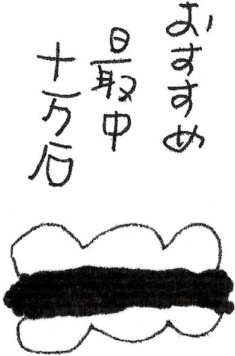

| なぜかいい町 一泊旅行 | |
| 池内 紀 | |
| (2006) | |
小さな町が好きだ。ながらくあちこち旅してきたので、カンといったものができている。
「この町はどうかナ」
日ごろから気をつけている。新聞や雑誌で見かけると、切り取っておく。何かの用で出かけたとき、ついでに寄り道をする。まるで知らない町だが、なぜかよさそうな気がして、ためしに立ち寄ってみた、といったこともある。
「アレレ......」
お目あてのところが案に相違してつまらなく、しかたなしに一つとなりに移ったら、とてもいい町と出くわした。そんなケースもある。
何かしら共通点があるようだ。いずれも多少とも不便なところにあって、鉄道だと支線なり私鉄なりに乗り換える。あるいは、それもとっくに廃線になっていて、一日何便かのバスだったりする。
たいてい古い町である。城下町だったり、寺町だったり、宿場町だったり。それなりの歴史をになってきたが、ごくささやかな役まわりであって、天下の趨勢などとはかかわってこなかった。御城下といっても、ナントカという大名の分家筋が殿様で、石高はせいぜい二万石どまり。城跡が桜の名所になっている。
とりたてて宣伝するほどの名所旧跡があるわけではない。目ぼしいところは、二、三時間でまわれる。そのあとはブラブラしている。裏通りの繁り合った庭の奥に、古びた西洋館がのぞいていたりする。
「お茶・お華・和裁・初歩より教授資格まで」
もはや用のなくなった看板を、しげしげとながめている。やや傾いた家の軒に「靖国英霊の家」の札が貼りつけてあって、時がハタと止まったぐあいだ。
都市も銀行も組織も催し事も、何もかもが大きくなる。大きくなることが、唯一生きのびていく手段であるかのようだ。拡大は速度と連動しており、大きくなればなるほど、そこのシステムそのものがスピードを要求される。せわしなく、あわただしく、めまぐるしくなる。たえず変更や、更新や、移動があって、かたときも停止が許されない。ほんのちょっと腰かけて休もうとすると、たちどころに「落ちこぼれ」のレッテルがつく。
ちょっと不便で、現代から少しズレた小さな町は、わずかに残された避難所だ。毎日の暮らしのなかで、つい忘れがちな何かを思い出させてくれる。きまってそんな町には、一徹者がやっている古風な喫茶店があって、のどにしみとおるような珈琲にありつける。
着なれたシャツにジーンズ、愛用の軽いジャンパー。靴は足の甲をキリリと紐でむすぶタイプ。旅用具は小ぶりのリュックサックが一つきり。両手が自由だし、地べたであれ床であれ、どこにでも置ける。
リュックには少々ゼイタクをしている。いまのは二代目だが「ハクライ物」で、実にぐあいがいい。肩にちょいとひっかけただけで、ちゃんと安定している。飾りめいたものは一切なし。背のあたるところに工夫がしてあって、たっぷり詰めても重みが伝わってこない。要所に革があてがってあって、それが手ずれで風格のある色つやをおびてくる。何ごとにも研鑽が要るもので、このタイプにいきつくまでに、いくつも廻り道をした。
中には洗面具と地図と小型のカメラ。折りたたみ傘と薄手のマフラー。天気がどう変わっても安心だ。小袋が二つ。一つには、いろんな種類のアメ玉が入っていて、疲れたときなど口に放りこむ。もう一つは腹痛や下痢や風邪用のクスリ入り。すりむいたりしたときのためのメンソレータム。さらに扇子が一本。暑い季節だけでなく、湯上がりに重宝する。
ほかにはメモ帳と三色ボールペン、財布が二つ。一つはいつものお尻のポケット、もう一つがリュックのポケットに納まっている。お尻のをなくしても大丈夫だし、めったにないことながら、旅先で買い物をしたいときもある。これを称して「ケータイ銀行」。資金量は数万円程度だが、銀行を背中にしょっていると思うと、こころ強い。
このリュックが、いつもかたわらにいる。人けない町はずれ、乗り物の隣席、公園のベンチ、寝床のかたわら。文字どおり同行二人、わが分身であり、この相棒は無口で、従順で、我慢強く、邪険にされても文句一ついわない。
わりと近くでも、一泊をあてる。家を出るのは午後である。夕方ちかくのこともある。どうして朝に出ないのか？
朝に出かけようとすると、前夜から気がせくものだ。早く起き、せかせか朝食をとり、あわただしくとび出したら、ちょうど出勤時間とかち合って、背広組のなかに身をちぢませることになる。
前夜から気にしていたせいか、どうも寝たりないぐあいで、やたらにあくびが出る。早朝のあわただしさで、忘れ物に気づいたりする。なくてもかまわないにせよ、忘れたこと自体が不快である。
出てきた勢いからして、目的地に着くことを優先する。途中の町など眼中にない。乗り換えのとき、一つでも先の便にして、ときには階段を駆け上がる。
「ヨーシ、まにあった」
会社出勤のときと変わらない。
それほどまでしてやって来たわりには、中途半端な時刻に着いて、時間の使い勝手がよくないものだ。一つところでゆっくりしていられず、朝と同じようにせかせかして、何がどうというわけもなしにもの足りないまま、宿に入るハメになる。
午後出発の場合、朝はふだんどおりでいいのである。新聞を読み、庭の花をながめ、ボンヤリしている。爪切りを持ち出し、爪を切る。いつものリュックサックなので、あらためて用意するものなどないのだが、ふと思いついて追加する。しかし、考えてみると、たいして必要のないものであって、また元どおりに修正する。
昼さがりや午後の乗り物はすいている。遅く出たわりには、夜までけっこう時間があって、途中に十分、寄り道ができる。要はこの日、目的地の宿に着きさえすればいいのである。
由緒ある旅館は、多少とも気が重い。幸いにも小さな町には、その手の宿はまずもってない。昔は駅前旅館といった。たしかに駅の前、あるいは駅前通りを少し行った先の曲がり角にあった。映画「駅前」シリーズの舞台になり、コミカルな人間模様で笑わせた。森繁久弥や三木のり平やフランキー堺といった、なつかしい俳優たちが、お手のものの芸達者を披露していた。
実際はあんな騒々しいものではなかった。かすれぎみの金文字で屋号の入ったガラス戸。入ったところがコンクリートのたたきで、隅にオモトの鉢があり、焼き印入りの下駄がきちんと揃えてあった。あたりは静まり返っていて、正面の柱時計がチクタク音を立てている。何度か声をかけると、奥で人のけはいがして、眼鏡を鼻先にずらした当主がノッソリとあらわれた。
さすがにそんな宿は、もうほとんどなくなった。代わってビジネス・ホテル、あるいはシティ・ホテル。新しいスタイルの駅前旅館である。より機能的で、快適で、ゆっくりくつろげる。予約は簡単だし、いつ入ってもいい。昔の駅前旅館のご主人は、たいてい頭がうすかったが、当今の駅前ホテルもリタイヤ後の第二の職場になっているのか、フロントの人のおつむのぐあいがよく似ている。町にくわしい点も同じで、安くて旨い店を教えてもらえる。
相客なども、以前とさして変わらない。夜ふけに廊下で足音がして、仲間同士の別れぎわのやりとりがドアごしに聞きとれる。その人の職場や暮らしを想像していると、そこはかとなく「旅」のふぜいがわいてくる。
一泊後の二日目が、旅の初日である。この身はすでに旅先にいる。この日いちにち、たっぷり時間がある。
見知らぬ町の朝はいいものだ。観光名所とされるところでも、人かげがない。建物や風景から頭上の空までも、ひとり占めできる。係の人も、朝はみんな機嫌がいい。特製のお茶をふるまわれたりする。
そんな機会に、とっておきをおそわっておく。裏山の見晴らしがいい、といったことでもかまわない。土地の人の体験が選びとった一点があるものだ。ためしに教えられた道筋をたどってみると、きっと先人がいて、「おやっ」といった顔で迎えられる。おたがいに邪魔をしないのがコツであって、ふたこと、みことのやりとりをして、あとは知らんぷり。
ほんの少し坂道をのぼっただけなのに、たしかに眺望がいい。天地が一度にひらいたような広がりがあって、空気も旨い。目玉が洗われたぐあいで、広大な眺望を目に入れると、近まのところでも、旅のスケールがうんとひろがる。
ここには十六の町を収めている。旅の見本帳であって、むろん、ほかにも多くのいい町がある。ふと出くわして知己をむすんだ人と同じで、その名を思い出すと、いろんな記憶がよみがえる。
目 次
本文カット・池内 紀
―― 斜里町（北海道）
ここは知床半島の入口、斜里の町。バスターミナルに大きなアーチ状の看板があって、「歓迎、ようこそ知床国立公園へ」。〝ウェルカム・トゥ・シレトコ〟の英文つき。
遠い昔を思い出して、ちょっぴりおセンチになった。二十代の半ばだったが、羅臼岳へ登るためにやってきて、同じこのバスターミナルの前に佇んでいた。英文つきの大看板があったかどうかは定かではないが、駅前のたたずまいは記憶にあるのと変わらない。右の角に旅館斜里館、前方は港へつづく道路と広い空。
そのときは、すぐさま夕方のバスで登山口の岩尾別へ向かった。海沿いを走っているあいだ、夕焼け空に羅臼岳が黒い大きなシルエットをえがいていた。
古い記録には、「舎利」あるいは「斜里」とある。アイヌ語の地名に漢字をあてたわけだが、舎利だと「遺骨」の意味。縁起がよくないというので斜里に落ち着いたのだろう。それはそれとして、港へ向かう道はゆるやかに下っていく。いかにも、「斜里」にいる感じ。
斜里川の河口にひらけた港で、コンクリートの突堤が海をかこいこむようにのびている。漁業組合の建物と魚菜卸売市場とが並び立っている。背中にゼッケンのようにして「斜里港」と書いた漁船が五、六隻。どれも小振りで、船体がまっ白なせいか、漁船というよりレジャー用の船に見える。
「シャリ 当所運上屋有、産物、鱒、魚油、鯡、鱈......」
寛政九年（一七九七）、高橋壮四郎という者が書きとめた『蝦夷巡覧筆記』には、当地のことがこんなふうに書き出されている。すでに公務をとり行う「運上屋」が置かれていたのだろう。産物には魚類のほかに、「熊胆、熊皮」とあって、山の産も扱っていた。
当時、北海道は「エゾ地」とよばれ、松前藩の領地だった。その松前と斜里とは東西の対極にあたり、もっとも遠い。藩は一切を商人に請け負わせ、運上金を納めさせた。幕末の探検家、松浦武四郎は何度か知床を歩き、くわしい日誌を残しているが、経営を請け負った商人たちは、お目付役の監視がないのをいいことに、アイヌ民族を酷使したらしい。壮健な男は漁場へつれていって帰さない。若い女は慰み用。老人、子供たちが残され、「その憐れさは聞くに堪えない次第」。
くわしく証言を書きとめたのは、記録を幕府に呈上して実情を伝えるためだったようだが、時は「安政の大獄」のころ。幕府自体が存亡ただならぬ状況で、武四郎の『知床日誌』はそのままお蔵入りになってしまった。
斜里運上屋のあった辺りは水産物加工場になっている。倉庫の前に、平べったい木箱が山のように積み上げられていた。商品名はすべて「新巻さけ」。これに「カネギク」「マルタツ」「成瀬食品」といった会社名と商号マークがついているだけだが、赤いマークが適度にちらばって、絵柄のように美しい。空き箱一つ一つが互い違いに重ねてあって、まるで不思議な塔のようだ。人間はこんな作業にも、われ知らず造形美をこころがけるものらしい。
空き箱の塔の上に家並みがのっかったぐあいに見える。それは背後がグンと高いからで、斜里町は、大きく下町と上町に二分される。港からつづく低地帯は、明治から大正にかけての中心区。急坂を上がった丘陵地は、大正十四年（一九二五）の鉄道開通以後にひらけた。そのせいだろう、昭和はじめの地図には、ちょうど下町・上町の境界にあたるところに役場や警察署や郵便局、裁判所出張所などがかたまっている。町のどちら側にも顔を立てたぐあいだ。
警察と隣り合った鎮守社斜里神社に、寛政八年（一七九六）御鎮座の額がかかっていた。石の灯籠は天保五年（一八三四）の日付。境内が広々としていて、まわりの繁みが影をつくっている。その下で休んでいると、犬をつれた人がやってきた。問われるままにやりとりしていて、ヘンなことを知らされた。神社はもともと「あっち向き」だったそうだ。
「あっち向き？」
海に向いていた。漁師たちの守り神。それがクルリと百八十度向きを変え、役割も海から離れ、農業や商売の神になった。町の発展に応じて神さまも模様替えをしたわけだ。
なるほど、ふつう本殿の背後には、こんもりとした鎮守の杜があるものだが、斜里神社は背の低い木があるばかりで、左右の繁みだけがうっそうとしている。杜であったところに新しく参道がつけられ、参道だったところに木が植えられたのだろう。
お隣りの警察署や旧町役場はどうなのかと尋ねたところ、そこまでは知らないが、やはりもとは「あっち向き」だったのではないかとのこと。その人はそう言いながら、両手を交通整理の警官のようにして交叉させた。
北海道斜里郡斜里町は、面積七百三十七平方キロ、人口一万三千人あまり。北海道開発局監修の「カントリー・サイン・マップ」というのがあって、市町村案内のランドマークをズラリと掲げているが、それによると斜里町はフクロウが枝にとまり、背後に海と山並みという図柄。「セールスポイント」として、「知床五湖、オシンコシンの滝、百平方メートル運動の森トラスト」。
フクロウは「知恵の鳥」とされるが、どうして斜里町にあてられたのだろう？ この種の鳥がいるような深い山並みをもつ、といった理由からかもしれないが、期せずしてこの町に合っている。漁業と農業と観光を巧みに組み合わせて町づくりをやってきた。小さな自治体なのに町立の博物館や図書館をもち、ともにしっかりと実績を上げている。フクロウの知恵を備えた人がいるからではあるまいか。こういうところには風狂なタイプが住みつくもので、商売のアガリをせっせと美術館づくりにつぎこみ、「北のアルプ美術館」という、わが国に二つとないユニークなものをこしらえた。
警察署の隣りの旧町役場は、昭和初期のモダニズム風の建物で、赤い屋根にシャレた窓ワクがよく似合っている。正面が半円状にふくらみ、背後に小さな塔を背負っている。
役場を新築したとき、旧の建物をどうするかで議論があった。「図書館などにはモッタイない」という声もあったが、大勢が押し切って町立図書館に改装した。前庭の花壇がやさしげだ。左に駐車場と小さな自転車置き場。自転車と乳母車が並び、入口の傘立てに杖が立てかけてある。よそ者でも、つい入りたくなる。
屋根の上の塔が気になったので、特別にのぼらせてもらった。二階の踊り場わきにドアがあって、急な階段がジグザグにのびている。小さなドアを開けたとたん、広大な眺望の中にとびこんだ。北はオホーツク海、海岸に白い波がレースのように打ち寄せている。東には根室海峡、海の色合いが微妙にちがう。わが青春の羅臼岳は雲に隠れていたが、南の斜里岳は形よい三角錐をスックと突き上げている。
眺望を楽しむためではなく、役場のころは大事な役廻りをつとめていたのだろう。戦争中は「敵機来襲」の監視をしたのではあるまいか。それかあらぬか天井に東西南北の方位と角度がしるしてあった。
建物は昭和四年（一九二九）に建てられ、駅まわりの発展を見越してだろう、「あっち向き」ではなく、はじめから今あるとおり入口は南を向いていたそうだ。
博物館への途中の公園に「津軽藩士殉難慰霊の碑」というのがあった。はじめて知ったのだが、二百年ばかり前に悲惨な事件が起きている。文化三年（一八〇六）、ロシア船が樺太に出現。通商を求めて断られた腹いせに、その地の運上屋や番屋を焼き払った。エトロフ島にも上陸、同じく番屋、倉庫を焼き払った。幕府は急きょ、東北諸藩に北方の固めを命じ、翌文化四年八月、津軽藩士百名が警備のため斜里に到着、直ちに陣屋の建設にかかった。工事が終わるのが十一月。エゾ地ではすでに船便もとまり、長い冬ごもりに入っていた。
硬直した藩の官僚体制が引き起こした悲劇だろう。何の予備知識も、備えもなしに厳寒の地に送り出した。本来なら、先住のアイヌ民族の知恵を借りるべきなのに、それもしなかった。医学的には「浮腫病」などと言われた。水腫病とも言って、カロリーやタンパク質の欠乏、寒気、水などによって生じる。足先からむくんで全身に及び、腹がパンパンにふくらんで、苦しみながら死んでいく。
十一月、最初の死者、十二月には十八人、一月は二十七人、二月十四人、三月八人。ひと冬の越冬で計七十二人の死者が出た。
この間、ロシア船の襲来は一度もなく、帰国願いの使者が発ったが引き揚げの命令は下らない。救出の船がきたのは、ようやく六月のこと。当初の百人のうち津軽の土を踏んだのは、わずか十七人だった。
くわしいことを知ったのは斜里町立知床博物館の刊行物によってである。ロビーに既刊のものがジャンル別に分けて展示されていた。名前から知床の自然を扱う博物館を連想してきたが、自然はもとより歴史、地誌、風土、地名、郷土学習シリーズなどにわたって幅が広い。刊行物によっては「斜里町立知床博物館協力会」発行になっている。予算を補うためのシステムがあるのだろう。乏しい予算を嘆いているだけでは何ごともはじまらない。ここにもフクロウの知恵が要る。
若い学芸員と話していて、その口からふと洩れた。ミューゼウムは、ふつう「美術館」と訳されるが、もともとは博物館であって、ひろく美も自然も歴史も含んでいる。知床博物館はミューゼウム本来の任を果たしているまでのこと。
いかにも、そのとおり。日ごろはわかっているつもりだが、つい忘れていた。負うた子に教えられたぐあいである。
駅にもどる道筋で、何度か立ちどまった。さほど複雑な通りでもないのに、駅のありかがわからない。まるきり逆に歩いているような気がして、二度ばかり地図をたしかめた。
町のつくりが主産業とともに形を変えたせいではあるまいか。漁業についで木材の時代があった。大正のころだが、背後の森の豊富な原木が「木材王」とよばれる人物を生み出したりした。昭和に入って農業がのしてくる。農家が全戸数の六割をこえ、さいはての町が純農村の性格をおびていった。
昭和七年（一九三二）の記録では、北見管内全町村で二千七百町歩の水田とある。全耕地面積の三分の一に及んだ。しかし、前年には冷害にみまわれ、同七年、九年、十年と四度の大冷害にあって、種もみさえ取れない惨状を呈した。斜里では昭和十年（一九三五）を最後に水田が姿を消した。
バスが市街を出ると広大な農地がひろがっている。おおかたがジャガイモ、テンサイ畑。牧場風のサイロがあらわれては消える。人家は見えないが、ジャージにトレパンの中学生が一人、二人と降りていく。夕焼け空のなかに黒々と羅臼岳がそびえていた。遠い記憶が舞いもどって、雄大な風景全体が幻景のように見える。
それはいいのだが、すぐうしろの中学高学年とおぼしい女子二人がタダならぬ話をしている。町の某おじさんに一万円で背中を流すアルバイトに誘われた。引き受けるかどうか思案中。
「それっていっしょにお風呂に入ることジャン？」
一方の女の子が疑義をただした。思案中の女の子も同意をしたが、背中を流すだけならアルバイトとして申し分ない。まあ、「さわりまくられる」のはイヤだけど――。
ヘンなおやじがいるらしい。環境は人間を変えない見本のようであって、風景がどんなに雄大でも、卑しい人間は常に卑しい。ウトロの家並みに入って、思案中の子がにこやかに手を振って降りていった。頬の赤い、気の好さそうな、大柄な女の子で、エロおやじはそんなところに目をつけたのだろう。
ウトロは斜里からバスで五十分。途中のかなりは人家がとだえ、バス道のわきは急斜面の山肌がつづく。オシンコシンの滝もある。まるでよその町に来たような気がする。家並みもまるきりちがっていて、巨大なホテルが林立し、シャレた喫茶店や寿司屋、おみやげ屋がひしめいている。ＪＲの斜里駅が「知床斜里駅」と改名したのは、農業都市が急速に観光都市に変貌していったしるしというものだ。
海中から突き上げるように三角岩、オロンコ岩、神社山。そのあいだにオホーツク文化の村跡、さらに松浦武四郎顕彰碑と森繁の碑が向き合っている。
丸い入江があって、魚の宝庫とくる。これを見逃すはずがない。早くに樺太からやってきたオホーツク民族が住んでいた。ついでアイヌ民族がやってくる。人間の暮らしが岩山や岬に伝説をつくった。
松浦武四郎の碑は没後百年の昭和六十三年（一九八八）に建てられ、日誌にしるされていた歌が刻まれている。
山にふし海に浮寝のうき旅も
馴れれば馴れて心やすけれ
生涯の大半を未知の地で過ごした人の、現場で鍛え、身につけた人生観にちがいない。
森繁の碑は「北海道」の名づけ親の探検家よりも古くて、昭和四十四年（一九六九）の建立。たしかに森繁節でうたわれた「知床旅情」は、いかなる観光予算よりも効果的に知床を世に知らしめた。
巨大ホテルは敬遠して、温泉つきの民宿旅館にした。住所がウトロ香川。香川県の人たちが入植してひらいたので、この名がついたそうだ。もう一つの入植者集団は福島県からで、こちらはウトロ福島とは名づけなかった。
「西の者は名前好きのせいでしょうかネ」
宿の主人はかなりの高齢で、数少ない入植者グループの生き残り。少し耳が遠いようだが、いかにも風雪を経た立派なお顔で、こころなしか語調に関西訛りがある。
温泉の泉源を掘り当てたのは、この人である。色が緑がかって見える。私有にしないで、仲間とはかり組合管理にしたところは、共同体のありように従ったまでだ。近年の大発展は、仲間が経営者に転じたせいで共同体とは何のかかわりもない。
「わたしは甲斐性がありませんでネ......」
こともなげに言ってニコニコしている。お湯の色にちなんだ小さな宿は、娘さんが継いだ。御当主はいまは楽隠居で、高台まで送迎をするだけが仕事だそうだ。帰る日に車に乗せてもらったが、風格のある人のわきにすわると、こちらが小番頭のような気がした。
―― 上川町（北海道）
北海道の上川町は「石狩川源流の町」をキャッチフレーズにしている。もう一つが「ラーメン日本一」。石狩川の源流とラーメンはまるで異質のものであるが、上川町ではそれがちゃんと並び立つ。
ラーメンだけでなく、ほかにもいろいろと日本一があるらしい。たとえば町の広さがずば抜けている。正確には日本一ではなく「日本一クラス」というべきなのだろうが、たしかに人口五千あまりの上川町と、百八十万をこえる札幌市とが、面積においてほぼひとしい。しかも札幌は合併をくり返してひろがったが、上川はもとから同じ大きさを誇ってきた。
石狩川の支流で、町の北西部を流れているルベシベ川は水質日本一。「四万十川などめじゃない」という。地図からもわかるが、流域に人家はほとんどない。汚れる理由がないわけだ。
町の牧場が日本一。何をもってくらべたのか不明だが、上川町営大雪アンガス牧場は「大雪アンガスの郷」ともいって、牧場兼公園のつくりになっている。その広いこと、大雪の連山を見はるかす眺望の雄大なこと、道内でも無類だそうだ。
岩の多いことでも日本一。上川町は名勝層雲峡をもち、渓流沿いにそそり立つ岩峯には、ことごとく名がついている。羽衣の岩とか不動岩は全国におなじみだが、映月岩、独鈷岩、胡蝶岩、残月岩、魔胸岩などと賑やかだ。少し傾いていて、いまにも倒れそうな大岩が「不倒岩」と命名されている。岩としても、その名にかけて倒れるわけにいかないのではあるまいか。
上川町にくわしい人から、そういったことを聞かされていた。もともと岩手県の寺の跡取りであるはずが、なぜか上川町に住みついて、エコロジー運動のようなことをしている。坊さんくさい名前の人が、お経ではなく、「バイオ」とか「プランター」とか「イエス・クリーン」などを口にする。
いつも革製のショルダーバッグをひっかけている。あちこちが手ずれで光っているが、つくり、かたち、色合いともに、いうにいわれぬ風格がある。東京に出てきたとき銀座で落ち合ったことがあるが、通りすぎる人がおもわず振り返った。あきらかに「おっ、いいバッグ！」といった顔つきだった。
上川町に皮革職人がいて、その人の手縫いという。馬具職人だったが、馬具の注文がなくなってからは、求められるとカバンなどもつくる。大雪登山で遭難者が出ると、ソリに乗せて下ろすのだが、マットは革製がいい。依頼すると、何百年も使えそうなソリができる。
ほかにも指物日本一の人がいる。某骨董屋が鉢や皿を納める木箱をあつらえて店に置いていたら、得意客の目利きから声がかかった。鉢や皿はいいから、木箱をゆずってくれないか――。
北海道の町の特徴だが、道路が碁盤目になっていて、しかも広い。左右の家並みが平べったく見えて、どこか西部劇の町に似ている。
通りのあちこちに「ラーメン日本一」の旗がひるがえっていた。それはいいのだが、広い通りに人っ子一人見あたらない。北海道特有の乾燥した風がサワサワと吹き抜けている。まっすぐな道路の先っぽが、一つの点に合わさっている。
ともかくも「ラーメン日本一の会」会長の店に入った。先客が二人、ギョーザでビールを飲んでいる。ちゃんと人間がいたことを発見して、それだけでうれしくなった。
会長がじきじきに注文を取りにきて、伝票を切り、すぐまた調理場に入っていった。痩せた小柄な人で、鼻の下にチョビ髭。かつて砂川捨丸という漫才師がいたが、あの捨丸師匠にそっくりである。
ラーメンを食べ終わって話を訊いたところ、町の食堂やレストランなど十五軒が「上川町ラーメン日本一の会」をつくり、最年長というので会長を引き受けた。会長の知り合いの音楽家に「ラーメン音頭」をつくってもらった。
ここは北海道の上川町
ラーメン日本一の町
そんな歌い出し。水がうまく、空気もうまく、「だからラーメンうまいんよ」とつづく。きわめて論理的な歌詞である。
みんな来る来る上川町
ラーメンたべにやってくる
ラーメンたべればラーメンたべれば
人生バラ色よ
これがオペラでいうと序曲にあたり、あと十五番あって、それぞれの店の特色が歌いこんである。「夜の出前は日本一」を掲げた店もあって、なるほど、趣向をこらしている。
会長の店はアイディアをいかしたメニューが売り物。ついでのことに軽く歌っていただいた。砂川捨丸はおしゃべりのあいまに鼓をポンと打って、都々逸をうなったりしたが、ラーメン音頭が、さながら正調捨丸ぶしを思い出させた。
タテの軸にあたる通りに入って気がついた。ＪＲ駅を主体に考えたのがまちがい。こちらの正面には神社があって、通りをへだてて寺が四つ並び立っている。つづいて警察署、郵便局、消防署。まず鎮守の神を祀り、これを起点にきちんと町づくりをしていったのが見てとれる。西部劇の町などではないのである。
それでもはっきり本土とはちがうのだ。神社はあっても、神さびていなくて、背後の森も「鎮守の杜」といった雰囲気はなく、何よりも全体がカラッとしていて、どこまでも風光が明るい。
「心のふるさと」
そんなタイトルの社務所発行パンフレットが「御創祀一〇〇年例大祭」を告げていた。鎮守様が百歳とすると、町もまたひとしい歴史をもつのだろう。祭典委員名簿は委員長、副委員長以下、総務、演芸、社殿、神輿、警備、接待、婦人部などにわたり、総計四十人ほどの名を掲げているが、すべて姓がちがう。集落ごとに同姓がズラリと並ぶ村落共同体とはちがって、さまざまな地から、新しい「ふるさと」を求めてやってきた人々によって町づくりのされたことがうかがえるのだ。
神社の大祭に合わせ、しも手の高校が学校祭をするらしく、手製のポスターが貼ってあった。テーマは「鼓動」、あわせて「響け 魂の叫び」と、血のように赤い文字が高らかにうたっている。いずれ静かな町並みに、のどかな笙の笛と魂の叫びとが流れるだろう。
タクシーに「牧場」というと、「アンガスか大雪か」と問い返された。町営が大雪アンガス牧場、これに民間の大雪牧場が隣り合っている。民間の方は入れないのではないかというと、断ればかまわないが、ふだん人がいないので、断るまでもない――つまり、まあ、勝手に入って勝手に出てくればよろしい。北海道は風土のみならず管理システムがきわめて大らかなのだ。
町営牧場の一画が大きな乳房のように丸まっていて、見晴らしがいい。そこにビニールシートを敷いて、老夫婦と若夫婦と幼い男の子女の子が憩っていた。魔法ビン、アイスボックス、お菓子、ケーキを囲んで、全員がひしと寄りそい、背を並べて円形をつくっている。近づいてわかったが、猛烈に風がくるので、三世代で防壁をつくり、おやつを守っているわけだ。
老夫婦によると、いつもこんなもので、とくに強いというのではないそうだ。その声も風にとばされ、手を耳に添えないと聞きとれないほどだが、大雪の風は本来、こんなものではないという。烈しいときは、車が前に進まなくなる。
「あの辺りから吹いてくるナ」
手で示されたかなた、南の正面にあたるのは上川岳だろう。うしろに白銀色のギザギザがつらなっている。一般には「大雪山」が通り名だが、実のところ大雪山という山はない。二千メートル級の無数の峯々、黒岳、赤岳、白雲岳、旭岳などの総称が「大雪山」だ。アイヌの人たちは「ヌタクカ厶ウシュペ」と呼んでいた。「川のめぐる上の山」である。たしかに多くの川の水源である。「カムイミンタラ」とも呼ばれ、こちらは「神々の遊ぶ庭」。観光用の厚化粧をしたような日本名とちがって、アイヌ語の命名は美しく、品位をもち、しかも自然のたたずまいを正確にとらえている。
太古の昔、よほど大きな爆発があったのだろう。ふっとんだところが大きくえぐれ、無数のトンガリ頭になった。地図には石狩川をはさみ北の山系に大雪山があって、まわりに千メートルクラスがつづいている。流れ出た溶岩が固まり、数十キロに及ぶ台地になった。あいだを石狩川が浸食して、層雲峡の岩峯と峡谷をつくった。そのスケールの雄大なこと、いかにも日本一をうたうのにふさわしい。
この夜はペンション〝山の上〟に泊まった。ロープウェイへとつづく温泉街はヨーロッパ風の町並みにつくり替えられていて、ちょうどチロルの町のようにいたるところに花がある。そういえば「上川町花マップ」に見どころがあげてあった。山上の高山植物のお花畑に対して、町内のお花畑をめざしている。冬期の寒冷で知られる旭川の隣り町であって、冬が厳しい。花の季節は六月から九月までの四カ月のみ。それだけ花のいのちが今をさかりと色のあざやかさを競っていた。
ペンションの若い主人の名刺には、「亭主・狩人」とあって、二羽の黒い蝶が羽をひろげている。ながらく「幻の蝶」とされていたそれが大雪山系にいることをつきとめ、こまかく生態を見きわめて捕獲法を考案したという。羽がまっ黒なので「黒化型」と分類され、名前はクロイチ。
「一九九七・七・二六 上川町ユニ石狩林道」
捕獲日と場所をしるし、肩に「日本初」と添えてある。別種の日本一が現われた。
あくる日、町にもどって指物の松原光雄さんを訪ねた。骨董屋で、骨董ではなく木箱が所望されたが、その木箱の作者である。痩身で筋肉質、目元がすずしい。七十代半ばとのことだが、ずいぶんと若々しい。
仕事場の壁にノコギリやカンナがズラリと並んでいて壮観だ。ひとくちにカンナといっても、実にいろんな種類がある。ワリバシのように細長のもあれば、いやに横幅の広いのもある。相撲部屋のアンコ型とソップ型が並んだぐあいだ。ためしにたずねると、全部で二百四十あまり。それぞれ用に応じて使い分けてきた。
こころもちさびしげなのは、ノコギリもカンナも、もうほとんど用なしだからだ。電気ノコ、電気カンナ。いや、それ以上に指物師そのものの出番がなくなった。安直な出来合いで間に合わされる。いまや道具たちも引退を迫られている。
居間の壁に勲章姿の写真がかかっていた。ながらく上川町消防団長をつとめてきたせいである。ボランティアは認められて、名人芸の本業は一顧だにされない。
母屋の庭の盆栽を見せてもらった。みごとなアカエゾ松が隆々と枝をのばしている。大人の背丈ほどだが、さながら巨木の風格がある。
「みごとですね」
「まだまだコドモだな」
同じ上川町に盆栽名人がいて、もっとみごとなコレクションだそうだ。元営林署づとめの人で、大雪の植生は一木一草まで通じている。山の目利きが丹誠こめたとなると、さぞかし日本一の盆栽だろう。もっとも、とびきりの自信作はめったに拝見できない。庭ではなく某所に秘めてある。盆栽狙いの盗賊がいるからだ。名品ともなると、宝石のような値になるらしい。
石狩川の支流ルベシベ川のほとりにきた。澄み返った清流がガラスのように光っている。せせらぎのようでいて、意外なほどの水量がある。原野を縫ってきた川本来の水勢は、どこか猛々しい。
川沿いをのぼっていくと、かなりの広さの野原に出た。背をこすチシマザサの奥に傾いた家が一つ。開拓地であったところから人が去って、原野にもどりかけている。風が口笛を吹くような音をたて、いっせいにササがなびいて、何やら黒いものが背を見せた。ヒグマかと思って、ドキリとした。
「単独行動は命とり」
そんなブキミな立て看があったのを思い出した。もともとは山菜取りの人への注意であって、一人で行くと、つい欲につられ、道を見失う危険を説いたもの。だが、うっかりとクマの領分に入りかけたぐあいでもある。
町の背後の高台に「エスポワールの鐘」があった。「希望」をフランス語にして、定時になるとケーキのような形の建物で、いっせいに鐘が鳴る。せっかくの苦心作だが、規模雄大な大自然のなかにあると、「洋風鐘つり堂」といった感じで、どことなくわびしげだ。
鐘を背にすると、大雪の山系が遠望できる。この地の詩人が「母なる大雪」をうたっていた。
母の乳は東に去った十勝人の後を慕ひ
西に下った石狩人の里にも流れ
とすると源流域の上川人は、自分のなかに十勝人と石狩人を合わせもっている。旧岩手の寺の跡取り、現上川の住人によると、町はさして過疎にもみまわれず、むしろポツリポツリとよそからやってきたのが住みつくそうだ。多種多様な姓の町に、関西や九州特有が加わって、例大祭の警備委員をやっていたりする。土地ならいつでも、すぐに手に入る。
「水もうまいし空気もうまい」
どこやらで聞いたことがあると思ったら、ラーメン音頭の一節だった。
タラップ降りたその足で
スープすすれば北の味
つぎの一節を思い出していると、またラーメンが食べたくなった。
―― 岩内町（北海道）
午後遅く函館本線・倶知安駅のキヨスクで、熱い缶コーヒーを飲みながらタクシーを待っていた。外は雪。白い粉をまくように落ちてくる。タイヤの跡や足跡のへこみが、みるまに雪で消えていく。
今朝も同じように駅のキヨスクで熱い缶コーヒーを飲んでいた。べつに缶コーヒーが好きなわけではなく、時間待ちの間にからだをあたためたかっただけのこと。朝は東京の郊外駅だった。夕闇迫るこのたびは北海道西部のさみしい駅。わがことながら何やらいぶかしくてならず、あらためて指を折って数えてみた。
家を出て、もよりの駅までバスに乗った。早朝の電車を待つ間にキヨスクの缶コーヒーを飲んだわけだ。電車を一度乗り換え、モノレールに乗り継いで羽田着。飛行機で函館。連絡バスでＪＲ函館駅。特急で長万部。鈍行に乗り換えて倶知安駅。ここで再び缶コーヒーとあいなった。
たしかにきちんとつながっており、ここにいるこの身を疑う理由は少しもない。にもかかわらず、まるで白昼夢をみているようで、夢から覚めると、いつものわが家の籐椅子に寝そべっているような気がしないでもない。
弱い明かりが薄闇に変わり、車のヘッドライトが交叉し合って、舞台の雪景色を見ているようだ。やっとタクシーがきて、岩内町に向かったのが午後四時すぎ。はやくもトップリと日が暮れて、ライトがとどく以外は西も東もわからない。
それでもさして心細く思わないのは、以前に一度訪れたことがあるからだ。そのときは夏の盛り、岩内町の南の雷電山という山へ登りにきた。登山口の山宿の主人が岩内町の米屋さんで、夏の間だけ夫婦で温泉の湯守りをしている。なぜかウマが合い、登山はとりやめにしていろいろと話を聞いた。山宿は朝日温泉といって、行政上は地番がない。いわゆる「番外地」で郵便も届かないが、電報だけは番外地でも届けるという法律があって、配達の人が一時間余りの山道を登ってきた。
「せいぜい利用させてもらいますよ」
主人がからかうと、汗だくの制服姿が「勘弁してくださいよ」とベソをかいた。
北海道には稚内をはじめとして「内」のつく地名がどっさりある。アイヌ語で「ナイ」は川の意味。たしかに岩内町にも川が流れている。観光地ニセコの背後に巨大なニセコアンヌプリ火山帯がひろがっているが、岩内町はこの火山帯と、積丹半島の手前にひろがる三角状の平地にある。町外れに東山遺跡といって縄文前期の住居跡があるから、早くから人が住んでいたのだろう。
夏の山のもどりに町の郷土館を訪れたところ、おもしろい発見をした。昭和二十九年（一九五四）九月、台風十五号が津軽海峡を吹き荒れ、青函連絡船洞爺丸が沈没、死者・行方不明千百三十九人の大惨事になった。その大ニュースのせいで、あまり注意をひかなかったのだが、同じこの日、風速四十メートルの強風下に岩内町で火事が発生。たちまち燃えひろがり、一昼夜にわたって燃えつづけ、町の八割がたを焼失した。
郷土館には岩内大火を伝える新聞の切り抜きがパネルにしてあった。何げなくながめていて、小さな記事に目がとまった。火事騒ぎのさなかに強盗殺人事件があり、二人を殺傷して犯人は逃走中。本来なら大きなニュースになるところが、とほうもない海難事故と町の大火にかくれて、小さなかこみ記事になった。そんな「幸運」に守られたのか、犯人はその後も杳として捕まらなかった。
作家水上勉は、どのようなきっかけからこの事件を知ったのだろう。強風と火炎のさなかの殺人が、小説家の想像力を刺激したにちがいない。代表作『飢餓海峡』は小さなかこみ記事から生まれた。
この夜は町の裏手の高台にある温泉宿に泊まった。ごく近年、ボーリングで湯源を掘り当てたそうだ。建物道楽の人がつくったとかで、なるほど、太いヒノキがふんだんに使ってある。三方がガラス張りのお風呂から町の灯が見えた。風が出ると、赤い灯がいっせいに瞬いた。雪に変わると、眼下がたちまちかき消えて、音もなく雪片が舞い落ちてくる。
あくる朝は幸いにも、抜けるような青い冬空。宿の車で町の中心地のバスターミナルまで送ってもらった。いつもなら歩くのだが、宿の人がこちらのへっぴり腰をあやぶんだ。凍りついた雪道を歩き慣れていないことは、ひと目でわかるらしい。たしかに朝食のあと、下見にちょっぴり出かけただけで二度ばかりすっころんだ。
大火のあと、新しい町づくりに人々が知恵をしぼったのだろう。碁盤目の道路が広くとってあって、随所に広場が置かれている。建物の色どりがあざやかで、アメリカの小都市にきたぐあいだ。
もともとは倶知安駅からＪＲ岩内線がのびていて、函館本線と結んでいた。それが廃線となったとき、広い世界への連絡路を絶たれたような気がしたのではあるまいか。
町の人々はへこたれなかった。旧岩内駅は大きな機関車庫をそなえていた。蒸気機関車はイノシシのような突進はお得意だが、Ｕターンとなると大ごとだ。岩内線の終点では、到着のたびにクルリと反転しなくてはならぬ。
鉄道の専門用語では何と言うのか、機関車をのせたまま線路が百八十度回転する。そのため終着駅には広い機関車庫がそなわっていた。
その車庫跡に美しい建物が建っている。木田金次郎美術館といって、当地生まれの画家の作品を展示している。中央に楕円形の吹き抜けがあって、まわりに事務棟とラウンジ、喫茶店、それに二つの展示棟がのびている。機関車が入庫して、放射状のべつの位置へと運ばれたぐあいだ。文化の発信基地には旧機関車庫が似合っている。
画家木田金次郎は有島武郎の小説「生れ出づる悩み」のモデルになった人である。岩内の漁師の家に生まれ、幼いときから絵が好きだった。十代半ばで上京、絵の勉強を志したが、貧しさのため二年ばかりで帰郷。父と同じ漁師になった。ブルジョワの有島家は北海道に農場を持っており、武郎はそこに滞在中に画家志望の若い漁師を知った。小説では青年の手紙がそのまま使われている。
「昨日スケッチ帖ヲ三冊送リマシタ。イツカあなたニ画ヲ見テモラヒマシテカラ、故郷デ貧乏漁夫デアル私ハ、毎日忙シイ仕事ト激シイ労働ニ追ハレテヰルノデ、ツイ今年マデ画ヲカイテ見タカツタノデスガ、ツイ描ケナカツタノデス」
これは大正六年（一九一七）のこと。ときに木田金次郎、二十四歳。
大正十二年（一九二三）、有島武郎は軽井沢の別荘で波多野秋子と心中。遺体が一カ月後に発見された。木田金次郎が漁業を捨てて絵に専念するのは、これ以後のこと。
それから三十年。少しずつ認められ、あと押しをする人もあらわれた。昭和二十八年（一九五三）、六十歳にして札幌で初めての個展を開いた。だが翌年の岩内大火で、三十年にわたり描きためた千五百余点を一挙に失った。
冬の美術館はひとけがない。ステキな建物ごと、そっくり一人占めしたぐあいである。受付の若い女性が喫茶室にきて、おいしいコーヒーをいれてくれた。総ガラスの壁面ごしに前の広場がよく見える。一面の雪の中を、軽自動車がこともなげに走っていく。オートバイで配送中の人もいる。歩く人に注意して、その腰の入れぐあいを観察した。べつにコツといったこともなく、ふつうに歩けばいいらしい。
頭からショールをかぶった女性が色どりあざやかな長靴でカッポしていく。ここではゴム長が天下のブランド物だ。背後の火山帯も雪一色で、まっ白な巨龍がうずくまっているように見える。
作品のあらかたを失ったが、木田金次郎は立ち直った。図録に画家の言葉が収録してある。
「過去の作品全部を焼いたことは非常に残念なことだが、生まれて初めてあのような大火にあい、巨大な炎を眺めたとき、名状出来ない不思議な感じがした」
その後の二十年ちかくに、数々の代表作が誕生した。「大火直後の岩内」と題された一つでは、太陽が緑色をしていて、世界はかぎりなく寒々しい。やがて赤い太陽と光と緑がもどってくる。木田金次郎は「落暉」というタイトルを好んだ。画家を支えたファンの一人が命名したというが、「暉」は、とめどなく光が四方へほとばしること。
美術館のすぐうしろが岩内港。かつて町はニシン漁で栄えた。漁場が移ってニシンの姿が消えたのちは、スケトウダラの漁場を見つけて盛り返した。いち早くタラの生息地をさぐり当てたのも岩内の漁協だという。ニシンの「粒買」という新しい加工技術を開発したのも当地の人だ。厳しい自然と風土とが、札幌や小樽とは一味ちがう人間のタイプを育ててきたのではなかろうか。
冬の海が白っぽい鏡のようにひろがっている。港の対岸は修理ドックで、大きなコンクリートの船橋の上に高々とクレーンがそびえている。遠くの山並みは白皚々の景色だが、積雪量によって微妙に白の濃淡がつき、さながら墨絵を眺めているぐあいである。
町の人の歩き方をお手本に、半ば凍りついた雪道を進んでいて、思いがけず寺院に行き合わせた。帰厚院といって、安政年間の創立。由来記で知ったのだが、昭和の大火のほかにも、岩内町は何度も火事にみまわれた。明治二十三年（一八九〇）の大火では、町の大半が焼けたという。帰厚院も火災にあって、今のところに再建された。
新しく町をつくった人々には、心のよりどころが欲しかったのだ。北海道の町にはきっと、宗派をちがえて寺社がそろっているものだが、せつないほどの欲求が呼び寄せた。
「ダイブツさん？」
境内の雪かきをしている人にたずねられた。キョトンとしていると、こんどは本堂を手で指して、「ダイブツさん？」。
前後がはしょられていてわからなかったが、言葉を補うと、「当寺の大仏さんを見物にきたのか」ということ。本尊の阿弥陀如来は座高六・八メートル。東京以北で最大の大仏像だそうだ。
せっかくだから正面を開けてもらったが、木造・総金箔の荘厳なお像で、大きな目と、キリリと口をひきしめた顔立ちがとてもいい。鎌倉大仏は「美男におわす」にしても中年のごとしだが、岩内の大仏は若々しい青年の精悍さをそなえている。函館の仏師風間壮慶の作。大正十年（一九二一）、開眼供養。北国の寺にこれだけの仏像を作らせたのは、ニシンでうるおっていた町の力によったのだろう。
町域は東西にのびる広い道路を軸にして、整然と区切られている。南には岩内神社、北に帰厚院、西に智恵光寺。町の三方に神仏を配したつくり。大災難のあとの思いのほどがうかがえる。
雪道も歩き慣れてくると、さほどのことはない。要は視点を前方に据えておくこと。視覚と筋肉とが、いかに連動しているかがよくわかった。往来の何かに気をとられ、つい目線を移したとたん、きまって足元がツルリとくる。
「明治大学マンドリン倶楽部岩内特別演奏会」
シャレたポスターが洋品店のガラスに貼ってあって、「切符あります・ご希望の方・当店まで」。岩内地方文化センター自主文化事業に添えて、主催・明治大学岩内校友会とあるから、校友が自主文化事業に働きかけて、手配その他に駆けずりまわったのだろう。ガラスの奥からマンドリンの軽妙な音色が聞こえてきそうだった。
雷電山のときにお世話になった米店の前にきた。ガラス戸が閉まっていて、カーテンが引きまわしてある。「体力の衰え」から湯守りを引退するというお便りをいただいた。「ご苦労さまでした」の返事は出したが、体力の衰えについては何も訊かなかった。やさしい笑顔と、とつとつとした話し方が記憶に刻んだように残っている。
前ぶれもなしに訪ねるのは、はしたない。ほんのいっときの出会いをもとに、身を引かれたのちの日常を騒がすのは、もっとはばかられる。いつものわが流儀だが、記憶を大切にして、そっと素通り。
生物における「棲み分け理論」で知られた今西錦司が雷電山へ登りにきたことがあって、米屋さんがお伴をした。そのときのエピソードをいくつか聞いたが、破格の学者と米屋とが意気投合して、夜明けまで語り明かした。うたた寝をしたあと、主人が朝食の支度に起き出したところ、今西錦司は端然とランプの明かりで書きものをしていたそうだ。
翌年、米屋さんは丸太を削って「雷電今西ルート」と刻みつけ、登山道の入口に立てた。その入口が地崩れしたとかで、私が訪れたときは中庭の木に立てかけてあった。丸太は古びて白骨のように褪せていたが、渾身の力をこめたとでもいうふうな太い彫り込みの字は、くっきりと残っていた。
テンポよく雪を切るように足を運ぶと、特有のリズムができる。それが脳に作用するのか、記憶がつぎつぎと浮かんでくる。てんでんバラバラのようでもあれば、それなりに関連し合っているようでもある。
白い瀟洒な建物に「浮世湯」の優雅な三文字。銭湯があるとは思わなかった。ガラスにおでこをくっつけてのぞきこむと、「ゆ」と染め抜いたノレンの下に、ご常連用の名入り洗面具が並んでいる。銭湯にして同時に社交場のようだ。岩内のお湯好きが談論風発してプランをねるところ。
空地をへだてて黒っぽい石積みの建物。昔のニシン蔵で大火にも耐えたのだろう。レリーフになった軒のマークが謎文字のように見える。
「野生ホップ発見の地」
郷土館の庭に、帽子のように雪をいただいた石に刻まれていた。明治初年、アメリカ人の開拓顧問が北海道調査中、当地で野生ホップを見つけ、栽培を提言した。つまりは岩内町はビール発祥の地でもある。
とたんにあたたかいレストランでビールが飲みたくなった。バスターミナルにとって返す道すがら、岩内港へ廻ったところ、西から雲がかかり、とりわけ厚ぼったいのが太陽を隠しかけていた。その雲のまん中あたりが抜けているらしく、刺すような光が海面に筋を引いている。木田金次郎の「落暉」とはややちがうにせよ、「暉」の字が絵解きされたような気がして、しばらく足をとめ、眩しいような金の帯を見つめていた。
―― 金山町（山形県）
金山町は山形県最上郡にあって、鉄道が通じていない。旧羽州街道、現在の国道十三号線で、新庄から上台峠を越えて入る。あるいは秋田から主寝坂の峠越えをする。どちらの場合も印象深い体験をするはずだ。峠をのぼりきって、下りにさしかかる一瞬、チラリと町が見える。眼下に小振りの盆地がひらけ、形のいい三角の山が三つ、そのまわりに家並み。すぐに視界が遮られるが、下っていくあいだずっと、目の底には何かしら白い幻めいたものが残っている。
明治の初め、イザベラ・バードという冒険好きのイギリス女性が来日し、東北を縦断して北海道までの旅をした。その一部始終を『日本奥地紀行』として書きとめたが、このバード女史も同じような体験をしたようだ。
「今朝新庄を出てから、険しい尾根を越えて、非常に美しい風変わりな盆地に入った」（高梨健吉訳・平凡社）
やはりまず三つの山が目にとびこんできたのだろう。「ピラミッド形の丘陵」と述べているが、全体がびっしりと樹木に覆われ、町並みを守るかのように控えている。そのせいか、よけいに「ロマンチックな雰囲気の場所」に思え、昼にはもう着いていて先を急ぐ旅だったのに、すぐさま一日か二日、滞在しようと決めてしまった。
そのバード女史の記念碑が小学校の校庭にあった。黒光りした石の台座に、いかなる金属なのか、ステンレスのような硬質のもので、英文と訳文が二つに分けて刻んである。
英文を読んで気がついたが、「ピラミッドのような」にあたる言葉が二度にわたってくり返されている。その名のとおり「鳥」のように飛び廻るのが大好きだったイギリス人は、当時イギリス保護領だったエジプトをよく知っており、すでにピラミッドを訪れたことがあったのかもしれない。
とすると、それが人工の山であって、神秘的な古い文明の所産であることも知っていた。即座に金山町滞在を決めたのは、ピラミッドの麓の町に、ひとしおの興味を覚えたせいではあるまいか。旅慣れた人の正確な本能だった。たしかに金山町は古い文明をもっている。それが東北の一角にあって、木組みに白壁の美しい家並みと、町中を巡る流水を生み出した。
建築学の正式の言い方かどうかは知らないが、「金山様式」とよばれている。屋根は切妻式、これにタテ横の木組みと白い壁。平屋と二階、全体の大きさ、地形などで多少の変化はあるが、基本のつくりは変わらない。タテ横の応用なので、母屋に建て増しをしたり、渡り廊下でつないだり、駐車場をつけるのも、ごく自然にできる。白黒模様のプラモデルをくっつけたり、上にのせたりするさまを思えばいいのだ。
立ちどまっては、手帖にスケッチしていると、鳥打帽に、ステッキをもった人が立ちどまり、手をのばして教えてくれた。次の角の家のほうが立派だという。近年、蔵の壁を塗りかえた。
「百年計画です」
「百年前のうち？」
いや、そうではない。母屋そのものは二百年にもなる。町が百年計画で町づくりをすすめており、新築、改築にあたり、金山様式にすると補助金がでる。百万、五十万、といった額で、むろん、それだけではできないが、やはりありがたい。
「大工にもこだわりがありますからナ」
腕に覚えのある名人クラスが、いろいろ工夫をしてくれる。そういえば四つ辻に「家づくり工房」の看板が立ち、「こだわりの家」をうたっていた。看板そのものが木のワクと白地に黒を浮き立たせたスッキリしたもの。
秋田杉と並び「金山杉」の名で江戸のころから世に聞こえていた。バード女史にはピラミッド形の丘陵を覆った村が、杉木立のせいで、小さな無数の三角がひしめいて見え、ますます奇異な感じを覚えたようだ。木組みに白壁の民家は、ドイツ中央部のチューリンゲン地方に多い。地名のお尻に「ローデ」がつくと、「山をひらいたところ」といった意味だが、ヴェルニゲローデ、ヤスペローデ、ヒュッテンローデ、エルビンゲローデ......。どれも木組みの家並みの町として知られている。
イギリスにも当然、同じような町がある。オークの森に町づくりをする際、風土にあったスタイルを生み出した。はるばると地球の裏まで飛来してきた「鳥」女史は、思いもかけぬところで故国の町と往きあわせた気持ちがしたのではなかろうか。
金山町の流水には、以前いちど出くわしたことがある。夜ふけだったのと、酔っぱらっていたのとで、ほとんど何も覚えていない。ただ一筋の銀色の帯が目の前をすべっていた。
そのときは夕方、秋田側から知人の車で下ってきた。みるまに暗くなり、街灯の明かりのせいで、木組みと白壁がなおのこと目にあざやかだった。流水の本筋にあたる「大堰」を店の名前にした居酒屋に案内され、おそくまでグズグズすわっていた。店を出てフラフラ歩きだしたとたん、小さな飛瀑を示すような水音を聞いた。立ちどまって辺りを見まわすと、すぐ前に石組みがある。二メートルばかりの水の帯が、点々とともる街灯の下にキラキラ光っていた。水量があり、流れるよりも奔る感じで、勢いに押されたように、水の帯の中央部が盛り上がっていた。
「金山大堰」といって、いつごろ、誰の手で開削されたかわからないのだが、戦国時代の末期というから四百年以上も前、すでにつくられていたらしい。はじめは水田用だったが、家並みが発展して宿場町の性格をおびてくるとともに生活用水に変化してきたという。酔眼のときは気づかなかったが、橋ぎわに立派な説明板がある。それによると、明和四年（一七六七）の朴山松田家文書「覚」に、水利権調整のことがしるされているそうだ。朴山は金山川の川向こうで早くに開墾されたところだ。水の利用をめぐってやりとりがあり、庄屋さんが記録を残したのだろう。
それから約二百年後の昭和五十年代に大堰の改修工事があって、現在見るような形になった。全長二千五百メートル、町中をくまなく水流が走っている。「総工費二億三千五百万円を投じ」と高らかにうたってある。町がかけた意気ごみがわかろうというものだ。
町の東は広大な神室山系につらなり、地図には田茂沢、蒲沢、安沢、稲沢、横沢、といったぐあいに沢の名がちらばっている。魚清水なんて地名もある。いたるところの沢が豊かな水を送ってくる。この水が金山杉を育て、網の目のような流水を養ってきた。
町役場の裏手の大堰を南北の幹線とし、これからつぎつぎと地形の傾斜をいかして分流にする。道路でいえばバイパスにあたるが、水は車のようにエンコしたり、ぶつかったりしない。まん中に仕切りが入れば、矢のように下ってきたのが正確に二つに分かれる。三叉路は、小さな板なり鉄板なりを添えるだけ。アキのぐあいで水量の調節も簡単にできる。水をとめたければ、板をチョイと下ろせばいい。
「大堰の鯉より」のお知らせが出ていた。冬越しにあたっては八幡公園に越していたが、いよいよ当地にもどってくる。
「今後とも、どうぞよろしく」
カラー写真をあしらって、あざやかなつくりである。鯉が引っ越しや里帰りを知らせてくる町も珍しい。
手拭いを姉さんかぶりにしたおばあさんが石段に下りて、ペットボトルで水をくんでいた。さすがに飲むのはムリだが、「ほかのことは何でも」用が足せるそうだ。
「これはケンスケの飲みもの」
飼い犬は水道水よりも堰の水をよろこぶ。味がちがうのがよくわかるらしい。
分流の要所ごとにハンドルのついた鉄製の仕切りがある。分かれるたびに細くなるが、水の勢いは変わらない。渋滞がないので、どこまでも澄んでいる。家と家のあいだをのぞくと、薄暗がりに銀紙を貼りつけたような水の線が光っていた。
町役場の前が逆Ｌ字型の広い道で、これにそって信用金庫や銀行の支店、古い洋館を模様替えした交流サロン、商工会、古い土蔵を改修した蔵史館。金山様式と重厚な土蔵がよく似合うのは、木組みの技術が蔵造りから派生したせいではあるまいか。少なくとも蔵の白壁がまずあって、そこに豊富な杉材を生かす知恵が生かされたにちがいない。
歩いていると、足元でたえず水音がする。鼻の奥がなにやらくすぐったい。風にのって香ばしい木の香が漂ってくる。犬のように小鼻をうごめかしながら通りを進むと製材所の横手に出た。運動場のように広いところに、丸太がいくつもの山をつくっている。
「枠材・前縁 十二・〇尺×一・〇寸×三・五寸／十二・〇尺×一・〇寸×四・〇寸」
製材したては肌が若い女性のように艶っぽく、木目をほんのりと浮き立たせている。それが何十と立てかけてある。材木がナマめかしいというのをはじめて知った。
製材所といえば、軍手をはめたおじさんがゆっくり木を押していくと、丸いノコギリが回転して、木屑がハラハラと散っていくといった情景を想像するのだが、金山杉のような巨大な丸太は、ずっと大がかりだ。トラクターの運転席のようなところに人がいて、ボタンで操作している。前に一直線のレールがあり、腕だけのロボットといった感じの機械仕掛けが丸太をレールにのせ、だき込むようにして前にやる。
もどってくると、入ったときは丸かったのが、上下がへつられた形になっている。もういちど引きこまれると、真四角、あるいは長方形になる。
木屑は散らない。どうやらダクトで外へ送られていくらしい。
しばし佇んでいた。ムクつけき丸太が、ナマめいた肌の処女になる。それが全裸で出てくる。見る目ひとつで、雑然とした製材所が木肌のビーナス誕生の場に変幻する。このとき、お昼の合図らしいサイレンが鳴って、ロボットのモーターがいっせいに停止した。とたんに水音がとって代わった。気がつくと、すぐ足元にも分流が走っている。せせらぎが一面に透明なちりめん模様を描いていた。
全国の市町村が合併騒ぎで浮き足立っているが、金山町はかかわりがない。しっかりと自足している。それは町を歩くだけでよくわかる。
人口七千あまり。世帯数約千八百。総面積百六十一平方キロ。そのうち山林が六十五パーセント、田畑十一パーセント。宅地は一パーセント。産業別の比率だと、第一次産業が十五・五、第二次が四十八・五、第三次が三十六パーセント。ほどよくバランスがとれているといっていい。
キャンプ場、体験炭焼窯、暮らし考房、共生のむら杉沢、遊学の森、四季の学校、カムロファーム、自然体験広場......。山林と農業を基本の両輪にして、そこに創意工夫と試みのされていることが見てとれる。
グリーンバレー神室はその一つで、神室山麓にひろがり、スキー場、キャンプ場、テニスコート、温泉つきの宿泊施設がいいぐあいに配置してある。ためしにこの夜は温泉つきの「シェーネスハイム金山」に泊まった。町が建物をつくり、ＪＲと共同で運営している。シェーネスハイムはドイツ語で「美しい里」といった意味。べつにドイツ名だからエコひいきするわけではないが、たしかによくできている。町の特産の木組みに変形切妻スタイルの六階建て。上にいくほど小づくりになって、全体が山荘といった感じである。
駐車場わきの車庫に扉がないのを、不審に思ってたずねると、車庫ではなく雪の貯蔵庫だった。金山盆地は県でも有数の豪雪地帯である。雪をむざむざ溶けさせてしまう手はないのだ。貯蔵した雪に風を送ると、全館の冷房ができる。
「夏もずっとですか？」
疑いの面もちで問うと、支配人はにこやかに答えた。お盆すぎまで大丈夫。当地ではお盆をすぎると冷房はいらない。自然雪の冷房は電気仕掛けとちがって、温度がやわらかい。
「お肌にもよろしいそうで」
雪に育てられた金山杉があんなにナマめかしいのだもの、人肌にはいっそう効き目があるだろう。
翌日、この日は旅行者ではなく住人になったつもりで町を歩いた。「タクシー代行なら横山タクシー」。代行を先にうたっているのは、こちらの注文のほうが主であるからだろう。暮らしに車は欠かせないが、運転する身でもイッパイやりたい。代わりに運転して車を送り届けてくれる人。
製材所も製材だけにとどまらない。「人（と地球）に優しいカネモクスーパーウッド」、カッコして地球を添えたところが奥ゆかしいではないか。町づくりの創意工夫は店づくりにも及んでいる。
「お酒とカネボウ化粧品」。川崎屋のキャッチコピーだが、お父さんとお母さんの嗜好品を一手に扱うところがあざやかだ。「タンタンメンとキムチラーメン 役場正面 かねほ食堂」。役場勤めでなくともタンタンメンを食べたくなる。「かたい信用・やわらかい肉 佐藤精肉店」。肉屋さんは本来、こうでなくてはならないのだ。「旬のおいしさ、お届けします！ フルーツほしかわ」。玄関のチャイムを合図にハンコをもって迎えたくなる。
山ぎわに小学校、川沿いに中学校、運動場をはさみ町民グラウンドと中央公民館と河川公園。少し郊外に高校と町立病院。日々のことには二本の足でたりるのだ。
町の大きさを競うなんてつまらない。町から市になるからといって、何がよくなるというのでもない。車が多いからといって町が栄えているわけではない。
金山町は人間のスケールに丁度あった町である。ひと仕事すませたら「安くて旨くてボリュームたっぷり」の金多樓で食事、食後のブラブラ歩きには水音がつきそってくれる。足をとめると錦鯉が挨拶にくる。忘れない先に「金山の米をご家庭で」米のさかえやに配送をたのんでおこう。カゼ薬が切れていたのを思い出したら、「国道十三号Ｔ字路交差点どまん中」の一心堂で買っていく。こころなしか交差点どまん中の薬屋で買うと、クスリもよく効くような気がする。
―― 登米町（宮城県）
登米と書いて「とよま」と読む。ローマ字だとToyomaである。心おぼえのために綴ってみた。ついうっかり「ともや」といったり「とまよ」といいかけたりしたからだ。宮城県登米郡登米町。みやぎけん・とよまぐん・とよままち。いや、これはまちがい。正しくは、みやぎけん・とめぐん・とよままち。なぜか郡だと「とめ」で、町になると「とよま」になる。
ＪＲ気仙沼線柳津駅の駅前広場に連絡バスが待っていた。まさにそんなぐあいで、乗客は当方ひとり。最前列にすわると、運転手と並ぶ格好になった。五分、十分、十五分......、誰も乗ってこない。
はじめて知ったが、柳津駅のあるところは津山町といって、「水と緑とロマンのまち」だそうだ。すぐのところに北上川が流れていて、まわりは山がいっぱい。であれば水と緑に不自由はないだろうが、ロマンというのがわからない。
町の看板をながめながら首をひねっていた。中年すぎの運転手さんと二人きり。開け放しのドアからオゾンたっぷりの風が吹きこんでくる。あいかわらず誰もこない。
咳払いしてから質問した。同じ字なのに、なぜ郡が「とめ」で町が「とまよ」なのか？
「とよまです、ハイ」
運転手さんはやんわりと、こちらのまちがいを訂正した。つづいて「なぜ」の問いは省略して、町の人は二つを使い分けているといった。学校のうち小・中学は「とよま」だが、高校は「とめ」、役場は「とよま」だが、警察は「とめ」。登米中学を卒業して登米高に進む。登米町役場で証明書をもらって登米警察署へ届け出る。
「へんですね」
「へんですなァ」
運転手も首をひねっている。昔から使い分けており、べつに不便はないそうだ。
二十分ばかりして発車時間がきたらしく、小型バスがゆっくりと走り出した。運転手つきの自家用車を待機させていたぐあいである。
「裁判所はとめで、法務局もとめか」
ひとり言のように運転手がいった。
「コーイキもとめだなァ」
当地の水道をあずかっており、その名も登米地方広域水道企業団。足の便の悪い小さな町なのに地裁や法務局や企業団が置かれているのは、歴史があって町の格が高いからだ。
北上川の堤に出た。満々と水をたたえて、見はるかすと海のように広い。山の裾に消える辺りに初冬の薄日がさして淡い金色に光っている。
雄大な景色を前にすると、読み方のちがいなど、もうどうでもよくなってきた。堤防が重層式になっているのは、増水のときなど、下段に遊水の役目をおびさせてのことだろう。帯状にこんもりと繁り合って、なおのこと大河のおもむきがある。
チラリと「登米大橋」の標識が見えた。「とめおおはし」なのか「とよまおおはし」なのか、ルビがないのでわからない。
橋を渡りきると、もの静かな町通りに入っていった。白壁の蔵、軒に白と黒のしっくい、古風な洋館。川霧が漂ってくるらしく、辺りが少しボヤけて見える。
「おや......、ええっと......」
角の家の屋根になにやら見覚えがある。どこか見なれたものとそっくり。バスが角を曲がったので、あわてて振り返った。たしかに見覚えがあるのだが、それが何なのか、とっさのことで思い出せない。
「登米伊達氏開府四百年」
青地に白で染め出したノボリがはためいている。「とよまだてし」なのか「とめだてし」なのか、またもや頭をかすめた。
「わらわら有ります」
店のガラス戸に手書きの紙が貼ってある。「わらわら はこつき ￥３０００ わらわら はこなし ￥１５００」
謎がまた一つふえた。「わらわら」とは何であるか？ バス停に降り立つと、「とよま名産 あぶら麩」の大看板。「食べれば長生きボケ防止」の添え書きつき。長生きはともかく、もう一つの効用のためにもお土産はこれにきめた。
地図でいうと仙台の北東にあたる。北から下ってきた北上川が九十度の角度で東に折れる。「水と緑とロマンのまち」津山で分かれて南下するのは旧北上川と標示されており、こちらは波静かな石巻湾に注いでいる。
江戸初期の大土木工事だった。北上川を開削して水の向きを変えた。大半は東へ流す。水運に必要な分だけ南へやって石巻港と結びつけた。独眼竜伊達政宗の命じたところだが、きっと聡明な知恵袋がついていたのだろう。安全な水の道をつくり、奥州の米を一手に石巻から江戸へ送って売りさばく。奥州の米は本石米として上質とされており、値は高いが人気があった。いわば初代ササニシキであって、それが江戸の台所をまかない、あわせて仙台藩の屋台骨を支えた。
登米は北上川が新・旧に分かれる手前にあって、舟運で栄えた。米をここで積みこむ。米どころはミソも醤油もつくるし、養蚕が盛んで、繭や繭糸が山のように集まってくる。河岸ができ、蔵が立ち、町家がひろがった。
そんな町家の一つに銘板がつけてあった。廻船兼米穀商で、大正期には宮城商業銀行登米支店だったとか。説明板には「登米町観光物産協会」とある。観光だけでなく、物産をつけたところは、かつて「米を登」らせた町のプライドというものだ。
川と平行した通りの角に木造洋風の風雅な建物が見えた。旧登米警察署で、現在は警察資料館。全体がまっ白で、窓わくが渋いネズミ色、正面にバルコニー。全体のつくりは避暑地の別荘などにピッタリだが、ブラウスにカーディガンの令嬢ではなく、制服に制帽、いかめしいヒゲの男たちが出入りしたしろもの。バルコニーの上に金色の菊の紋章が光っている。
資料館とはいえ警察関係に興味はないので、そのまま素通りしようとすると、受付のおばさんに手招きされた。閉館までまだ時間があるから、どうぞ、どうぞ。
「留置場もありますヨ」
昔どおりに再現されていて、留置場つきは全国でもここだけとか。警察関係に手招きされたのは初めてである。せっかくだから一巡させていただいた。たしかに原寸で留置場が復元してあって、頑丈な錠までついている。つくりの重厚にして厳粛なのに舌を巻いた。格子に手をふれただけで総身におびえが走り、脚がワナワナとふるえる。壁の厚み、天井の低さ、床の冷えぐあい、人間性のすべてを否定する構造というものだ。青少年に精神訓話をしたりするよりも、留置場見学をさせるほうが非行防止に役立つのではあるまいか。
建物が町の中心に背を向けるかたちなのは、かつてはすぐ前が河港で、警察もまた船着場にたむろする不逞のヤカラを見張っていたのだろう、ななめに川へ向いている。
資料館に明治のころの運賃表があったが、ひところは「石ノ巻北上川汽船」といって外輪式の蒸気船が石巻と登米間を往復していた。「石ノ巻ヨリ登米ニ至ル 金四十銭」だった。
「鉄道はなかったのですか？」
受付のおばさんによると、仙北鉄道といって、軽便式が一関と結び、昭和四十年代まで走っていた。ちゃんと鉄道の歌もあって、子供のころに覚えたという。
よぶはあけぼの ふく風よ
みよや希望の日は昇る......
おばさんは出だしを歌ってくれた。あとは忘れたそうだが、夕もやのたちこめた旧警察署の玄関に細いソプラノの声が流れた。
川沿いの旅館はミソ・醤油の醸造元の向かいで、今の建物になってからも百年あまりになる。古いお宿におなじみだが、あちこちに達筆の額がかかり、火ばちや壺や大皿が所せましと置いてある。大きな振り子時計といっしょに、なぜかきまって亀の甲羅があるものだ。
黒ずんだ上がりがまちに、色とりどりの子供靴と長靴がきちんと揃えてあった。お風呂には勉強部屋の横を通っていく。タオルかけに子供の名入りのタオルがかかっていた。よその家に不法侵入したぐあいで、息を殺して湯船につかっていた。
古い宿のご主人は町きっての物識りだ。「わらわら」は木でつくった大根おろし器のこと。「とめ」と「とよま」は維新のあと県庁を置くにあたり、東京の役人が文字づらだけで「とめ」と読んだのがまちがいのはじまり。訂正を申し入れても受け付けない。
「百姓読みと申しましてね......」
無学者をそういった。
県庁はすぐに廃止されたが、お上の読み方はのこり、以来、国や県関係は「とめ」、地元のものは「とよま」と使い分けるはめになった。当地も町村合併がとりざたされており、そうなれば古来の「とよま」は消えるしかない。いずれ地名そのものが亀の甲羅の置き物のようになるくもゆきらしい。
「いってきまァーす」
幼い声に目がさめた。
「クルマに気をつけてネ」
若いお母さんが見送っている。車はほとんど走っていないが霧が深くて、五メートル先がさだかではない。ランドセルと派手な靴の色だけがボンヤリ見える。川からの風にあおられて霧が横に走っていく。
前舟橋、後舟橋といった通りの名は河港町のものだろう。そこに鉤形小路が入り組むのは、より古い城下町の名ごり。家老職の豪儀な門だけが残り、奥に今風の家。それでも塀はきちんと白壁で維持してあって、当主の処世観といったものがうかがえる。
旧の登米高等尋常小学校が教育資料館になっている。警察と同じく教育資料にもさして関心がないので、外まわりだけですませようとすると、受付のおじさんに手招きをされた。もう開いているから、どうぞ、どうぞとのこと。やむをえず靴をぬいで上がっていった。
旧警察署と同じ人が設計したそうで、やはり明治の半ばにできた。「国指定重要文化財」の由。こちらも軒に菊の紋章が光っている。
全体がコの字型で、吹き抜けの廊下に突き出しのバルコニー。建物の雄大さからも、かつての町の賑わいぶりが伝わってくる。
裏手が現在の小学校で鉄筋四階建て。校舎いっぱいに「よく学び、よく遊ぶ」の文字板が掲げてある。これ以上ない的確なスローガンというものだ。
すぐ前の鉄棒で、三年生か四年生あたりが逆あがりの練習をしていた。敏捷な子はサーカスまがいの芸当ができるが、不器用組はダラリとぶら下がって、もがくばかり。白いジャージにトレパンの若い女の先生が、何やらメモをとっていく。
ダラリと下がったままを観察すると、足は少し上がっても尻は落ちたままである。その全身が鉄棒をこわがっている。わが身につまされることがあって、しばらく窓ごしにながめていた。
登米町は近年、観光に力を入れており、ニックネームが「みやぎの明治村」。愛知県にある明治村に遠慮してか「みやぎの」と断ってあるところがつつましい。駐車場につぎつぎと観光バスがやってくる。当今は新しいものがすぐに古くなり、古いものこそ新しい。町の先人たちは時代に取り残されるのを憂えただろうが、もはやその心配はない。長距離競走と同じで、まるまる一周遅れていると先頭にいる。息せき切って追っかけるまでもないのである。
教育資料館の筋向かいに、こちらは一周半遅れといったぐあいの古ぼけた建物が古木のあいだからのぞいていた。使われなくなって久しいようで、屋根に落ち葉がつもり、看板の文字も消えかけているが、横文字のレタリングがしっかりしている。英語のリーダーを読むように、つい声を出した。
「トメ・フォーリン・ドレス・メーキング・ガールズ・ハイ・スクール」
女子洋裁学校である。戦後、女性たちはミシンと洋裁から自立をはじめた。「ガールズ・ハイ・スクール」に高らかな心意気がうかがえる。創立者は「フォーリン・ドレス・メーキング」が地元にとどまらず、ひろく飛躍をめざすように「とめ」の言い方を採用したのだろうか。
建物は朽ちかけているが、屋根はしっかりしていて、美しい模様を描いている。しばらく佇んでいて、ハタと気がついた。なにやらと似ていると思っていたが、それが何かを思い出した。東京駅、それも由緒ある丸の内の赤レンガ。六角形の屋根が三方にあるが、あれとそっくり。スレート葺きで、美しいウロコ模様を描いている。
あとで知ったのだが、登米一帯は天然スレート用の石を産し、多くの職人を育ててきた。戦後、赤レンガ駅の修復にあたり、登米の職人二十人ばかりが上京して屋根を仕上げた。それがいかに優れた技術チームであったか、六十年ちかくたっても、一分のくるいもないことからもあきらかだ。
川堤に上がると町並みがよく見えた。並んだ屋根の多くが瓦ではなくてスレート葺き。いろいろと葺き方があるらしく、さまざまな模様を描き出している。
背後は川、前は家並み。前後を見くらべていて、屋根葺きの模様が川波とそっくりなのに気がついた。屋根の上の芸術家は故里の川を手本にしてデザインを工夫したらしいのだ。
―― 三春町（福島県）
「三春」という美しい名前の町がある。ウメ、モモ、サクラ、三つの花が一時に咲きそろう春にちなんでいるそうだ。福島県のほぼ中央部、郡山の東かた。平成の大合併で町名が消え失せないかとハラハラしていた。たとえ消えないまでも、郡山市の一地区になるのではあるまいか。
調べてみると、心配無用。まわりの市町村は大きく変わるが、そのなかにあって三春町は旧来のまま。白梅がキリリと一点の花をつけているかのようだ。
郡山駅発のバスに乗った。所要時間は約三十分。しばらくはなんでもなかった。三春町域に入ったとおぼしいころから、やたらにカーブが多くなった。右に曲がり、左に曲がり、また右に大きくカーブをとる。たしか東に向かっているはずが、どうかすると、西向きに走っているようでもある。
町並みに入ったとたんに道路がまっすぐになった。一つ曲がると、さらにすっきりとした大通り。何やら迷路をすり抜けて、三つの春に走りこんだぐあいである。
町役場の裏手の高台に、三春町歴史民俗資料館があって、自由民権記念館を併設している。町の規模にしてはずいぶん立派な建物で、中身もよく考えてある。当地名産の三春駒や張子人形のことは聞いていたが、むしろ暮らしに重点を置いた展示で、鍛冶屋や塗師や下駄屋、提灯屋、石屋といった職人衆のこと、蚕から生糸ができるまでの労働と道具類、加えて「蚕物商」の店先まで再現してある。三春町は古くから馬と養蚕、それにタバコの栽培で知られていた。
ふだんは殿さまの系譜などにあまり関心はないのだが、何げなくのぞいていて、おもわずニコニコした。三春藩五万石、藩主を秋田氏といって、しんがりの十一代目のときのこと。明治維新のあと、討幕派と旧幕府軍とが戊辰戦争を起こした。東北一円は奥羽列藩同盟を結んで討幕派に対抗。その結果、凄惨な会津戦争となったのは、ごぞんじだろう。
三春藩はもともと会津の支藩だった。当然のことながら列藩同盟に加わった。と同時に討幕派にも一札を入れて恭順の意を伝えていた。いよいよ討幕軍が近づいたと聞くと、重臣が軍司令部に駆けつけ、降伏を伝えてそっくり城を明けわたした。
わが国では、あまりいい目で見られない。「二股をかけた」と謗られたり、腰抜け扱いされたりする。しかし、為政者として正しい判断であり、当然の処置である。へんに旧主への恩義をいいたて、武士の意地などを発揮したばかりに城もろとも城下も焼き払われ、多くの死傷者が出たケースはいくらもある。きっと三春藩には、先見えのする重臣たちがいたのだろう。
窓口に『春陽の士』と題する図録があったので、開いてみた。「奥州三春秋田家御家中」を網羅している。『世臣譜』といった記録をまとめたもの。タイトルはものものしいが、要するに「職員録」である。家紋から出仕のはじまり、歴代の当主、禄高、屋敷、菩提寺までついている。
一千石や五百石はさすがに大家で歴代の名前もおごそかだし、五代、十代とつづいていく。それでもワケありなケースがあって、三百万の岩谷家の場合、二代目十左衛門に注がついている。
「狐付きになり暇」
ほんとうに奇病を患いついたのか。それとも何かの理由でクビになり、表ざたにしにくいので、「狐付き」にしたのだろうか。
組小頭稲田家の源右衛門は「召使の男を手討し損い宝永二年追放」。ほかにもある。
「勝手訴訟中不謹あり正徳二年暇」
「不調法により暇」
「不行跡により暇」
「不法あり死刑」
天下太平の御世ではあれ、宮仕えにはやはり相応に、いろいろと厄介ごとがあったとみえる。
町役場近くの道路わきに「三春町道路元標」と刻んだ石がある。それは古い町におなじみだが、そえられた標識が変わっている。嘉永元年（一八四八）に佐久間某が記したものの写しだという。
「自三春城下方位或道程」
つづいて白河城下、水戸城下、江戸、京。それぞれの方位と距離を示している。ここまではよくあることだが、つづいて「自是萬國肥前長崎通路ニシテ」以下がユニークである。唯一外に開いた窓だった長崎を起点にして、琉球國、朝鮮國、唐南京、阿蘭陀......。
インキリス（イギリス） 酉十五度 一万一千六里
北亞墨利加 寅十度 五千四百十三里
南アメリカも記載している。佐久間家というのは「秋田家御家中」に見当らないから、町の物識り、あるいは旧家の隠居などの手になったものか。いずれにせよ奥州の小さな町から、遠くて広い世界に思いを馳せていた人がいたわけだ。

バスがやたらにクネクネした道を走ってきたのは、理由があった。三春町の北東部には、阿武隈山脈がひろがっている。その山並みの終わる辺り、山裾が起伏をくり返しながらウネウネとのびたところに町ができた。ふつう城下町というと、城がグンと高くて城下を見はるかすものだが、三春町では、家並みが谷あいにタコ足状にのびており、城跡がタコの頭である。城からニラみをきかそうにも、起伏にさえぎられてほとんど見えない。
土蔵を二つつらねたのが三春郷土人形館。三春駒や張子人形の逸品がそろっている。馬産地だったところには、仔馬の成育を願った「子育木馬」がつきものだが、三春駒は色もいい上に、とりわけ面と線とのつくりぐあいが絶妙だ。手ワザが生み出したバランスの巧みさは、いくら見ても見あきない。
「らっこコレクション」というらしい。木馬や張子人形や土人形が、せいぜい郷土土産とされていたころ、その独自の美しさと意味に気づいて、せっせと集めていた人がいる。ともに三春出身、東北帝大の寮生活をした仲の二人で、寮の名「羅虎山塞」にちなんで名づけた。一人が台湾へ赴任したとき、もう一人がしっかり保管して、さらにコレクションを増やしていった。
その先輩ご両人が世を去ったあと、あとを引き継いでコレクションを守り、優雅な人形館をつくった人がいる。世代ごとにバトンタッチがされていった。コレクション自体とともに、それを伝えていったリレーぶりがあざやかだ。
三春の「滝ザクラ」は、よく春の観光ポスターに使われる。周囲十・五メートル、枝の広がり東西二十二メートル、南北十七メートル、樹齢千年をこえる。しだれザクラであって、春の満開のころ、淡い紅色がまるで滝を落ちる水のように見えるところから「滝ザクラ」の名がついた。
町から四キロばかりの畑のなかにある。昔の行政はイキな手が打てたようで、桜の枝まわりの税金は免除してあった。
滝ザクラほど雄大ではないが、町内にも、しだれザクラの名木があちこちにある。タコの足状にのびた先っぽは、おのずと山裾に入っていく。そこに寺や神社を配置した。地区の守りであるとともに町をかためる役まわり。境内にはきまってサクラが植えられ、樹齢何百年かの古木になった。三春の春は町中にサクラの滝が出現する。
「見て楽しい、歩いて役立つ絵地図 三春町めぐり」を、おりおりひらきながら歩いていった。「制作 さとうはじめ」とあるが、よほど町を愛している人だろう。絵地図が楽しい上に、要所に的確なコメントがついている。大寺の庭にウメ林が描かれていて、「三春藩お家騒動にまつわる〝はらきり梅〟がいまも残る」。職員録にあった「不法あり死刑」は、ツメ腹を切らされた悲運の人かもしれない。
中央の通りがここちよい。歩道が広くとってあって、店先をゆっくりながめていける。ここも谷あいにあたり、目を上げると屋根の上に緑の起伏がある。
「堀内下駄店」の看板が目についた。ショーウィンドウに古びた下駄が展示してあって、「昭和初期」とある。当時のシャレ者がはいたらしい畳おもてつきの一足もまじっている。
看板に偽りなし、店内には男物女物、大人用子供用、すべて下駄ばかり。靴など置いてやらないというヘソ曲がりではなく、下駄屋だから下駄を商っている。それだけのことといった、ごく自然な店がまえだ。
となり近所が、「米穀舗 のあさや」、「（有）橋本ラヂオ商会」、「かねい呉服店」、「富沢屋畳店」......。どこもきれいな店のつくりで営業中。
三春町は賢い町づくりをした。目抜きの道路をひろげる際、店を後退させて両側に歩道をたっぷりとり、中心部に大きな無料駐車場を設けた。町角ごとに「ポケットパーク」。裏手の通りは石畳にしてあって、車をあずけたあと、山裾を歩いてランチを食べたり、カフェで一服したり、寺社巡りができる。町の人が郊外店へ出かけるのではなく、周辺からも町へ買い物にやってくる。そのせいか下駄屋もラヂオ商会も呉服店も健在だ。
町役場の西の筋向かいが「三春交流館」で、演劇やコンサートやイベントが催される。道一つへだてて町民図書館、「町立」といわず「町民」と名のるところが奥ゆかしい。
「森は命のふるさと」
手づくりの切り絵に写真と森の本を並べて、秋の読書を誘いかけている。
その隣りが中央児童館。窓ガラス一面に、同じく手づくりの飾りがあって、「けっしん」と題した詩がついていた。
つよく おおきく いきる！
それがぼくの けっしんです
でも ときどき
むねのやわらかいところが
なきたくなるのね
............
なんでかなあ
作者は「かぶと てつお」、署名がわりにカブト虫の絵。大人の作だろうが、どこか子供の心を失わない人にちがいない。そんな人が児童館にいるのだろう。
町役場の東の筋向かいに福祉会館、ついでシルバー人材センター、保健センター。町に出てくれば、徒歩で用が足せる。とりわけ保健センターが圧巻だ。横に長く、どの部局にも通りからそのまま、一つの段差もなしに入っていける。二階のつくりも同じ構造。屋根がサンデッキ風で、全体がやわらかいクリーム色。よほど病んだ体にくわしい人が設計したにちがいない。
絵地図には「職人横丁」とあって、昔ながらの鍛冶屋や表具屋が立ち並んでいるとか。半信半疑で折れて入ると、いかにもそのとおり。
「農具刃物 吉田屋」
土壁に鉄格子の窓。それは仕事場の煙出しでもあって、黒いススでいぶされている。店がまえは歴史民俗資料館にあったのとほぼ同じだが、こちらは歴史資料ではなく、レッキとした現役であって、鋤や鎌、包丁が、いかにも仕上がり早々の初々しさで並んでいる。棚のはしに「各種刃物研ぎます」。
軒の柱に標札と並んで、「赤十字社員」「納税組合員」「三春町社会福祉協議会特別会員」の札が掲げてあった。それと「戦没遺族の家」の日の丸つきブルーの標示。一途な職人肌のご当主が想像できる。家全体がやや右にかしぎぎみ。それも悠然とかしいでいる。
角の表具店のガラス戸が、これ以上ないほど磨き上げてあって、午後の陽がさしかけていた。昔のガラスは表面に微妙なデコボコがあって、金色の光が散乱している。磨き油のぐあいで虹色のシミがつく。ガラス戸に虹を見たのは何十年ぶりのことだろう？
「アレレ......」
陽ざしを避けて川沿いに出たとたん、フシギな建物に往きあった。いや、大谷石を土台にした美しい赤レンガ造りで、フシギでも何でもない。右手の小屋根からまん丸い明かりが下がっていて、「ぬるゆ」の看板。赤レンガ、小屋根、明かり、看板いずれも古色をおびて、いうにいわれぬ威厳がある。
左手が焚き口で薪が積んである。重油の装置との並用のようで、奥に高い煙突。あきらかに銭湯のつくりである。「まさか」と思いつつ、入口からのぞきこむと、「女湯」「男湯」のノレンが下がっている。
チヂミのシャツのご主人にたずねると、まだ開店前だが、ちょうどわいたところだから、どうぞお入り。
それでもまだ信じられず、しばらくもじもじしていた。町歩きで全身に汗をかいたので願ってもない幸運だが、いまどき、この小さな町で銭湯がやっていけるものかどうか。それで思い出したが、「ぬるゆ温泉」といって、同じ福島県に古くからの温泉がある。
「なにか、かかわりが？」
べつにないとのこと。ぬるめのお湯を身上にしているので、開業八十年ちかく、父の代からこの名でやってきた。
「あちらは本当の温泉、こちらはただのお湯です」
当然至極のようにおっしゃった。常連さんがいるし、旅館を兼ねていて泊まり客によろこばれるから、十分に銭湯をつづけていかれる。
小さめの湯船に澄んだお湯がたっぷり。白いタイルがピカピカに磨いてある。桶を置くと、天井から、ここちよいひびきがもどってくる。こんな湯桶の音を聞いたのも、思えばずいぶん久しぶりのこと。
前の川は桜川といって、山裾を縫っており、開け放しの窓から、涼しい風が吹きこんでくる。午後の湯につかると、いちどに労働意欲がなくなった。絵地図のいくつかは明日のお楽しみ。すぐ下手の橋を渡って、かつて馬場のあったという谷あいを行くと、今夜のお宿の「馬場の湯」が待っている。なんだか天下のゼイタクを一人占めしたぐあいで、しばらく五万石の殿さまのように、品よく端然と湯船につかっていた。
―― 大多喜町（千葉県）
夷隅と書いて「いすみ」と読む。千葉県の郡名の一つだが、正しく読める人は漢字博士だ。
おめあての町はそこにある。千葉県夷隅郡大多喜町。別名が「房総の小江戸」。
とたんに「ヘェー」と思う人がいるだろう。房総はイメージが海と結びついている。東京生まれは幼いときに房総の海の家にきた。ひなびた漁村にさざ波が打ち寄せている。海辺に咲いたアロエの花。ねじり鉢巻きをした赤銅色の肌の海の男たち......。
千葉県の「小江戸」といえば、佐倉惣五郎が出た下総の佐倉か、伊能忠敬の故郷で水郷の町佐原であって、アロエと赤銅色の半島に、そんなところがあったっけ？
ちゃんとある。ＪＲ外房線で一時間と少し、大原駅下車。すぐ隣りの駅舎に一両きりの黄色い電車が待っている。のんびりと揺られて約三十分。左手の小山に小さな天守閣が見えてくる。上総国大多喜藩十万石。ただし、これは初代のときで、二代目は五万石。代がくだるごとにへっていって、最後は二万石。大きく生まれて、小さく持ちこたえた。
駅前からまっすぐの道が大手通り、山裾を巻いていくのは四つ門通り、こちらには大手門がある。またの名が歓迎門。どれも実のところ名前だけで、たたずまいは大手とも歓迎門とも縁遠い。
いつもの流儀だが、さしあたり神社をめざした。氏神さまを祀ったところは土地のヘソにあたり、ヘソを通して、当地の成り立ちから現状までもがよくわかる。おヘソを大切にしているところは、まずもっていい町である。
大きな石の鳥居のわきに風格のある瓦屋根がそびえている。二階の戸袋に黒地に白の漆喰で「大屋」とある。今夜の宿に予約した大屋旅館である。江戸後期の創業と聞いていたが、これ一つですでに「小江戸」の貫禄十分だ。
電話のやりとりでは、一階はふさがっていて二階になるがいいか、とのことだった。わけをきくと、足弱で二階はどうもという人がいる。こちらは因果なことにいたって脚が丈夫で、そのせいかのべつフラフラ歩きたがる。
鳥居をくぐり、参道を入っていくと、これに平行して宿の二階がのびている。古い旅館は奥が深いのだ。ガラス窓に夕陽があたってミカン色に染まっている。
「あのあたりかナ」
わが部屋を予想しながら、夷隅神社にお参りをした。信心家でも何でもないので、ポンポンと柏手二つ。すぐさま由緒書にあたり、ついで辺りを一巡する。別名を牛頭天王宮といい、藩主の崇敬があつかったそうだ。十七世紀末の建物はきちんと手入れされ、境内にゴミ一つない。西南戦争戦死者の慰霊碑があるのは、はるばると薩摩へ送られた人がいたのだろう。
太陽がまっ赤な玉になって西に沈みかけている。このようなお陽さまをながめるのも久しぶりだ。裏手から境内を出ると、観光用の標識があって「小学校」の矢印。ふつう町の小学校は観光コースに入らない。ともかくも矢印の方向に歩いていくと、校門の前に出た。当節は「卒業生です」といって入るのもはばかられる。多少とも躊躇しながら、それでもいそいそと校門を入っていった。前方にみごとな景観がひらけていたからだ。
広い校庭、入口に塔のかたちの時計台、校舎はコンクリート造りだが、スタイルがすばらしい。三角屋根の四棟を渡り廊下がつなぎ、奥は壁に木組みのデザイン、大屋根の上に蚕室のような小屋根がのっている。そんな二階建てが、ゆるやかな半円状にのびている。校門の入口に立つと、一番目と二番目の三角屋根のあいだに城山と天守閣がのぞめて、なんともあざやかな配置になっている。
いかなる建築家によるものか。すこぶるモダンな設計なのに、どこか郷愁をさそう雰囲気をもっていて、さほど大きくはないのに全体が雄大だ。校庭にいるだけで気持ちが大きくなる。
砂場からカン高いボーイソプラノがひびいていた。先生とおぼしい人が渡り廊下をやってきたが、べつに誰何されることもない。作詞・西條八十、作曲・古関裕而の「大多喜小学校校歌」が黒大理石に彫りこんであった。「今日も集まる／あかるい笑顔 からだを鍛え／知識をみがく......」。そんな校歌のしめくくり。
ああ大多喜の
大きく伸びゆく
若木ぞ我等
いいものを見たあとなので、我等老木も背丈が少し伸びた思いだった。
大屋旅館の玄関を入ると、香ばしい油の匂いがした。夕食に天プラが出るナ。お膳のぐあいも予想しながら、まわりに見とれていた。蝶番で蓋式に上がる下駄箱。帳場格子、箱型の長火鉢、小さな手すりつきの帳場机、鴨居に神棚と大黒さま、大黒柱には、ひとかかえもあるような大時計。右手のすりガラスにうっすらと「電話室」の文字が浮かんでいた。
急な階段には頑丈な手すりがつけてある。障子の下段に模様入りのガラスが入っていて、視角のぐあいで模様がひろがったり、ちぢんだりする。ヒーターがとりつけてあって部屋はホカホカあたたかい。
お茶をいただいてから「宿泊者名簿」に記入した。「旅館業法施行細則第10条第６号様式」によるもので、まず室名または自動車番号、ついで住所、氏名、職業、年齢、電話、到着月日時分、前夜宿泊地、滞在予定日数、出発月日時分、行先地の計十一項目。役人がつくった細則というものがいかなるものか、よくわかる。「室名または自動車番号」というのは不可解だが、官僚的思考においては、しかるべき根拠があるのかもしれない。
階段に軽い足音がして、若い女性がやってきた。テキパキと用件を伝えて、また下っていく。古いお宿を若い人が面倒をみている。なぜかピッタリ合っている。
風呂へ行きがけに「室名」をたしかめると、鴨居に楕円形、琺瑯製の番号札がついていた。へんに気どった名でないのが気持ちいい。
まっ白なタイルの洗面台、鉄製に琺瑯びきの洗面器、タテ長のガラス窓は下にコンパス式の留め金つき。ためしに一つを押すと、コンパスで三十度の角度に開き、湯気がもつれ合って流れていく。
あとで知ったのだが、江戸後期の創業であれ、いまの建物は明治十年代のもの、裏に面した部屋と広間は大正になって建て増しされた。それにしても古いものが健在で、しかも上手に使ってある。コンパスの留め金も琺瑯洗面器もレッキとした現役だ。その一方でトイレは最新式、和風、洋風の二通りが設けてある。
翌朝、発ちがけにたずねると、若い女性は当家の娘さん。大時計はずっと前から八時三十七分でとまったきり。指針の軸とネジ巻き穴のまわりがハゲているのは永らく働いたせいだろう。もはや柱の一部のようで、大黒柱とよく調和している。
名ごり惜しい思いで、あらためてあたりを見廻した。古風な下駄箱も、鴨居の大黒さまも、帳場格子と長火鉢も、いつしか時間を超越したぐあいで、世の流行のかなたにある。古くて、新しい。世話役に若い人が似合うわけだ。
旧大多喜藩の藩祖は本多忠勝といった。徳川家康の四天王とよばれた一人で、先ほど述べたように十万石。房総は地形的に江戸の出城のような位置にあり、腹心を配置して守りを固めたのだろう。幕府の体制がととのったのちは、分割して小さくした。そのぶん新藩ができる。房総の古地図には二万石クラスが星のようにちらばっているが、あまりものの殿さまの天下り先だったのではあるまいか。
城山へつづく四つ門通りの途中で、へんなものと出くわした。白い三角の塔に金の玉がつき、一方に緑・白・赤の国旗、他方に日の丸、塔のソデに「メキシコ通り」とある。四つ門がどうして急にメキシコになるのか？
由来記を読んでわかった。慶長十四年（一六〇九）、当時、スペイン領であったフィリピンの総督ドン・ロドリーゴの船が本国メキシコへ帰る途中に遭難し、上総国夷隅の浜で助けられた。ときの大多喜城主は異国人禁令にもかかわらず手あつくもてなし、翌年の無事帰国へと手助けした。
スペイン、またメキシコの人々は恩誼を忘れず、昭和五十三年（一九七八）、メキシコ大統領が大多喜町を訪れて感謝を述べた。それを記念して通りを改修し、メキシコ通りと命名した。
朱のタイル道に点々とメキシコの民俗的なデザインが染めつけてある。格下げにされたが、代々の藩主は見識があったようだ。城の石垣に近いところに四角の穴が口をあけており、「大多喜水道」とあった。町は水に乏しかった。民の苦労を見かねて最後の藩主が全長五キロに及ぶトンネルを掘り、貴重な水源を確保した。ふつう殿さまクラスは、あまりこのようなことはしないのではあるまいか。
城は近年に復元されたものだが、地形は変わらない。丘陵が張り出したところに二の丸、三の丸を築き、西は尾根を切って空堀、南は夷隅川に落ち込む崖、東と北は水堀、小さいとはいえ堅固無比の城をつくった。
高みから全体を眺めると、なぜか旅のつとめを半ばがた果たしたような気がするものだ。誰にたのまれたわけでもないのに、とにかく、つとめを果たさずにはいられない。とりわけ中高年はそんな気になるようで、冬の終わりの寒風が吹きすさぶなか、似たような世代が一人、また二人づれがメキシコ通りをのぼってくる。申し合わせたようにおとうさんはハンチング、おかあさんはおシャレなお帽子、風にとばされないよう懸命に手でおさえている。
町にもどってくると、ピタリと風が収まった。「最中十万石本舗」というのが目にとまったので、バラ売りは可能かとたずねると、もとより可能である。白いエプロンの女性が丁寧に二つを包んでくれた。歩きながらいただいたが、アンが地層のように厚く、味が絶妙、最中もまた、つくりたてが一番うまい。

弥次喜多道中記で知られた十返舎一九は江戸時代きってのトラベル・ライターであって、房総へもむろん取材に来た。文政六年（一八二三）のこと、その旅をまとめたのが『房総道中記』で、大多喜のくだりでは宿の鉄砲風呂のこと、またここが御宿へも牛久へも大田代へも道が通じていることを述べている。
「これより清水観音へ三里、坂東三十一番の札所なり」
城下町である以上に街道筋の商都として栄えたことがうかがえる。古絵図にはカギ形をした通りにびっしりと、めし屋、飛脚屋、小間物屋、かみゆい屋などがつづいている。今風にいえば、レストラン、宅配便、ブティック、美容院というものだ。
その点、現在はものさびしい。家並みに歯が欠けたような空地ができ、板戸を閉じた店、カーテンを引きまわした店、「閉店セール」の貼り紙の店......。そんななかで町当局は考えたのだろう。空地は小公園に、また廃屋をゆずり受け、江戸風の商家に改装して資料館といった公共の場にしていく。さらに民家や商店に補助をして、外まわりを古来のスタイルに改めてもらう。重要文化財の旧家をつつむようにして、旧街道沿いに趣きのある建物群ができはじめた。小さな町の大きな試みであって、二十年、三十年とつづければ、「房総の小江戸」が立派によみがえる。大都市や郊外店に流れる客は、もはやよびもどせはしない。現代をとどめるすべはないが、過去は取りもどせる。
前夜にたっぷり飲んだ地酒の醸造元は、建物に「国登録文化財」のマークがついていた。それで気がついたが大屋旅館もその文化財として登録ずみ。とすると文化財のこたつで、文化財謹製のお酒をいただいたしだいである。
その造り酒屋の裏手から小路がのびている。梅林に梅が満開、かなたには城山とお城。空が無限に広い。すべてがまるきり忘れていた風景である。
小路の曲がり角に「町役場駐車場」の標識があった。すてきな小学校や町づくりの工夫からも表敬訪問をせずばなるまい。とはいえ市長なり助役なりに面会を求めるといったことではなく、ただ役場を見てくるだけ。
これにも感心した。小さな町がむやみと豪勢な役場を建てたケースをあちこちで見てきた。わざわざ不便な町外れに、大庁舎風をつくったところもある。大多喜町の町役場はコンクリートの平屋建て。一見、平凡なようで、すっきりと美しい。これもまた、しかるべき建築家がつくったのではあるまいか。町中の便利なところにあって、前に広場をもち、ほとんど階段なしに入っていける。職員は入口を向いた姿勢ですわっていて、市民の用向きにすぐさま応じられる。
なんにも用がないので、町の紹介パンフレットをながめていた。大多喜城主に助けられたドン・ロドリーゴは、帰国後に『日本見聞録』を書いた。そのなかで当時の大多喜の人口は約一万と見つもっているそうだ。あてずっぽうかもしれないが、現在と大きくはちがわない。
ついでながら大多喜藩は最終的には家老四人、用人四人、徒士六十一人、小役人五十八人といったスタッフで維持され、総数二百二十人。家老は三百五十石、あとは平均二十八石程度だったらしい。こちらも現況とよく似ている。その点、全国的にも、きわめて珍しいケースではあるまいか。
しきりにメモをとっていたので、職員に用向きをたずねられた。せっかくだから、町でお昼をとりたいというと、そば屋をおそわった。
「今日、やっているかナー」
石高二十八石タイプの人が親切に問い合わせてくれた。あいにくと休み。しかし筋向かいにとんかつ屋があって、「スタミナとんかつ」は人気がある。
もはやスタミナをつけるトシではなく、またその必要もないが、いい空気を吸って歩きまわったせいか、急激に空腹を覚え、スタミナとんかつも悪くない気がした。外に出て振り返ると、役場の屋上に町のシンボルマークらしいコンクリートのオブジェが立っていた。空腹のせいか、とんかつ屋おなじみのソースの瓶のように見えた。
―― 渥美町（愛知県）
小学生のときに地図で見つけた。カニとそっくりなのだ。二本のハサミあしの左が知多半島、右は渥美半島、一方はハサミを開いたように先端が三角にふくらんでいる。両あしで抱きこんだのが三河湾で、中央部がこころもち湾内に突き出ており、カニの目や口や触角を思わせる。
ハサミの先っぽの伊良湖岬へは豊橋駅前からバスが出ている。バス案内所で渥美町の町役場にもっとも近いバス停をたずねたところ、窓口の人が首をひねった。定年後の第二のお勤めらしい年輩で、立派なお顔である。
「フクエですかナ......」
同じく第二のお勤めとおぼしい同僚に声をかけた。こちらは恰幅がよくて福々しいお顔。真剣なやりとりが続いている。町議会で重要議題を審議している雰囲気である。
とりたてて町役場に用があるわけではなく、役場のあるあたりが町の中心だろうと見当をつけたまでのことだが、雰囲気からして口をはさむのがはばかられた。やがて審議終了。やはり「フクエ」とのこと。幸福の「福」と江戸の「江」で福江。そんな説明とともに「伊良湖本線時刻表」を手渡された。そこに赤マルがついている。乗車時間、約一時間十分、料金千二百円。右側のチケット販売機で購入するように指示があった。
「左側は近距離用です」
豊橋鉄道は通称「トヨテツ」、きっと経営者に見識のある人がいるのだろう。案内所の窓口にちょっと美人の女性などではなく、人生の風雪をへたクラスを配置するなど、とてもいいことだ。「ちょっと美人」の場合、同僚とはにこやかにおしゃべりしても客にはそっけないものだが、風雪組はことに応じて適切で、用がすめば端然と沈黙にもどるすべをこころえている。
そんな人事とともに時刻表のつくりがすばらしい。路線ごとにＡ４の一枚刷り、表は平日用、裏は土曜日・休日用。左半分が往で、右半分が復。主だったバス停の到着時刻がしるされている。
さらに下に「運行系統」として、すべてのバス停が進行順に図解してある。半島の途中までは並行して電車が走っているが、その時刻表も併記されており、ケースによって乗り換えができる。全路線の小冊子ではなく一枚刷りはムダがない。ふつう人が必要とするのは一回乗車の往き帰りなのだ。
「お問い合わせ 豊橋鉄道 自動車営業所 福江管理所 自動車支配人室」
責任の所在と電話が明記してある。
旅行者にとって未知の土地のバスは不安なものだ。たしかに目的地を通ることはわかっているが、いまどこを走っているのか、あといくつで着くのか、たえず神経を尖らせている。おちおち景色をながめてもいられない。
それがトヨテツ版では走行のコースがひと目でわかる。わが下車先は始発から数えて四十五番目。途中たっぷり楽しめるし、いねむりしてもいい。右の「復」でたしかめたが、たとえ寝すごしても引き返すのは簡単だ。
愛知県は尾張藩と三河藩がいっしょになった。三河生まれの人から、尾張と三河では気質がちがうと言われたことがある。なんでも三河人はリチギで、融通がきかず、商売が下手だとか。たしかに当のその人が、まさに三河人のタイプだった。
尾張一円は名古屋鉄道、通称メイテツ、三河はトヨテツこと豊橋鉄道の領分であるらしい。路線の広さではメイテツが圧倒しているが、自動車支配人のいるトヨテツに肩入れしたくなった。
平日のお昼すぎ。乗客五名で発車。つぎつぎにアナウンスがあるが、誰も降りない、誰も乗らない。半島入口の海近くに風力発電の風車が並んで、ゆっくりとまわっている。
お椀を伏せたような山が見えてきた。旧田原藩一万二千石のご城下。渡辺崋山の生まれたところだ。洋学を学び、画人でもあった。崋山は雅号であって通称登。家老として江戸幕府に参画、開明派としてニラまれて国許蟄居を命じられ、「不忠不孝 渡辺登」の遺書をのこして切腹。
一万二千石といえば、大名の石高の最低ぎりぎりである。崋山はさぞかしシミのような小藩の悲哀をつぶさに味わっていただろう。疑いが藩主に及ぶことを恐れて自殺したとすると、当今おなじみの事件と似ていなくもない。――同じバスでも安心して乗っていると、あれやこれやを考えて、それがまた楽しいものだ。
電鉄田原駅前で四人が下車。入れ替わって三人乗車。白髪の男性二人と白髪の女性一人。親しいお仲間らしく、おしゃべりの花が咲いている。白髪Ａが白髪Ｂに立て替え分をたずねている。いますぐに精算したい。
「思い出しちゃあ忘れるからナ」
ひとりごとのような呟き。老いのきた脳の現象を的確に要約している。
発車してまもなく、その白髪Ａがガバと立ち上がった。カバンを忘れたとか。けはいを察してバスが止まった。駅の待合室だろうと白髪女が言った。取ってくる間、どうするか。
運転手は黙ったままうなずいた。三人がこちらを見た。私もまた黙ったままうなずいた。うしろドアが開いて、白髪Ａが駆けていく。脚がもつれぎみで危なっかしい。しばらくしてイキなショルダーを肩にかけてあらわれた。
「みなさま、ご迷惑をおかけしました」
凜とした声でひとこと。みなさまといっても当事者は当方ひとり、ハサミの先っぽに行くだけの用なので、なんの迷惑もない。バスは何ごともなかったように発車した。制帽と白髪三つの前方に三河湾がキラリと光った。
「渥美町」は昭和の大合併のときについた町名で、その前は福江といった。名前からも古い港町であることがわかる。「免々田川」という珍しい名前の川が湾にそそぎこむ河口にあって、弓なりに町並みがつづいている。通りは旧田原街道で、これも当然のことながら弓なりにのびている。東に広い県道ができたおかげで車がほとんど通らない。黒い制服の中学生が三々五々と帰っていく。「見知らぬ人には挨拶をする」という約束でもあるらしく、顔があうと「コンニチハ」と声をかけられる。
「ハイ、コンニチハ」
相手は一度でいいが、こちらはのべつまくなしのコンニチハで疲れてきた。曲がり角に「東海七福神の寺」の標識を見つけたので、これ幸いと折れこんだ。たしかに幸いした。おかげで「三吟句碑」と出くわした。芭蕉と門人の越人、杜国の句を刻んでいる。
杜国は屋号を壺屋といい、尾張で知られた米屋だった。芭蕉が「野ざらし紀行」のもどりに名古屋で連句の会をひらいたとき、その一人として加わった。芭蕉がとりわけ目をかけていた若手の俊才だった。
貞享二年（一六八五）、壺屋は家財没収の上、所払いになった。ご法度の空米売買をした咎によるが、真相はよくわからない。藩の財務に協力したのがアダになって、ていよく罪科を押しつけられたのかもしれない。
悲報を聞き、芭蕉は夢にまで見て泣いたという。二年後の十月、「笈の小文」の途中、田原街道をはるばると下って愛弟子の隠れ住まいを訪れた。福江の外れで、畠村といった。
麦生えて能隠れ家や畑村 芭蕉
冬をさかりに椿咲く也 越人
昼の空蚤かむ犬の寝かへりて 野仁
野仁は杜国のこと。追放された身であれば俳号も秘めていたらしい。「蚤かむ犬」をとりこむなど、いかにも才気あふれた作である。
翌日、三人で伊良湖崎を吟行、そのとき生まれたのが芭蕉の有名な「鷹ひとつ見つけてうれし伊良湖崎」。空と海のはざまの荒涼とした岬で、生き物を目にしたのでうれしい――それだけの句だとばかり思っていたが、人間のはぐれ鳥が掛けてあるとは知らなかった。
寺は隣江山潮音禅寺といって、毘沙門さまが祀られている。禅宗の寺らしく、境内くまなく掃ききよめられ、しんと静まり返っている。小さいながら風格のある山門に額がかかっていた。上手なのかイヤ味なのか、半分しか読みとれないが、筆の達者なことはよくわかる。
寺の人と出会ったらたずねるつもりで、しばらく山門わきに佇んでいた。山号の「隣江山」は入江にちなむものだろうが、埋め立てられて海は遠くなった。白砂をまいたような境内に台座にのった地蔵さまの影が長くのびている。夕焼けを予告するように、光がこころもち赤味をおびている。誰もこない、誰も通らない。しんかんとしたなかで、県道をトラックでもつらなっていくのか、鈍い轟音が潮騒のように聞こえてきた。
この夜は岬に近いホテルに泊まった。遠くからも山上の砦のようによく見えたが、大手のホテル業者が建てたもので、豪壮な七階建て。パンフレットによると、教会と結婚式場とテニスコートと大展望風呂とレジャー施設と「静かなお部屋」を兼ね備えている。
こちらはおしりの一つさえあればいいのだが、ホテル側は先の五つに力を入れているようで、若いペア、子供づれ、中高年仲間、同窓会くずれなど、みなさん、すべてグループである。
「エー......おひとりで？」
喫茶室でも、お風呂でも、レストランでも、係の人にいぶかしがられた。たしかに賑やかなテーブルの並ぶまん中で、ひとり黙々と食べるのは異様であり、まわりの人にも場ちがいな異分子というものだ。せっかくのおたのしみに水をさしてはいけないので、早々に姿を消した。
ふだんなら敬遠するホテルだが、名前に「ビュー」がついているので泊まったわけだ。たしかに眺望を売り物にするだけあって、眼下の岬から向かいの神島、三河湾と知多半島、遠州灘、さらに伊勢湾をへだてて伊勢・志摩の島々までが視界に入る。それにしても、この辺りは国定公園に指定されているはずだが、これだけ環境を激変させる大施設を、どうして造ることができたのだろう？
夕陽が西に落ちかかり、海面が朱に染まっている。あまりパノラマが雄大だと思考が混乱するようで、憤慨したり、見とれたり、その間にも目うつりがして忙しい。ホテルに近いところに「椰子の実記念碑」があったが、島崎藤村作の「名も知らぬ遠き島より」の詩で知られている。のちに大中寅二が曲をつけ、国民歌謡というべきものになった。
柳田國男の見聞がヒントになった。明治三十一年（一八九八）、嵐のあとの伊良湖崎に漂着した椰子の実を見つけ、そのことを友人の藤村に話した。藤村は二十代のはじめ、人生に煩悶して半年ちかく関西を漂泊したことがある。波に漂って南方から打ち寄せられた椰子の実が、自分の分身のように思えたのだろう。「故郷の岸をはなれて／汝はそも波に幾月」と、親しく呼びかけた。
伊良湖崎の水道は潮流の速いことで船びとに恐れられてきた。もともと地殻の変動で隆起した古生層岩石が、激しい潮に浸食されて形成されたそうだが、岬のわきから神島にかけて岩礁がひそんでいて、点々と白い泡をつくっている。座礁の危険があるせいか、岬側と神島側から交互に灯台の光が夜の闇を引き裂くように走っていた。
翌朝、幼いときから気になっていたカニのハサミの先っぽに出かけた。岩場に白くて丸い塔がスックと立っている。人間が考案した造形のなかで、灯台はもっとも美しい一つにちがいない。
岩場のまわりが遊歩道になっている。風が強く、波が荒い。狭い水路を船がしずしずと通っていく。当今は甲板にコンテナを満載しており、全体が巨大な長方形の箱のようで、とても船とは思えない。
背後の石段をのぼったところに万葉歌碑があった。天武四年（六七五）、皇族の一人が罪をえて伊良湖に流されてきた。里人がいたわしがって歌を奉じたのに対し、返し歌を詠んだ。当時は「伊良虞」と書いた。意味がわからぬままに漢字をあてたのだろう。
向かいの神島は亀島が転じたという。たしかに甲羅を背負い、首を突き上げたような怪異な形をしている。早瀬の潮流にへだてられていて都合がよかったせいか、永らく流人の島として使われた。三島由紀夫は何かで知って、さっそく小説「潮騒」のモチーフにした。
とするとカニのハサミに目をみはった小学生は、まんざらまちがってもいなかった。万葉の昔から当地は所払いや追放のうき目をみた人たちを迎え入れた。人生をハサミ取られた漂着者である。いつしかそれが地霊のようになったのか。藤村の詩にもある。
「海の日の沈むを見れば
激り落つ異郷の涙」
詩人の直観があざやかに言いあてた。
町にもどるバス待ちの間、「やしの実博物館」というのに寄り道したところ、楽しい見つけものをした。
江戸の末期に磯丸という漁師がいた。三十歳のとき、伊良湖明神の奉納額で歌というものを知り、見よう見まねでつくりはじめた。ただの歌ではなく、役に立つ歌である。
やき鎌のとがまをもちてかりをらむ
かかるくさけのあとものこさず
本物の焼き鎌は痛いが、歌をかざして念じると、おできが治る。つまり、できものの治るまじない歌。そんなあて字だらけの歌稿が数万にのぼるそうだ。似姿の人形が博物館に立っていたが、芭蕉風の帽子にショルダー式の入れ物、竹の杖、足はわらじ。細身の股引がイキなジーンズに似て、なかなかシャレている。
そんな風変わりなヒョーキン者が「孤身の浮き寝の旅」をしながら、まるで巡回牧師のようにして村々をまわっていたらしい。それもまた漂着者の半島が生み出した人物にちがいない。
―― 朝日町（富山県）
ＪＲの駅名が「越中宮崎」なのは、九州の宮崎と区別するためだろう。地元の人はエッチューなどつけない。あくまでも「宮崎」である。宮崎郵便局、宮崎海岸、宮崎漁港、ＪＡ宮崎支店、宮崎自然博物館......。
なにしろ、ずいぶんと由緒があるのだ。十二世紀にさかのぼり、中世の豪族宮崎氏の拠点だった。宮崎城の土塁や石垣が残っている。たとえ富山にあろうと、宮崎と称してどうしていけない？
半世紀前、お隣りの泊町を中心にした町村合併で、しぶしぶながら朝日町になった。背後にそびえるのが朝日岳ときて、まあ、やむをえないだろう。宮崎海岸は「日本の渚・百選」に選ばれていて、山越しに荘厳な朝陽が拝める。これにちなむと思えば、「朝日町」で十分におツリがくる――。
そんなふうに町の人々が考えたかどうかはわからないが、とにかく越中宮崎駅下車。背中のリュックをゆすり上げて歩き出した。朝日町宮崎を起点にして「朝日ふるさと歩道」というのがのびており、終点が朝日町泊。「あさひガイドグループ」発行の絵地図によると、「歴史と伝説に彩られた国境の町に親鸞、弁慶、忠敬、芭蕉の足音がこだまする」。
日本地図をつくった伊能忠敬や、『奥の細道』の松尾芭蕉が長い旅の途中に北陸道を歩いたことは知っていたが、親鸞上人や武蔵坊弁慶までが同じ道をたどっているとは知らなかった。言われて気がついたが、弁慶はたしか安宅の関所で立ち往生して、乾坤一擲の大芝居を打ち、まんまと関門をすりぬけて奥州へ向かったわけだから、こちらとは逆のコースだったことになる。
海沿いに「宮崎海岸環境整備事業」の絵入り大看板が立てられていた。捨石・潜堤・漂砂の防止を組み合わせた工事とかで、護岸は「皆さんが安心して利用できるように表面は階段状」になっている。「潜堤」というのは、小型の漁船やボートが航行できるように海中につくられていて、砂浜が波に削られないように工夫されているそうだ。効果のほどはともかく、海を干し上げるような大工事であることはよくわかる。
「そんなに大金をかけることなのか――」
親鸞の昔から旅人が往き来してきた海辺であって、さして事故があったとも聞いていない。そのことは当局も気になったとみえて、わざわざ「目的」と大書して述べている。陸地や人家を守るとともに、安全で美しい海辺をつくり、海水浴などの利用を通して「皆さんに〝海とのふれあい〟を求めてもらう」ための事業だという。
大看板の絵には、白い砂浜がひろがり、海水浴客が豆つぶのように散っているが、現実は猛々しいコンクリートの護岸と、黒っぽい小石だらけの浜、初夏だというのに見わたすかぎり、人っこひとりいない。皆さんはあまり〝海とのふれあい〟を求めていないようだ。
宮崎海岸は別名「ヒスイ海岸」として知られている。漢字では「翡翠」と書くが、難しい字づらからも高貴な石であることがわかる。割れにくい性質の石で、クロムや鉄分を含み、そのため緑や紫の色をもつ。産出は朝日町から東隣りの糸魚川にかけてに限られ、海岸に原石が打ち寄せられる。
「ヒスイ探しにチャレンジ！」
べつの大看板が硬石探しをよびかけていた。選別のコツまで伝えてあるが、よく読むと肝心のところが「......良いようです」「......探しやすいとか」などと口調に自信がなさげである。
旧街道の特徴で、通りがゆるやかにうねっていく。まっ黒と白黒ブチの猫が二匹、道のまん中でジャレ合っている。配達の車がスピードを落として慎重にわきを抜けていった。
海へ出る手前の山裾に鹿島神社が祀られている。木組みが雄大で、軒の彫り物が美しい。それにもまして背後の杜がすばらしい。うっそうと繁り合い、かさなり合い、大いなる緑の塔が中天を突いてそびえたぐあいだ。
「宮崎鹿島樹叢」といって、昭和十一年（一九三六）文部省指定・天然記念物。日本海岸における暖温帯植物の北限で、鹿島の神に守られ、太古そのままの原生林をのこしている。
境内わきの小道を登っていった。タブノキ、イイギリ、ウラジロガシ、スダジイ、アカガシ、ヤブツバキ。照葉樹林といわれるもので、スギやヒノキの人工林に取って代わられる以前、わが国の山野を覆っていた。もくもくと繁り合って、昼なお暗い。
まわりの山々とは、あきらかに樹相がちがう。景観もまるでちがう。
芭蕉さんが見たのは、人工樹林におなじみの黒々とした三角を整然と並べる山々ではなく、モクモクとせり上がる照葉樹林の風景だろう。天空をさえぎって枝をからませ、ツタやシダが通せんぼをするように街道へせり出している。『奥の細道』は文学的修辞にとどまらず、文字どおりの暗くて細い道だった。
こういったところには貝が棲む。宮崎鹿島樹叢にはココロマイマイ、エチゴヤマキサゴなど陸性貝類が三十七種を数え、わが国随一といわれている。
朝日町は味なことをした。ふつう、このような「財産」があると、すぐさま観光地に仕立て、ご本尊の山を削ってでも自然博物館や駐車場をつくるものだが、町はそうはしなかった。一帯を「宮崎自然博物館」と名づけ、歩道を整備し、要所に説明板を立てただけ。
「自然の姿そのままの環境を博物館としている例は全国でも珍しいものである」
誇らかにうたっている。誇っていいのである。さすが豪族の末裔というものだ。
この夜は宮崎の鉱泉に泊まった。海岸からすぐのところにあって、温泉とタラ料理がいただける。三階建ての立派な建物で、風呂は突き出た四階にあり、さきほど登った原生林が、かなたに黒々と見わたせた。いましがたまでは汗みずくだったのに、一転して只今は素裸で空中の高みにいる。文明というのはヘンな状況を、こともなげに実現するものである。
つづいては三階の座敷で、広大な海を見はるかしながら長々と夕食をとった。週日のことで客は当方ひとり、いつまでも、かつは黙々とお酒を飲んでいる。手のかかる客だというのに、それでも若い主人夫婦は愛想がよくて、かいがいしい。
日本海をながめながめ酒を飲んでいると、なぜかおセンチになる。遠い昔の恋人を思い出したりするのはどうしてだろう？
「エーと、たしかあのこは――」
気がつくと、名前が思い出せない。三年にわたって、ただその人のために生きていたような思いがあるのに、肝心の名前が出てこない。
料理の最後の大一番はタラ汁である。そのことはよく覚えていた。
「食べられますか？」
主人が気づかいながら運んできた。満パイのお腹を撫でながら、おいしいお汁をすすっていると、満天に星が出た。夜ふけに目を覚まして海をながめたら、水平線に点々とイカ釣り船の灯が見えた。赤味をおびた火の玉が水界に浮かんでいるようだった。

ガイドマップに「国境の町」とあるのは、朝日町が富山県の東の端にあって、江戸のころは越後との国境の関所があったせいである。越後に入ると、すぐに親不知子不知の難所が待ちかまえている。旅人は越中側の最後の宿駅「泊」でもって、入念に身ごしらえをした。
逆に越後から越中に入ると難所と関所をすましてホッとする。芭蕉さんも、そうだった。
――早稲の香や分入る右は有磯海
おもわず深呼吸して、あらためて広い海を見やったさまがうかがえる。
同じように右に海を見はるかしながら歩いていくと、「親鸞上人 腰掛石」というのに出くわした。承元元年（一二〇七）、旅の途中、この石に腰かけて休息をとったという。
どのような確証にもとづくのか不明だが、古びた石がものものしく据えられている。かたわらにバケモノのような大ケヤキがそびえており、樹皮をはぐと、上人さまの「わらじ履き説法の御姿」を拝することができる――。
昔の旅は、ひたすらテクテク歩いていく。旅のつれづれ、退屈しのぎに、はなし上手がこしらえたのではあるまいか。半信半疑にせよ、しばし足をとめてながめていると、それなりに疲れをやわらげてくれる。
山と海のあいだの帯のように細いところを、国道とＪＲとが平行して走っている。さらに北陸自動車道が寄りそっているが、これはおおかたがトンネルである。そんななかを旧道が切れぎれにつづいていく。
身がわり地蔵、故豊竹団蝶太夫之碑、泊山、松尾山、田松山、御庚申様......。
ほかの三コースがフルスピードでつっ走っているなかにあって、こちらはのべつ立ちどまる。旧街道はそのようなつくりになっているのだ。
六体のお地蔵さんのどれが「身がわり」なのか思案していたら、ちゃんと添え書きがされていた。「中央の黒こげ」がそれだという。身がわりになって一手に火煙を引き受けてくださったらしい。「山」のつく三つの大石は、それぞれ幕末から明治にかけての当地出身力士とのこと。やさしげなしこ名からして、あまり出世しなかったのではあるまいか。
八幡宮を通りすぎると、落ち着いた町並みに入っていった。商店街がさびれぎみなのは、全国どこもおなじみだが、カタカナ名の店が軒なみ廃業したなかで、刃物屋、和菓子、豆屋といった旧来の店がガンバッている。
「法事用バッグ、ゾーリ、折りたたみ式つえ有ります」
履物屋の工夫である。「泊名物〝ラジュウム豆〟」とあって、こちらは豆屋の新製品。店先にズラリとノコギリやカマを並べた刃物屋には、板間に研ぎの道具がきちんと据えてある。開け放した縁側で古風な扇風機がゆっくりと廻っていた。
目抜き通りが十字にまじわる角に「お休み所」があった。廃業した店を改造して、ちょっとしたサロンにしつらえてある。木版画がつるしてあるのでガラスごしにながめていると、お茶をすすめられた。ソファーもあれば、畳敷きの大きな腰掛けもある。お年寄りが多くなったので、ここで茶飲み話の花が咲く。近所の人が代わりばんこに当番として世話をしている。ほんの少しだが、町の援助もあるらしい。
「歓迎 第12回 翡翠カップ ビーチボール全国大会 主催 朝日町」
通りに横断幕がハタめいていた。はじめて知ったのだが、朝日町はビーチボール発祥の地だそうだ。もともとは田植えや稲刈りで腰が曲がった人が多く、その矯正のために役場の人たちが考案した。海辺に広い砂地があって、コートをこしらえるまでもない。
「ナールホド、名案だ」
お休み所当番のおばさんによると、「そういうの」は得意なのだそうだ。
「ほかは、もひとつネ」
「もひとつですか」
朝日町の西隣りが入善町、さらに黒部川の向こうが黒部市。この二つの町は川をはさんで昔から何かにつけて反目し合っている。それを隣りから、おろおろしながらながめ、ときには巻き込まれて、ひどい目にあうのが朝日町だそうだ。
いかにもやさしげな、気の好さそうなおばさんであって、多少とも自分のあり方を、かさねての意見かもしれない。
神田町のありかを訊いて、裏道づたいに歩いていった。丸窓をもった風雅な建物に「大正楼」の看板。あるいは玄関に三角の小屋根つき「富士見軒」の明かりとり。そんな中のＴ字形の通りに白い舗石が敷きつめられている。そこに入ると、やわらかいフットライトをあびたように明るい。
まん中あたりの二階家は、見越しの松、手すりのあるガラス戸と丸窓。重厚な台座に黒ずんだ石がのっていて、「新地創立記念碑」と刻まれている。向かい合って「朝日町の木 ひめこまつ」が枝をのばし、「泊芸妓組合／泊料亭共同組合」連名で創立百周年に植えた旨の標識が立ててある。
親不知と国境の関所をすませたお祝い、あるいは難所に向かう前の壮行のためか、泊の神田町は古くから料亭や置屋、検番が軒をつらねていた。明治のころは「貸座敷免許地」などと区別をされて、通称が「メンキョチ」。名前はヤボだが、イキな三味の音と芸妓の色香がただよっていた。
こころなしか今もイロっぽい。白い舗石が直線ではなく、うねうねとした曲線状に敷きつめられ、両わきに色変わりの淡い紅石をまじえてあるのもシャレている。誰の設計か知らないが、朝日町は「そういうの」に優れているのかもしれない。農家の人の腰をのばすためにはじまったビーチボールが、またたくまにブラジャーにピチピチパンツのスポーツに変化した。発祥の地の伝統がどこかあずかっていたのだろうか。
ひとけのない昼さがり。Ｔ字路の角に佇んでいると、黒と白の絞り模様のワンピースの女性があらわれた。スタイルは古風だが、三十すぎとおぼしいおひと。
「おもかげゾーン」
界隈に町当局がつけた名前である。昔の人のおもかげを追うようにして歩いていった。そのときふと、昔の恋人の名がよみがえった。忘れないように小声で復唱した。黒白絞り模様が見越しの松の向こうに、つと消えた。

―― 木之本町（滋賀県）
「キノモトのお地蔵さん」は目に効く。そんなふうにいわれてきた。「湖北」とよばれるところ、琵琶湖の北岸に近い町・木之本。
かねがね訪ねたいと思っていた。トシとともに老眼がすすむ。眼鏡を使えば支障はないが、その眼鏡をよく忘れる。さしあたり事故はないにせよ、この先はわからない。いちど眼科の病院に出向いたが、待ち時間三時間ときいて退散した。それに現代医学も老眼に対しては、なすすべがないらしい。お地蔵さんなら予約などいらないし、待合室の濁った空気よりも、湖北の風に吹かれているほうが目のためにもいいのではあるまいか。
米原で新幹線から在来線に乗り換え。とたんに目がうんとラクになった。外の景色がやさしく見える。乗っている人たちもおだやかで、のんびりとした日常の顔つき。何よりもまず、新幹線タイプのスピードが目に悪いことがよくわかった。
長浜までは琵琶湖がすぐそばだったが、しだいに左へ遠ざかる。しかし、キラキラ光る湖面はずっと見えている。カミソリで切ったような水面が、まっすぐ水平にのびている。
両側に肥沃そうな田がつづき、中を流れるのが姉川。何やら聞き覚えがあるのは、歴史の時間に「姉川の合戦」を習ったからだ。湖北にはまた「賤ヶ岳の古戦場」もある。豊臣秀吉が天下取りに踏み出す第一歩になったところだ。そういえば、米原に入る手前で関ヶ原を通過した。ここでは石田方の西軍が打ち負かされて、徳川が一挙に権力の座へと躍り出た。
湖北の三角地帯で、まなじりを決した男たちが、くんずほぐれつ争っていた。そんな世の中を木之本のお地蔵さんが、じっと見つめていたのだろう。
駅前に湖国バスというのが待っていた。木之本は北国街道の宿であったし、琵琶湖はもとより古戦場に近く、まわりに点々と由緒深い古刹があって観光コースになっている。バスは横っ腹に大きな絵つきで、鎧かぶとに身を固めたのが槍を手に馬に乗り、両わきに鉄砲を掲げた二人がつき従っている。絵柄は勇壮だが、お昼のおだやかな陽ざしのなかで、マンガの頁を見ているようだ。週日のことで、辺りに人の姿がない。
まんじゅうを蒸すようないい匂いが漂ってくる。店先に「ふるさとの味」が旗竿とともにずらりと居並んでいて、でっちようかん、酒まん、田舎まんじゅう、こぶしまん、おみそまん、イモまん。お地蔵さん参りのお土産として、古くから商われてきたのだろう。いずれ劣らぬ歴戦の強者といった雰囲気である。
駅からの道が赤みがかった石畳で舗装されていて、突き当たりが浄信寺。これが正式の名前で、通称が「木之本地蔵」。途中に「きのもと情報の館」があったので立ち寄った。館とはいえ、廃業した店を利用したもので、町の人がボランティアでつめているらしい。「立ち寄った」というよりも、何の気なしにガラス戸をのぞきこんだら、みごとな長寿眉の老人と目が合って、招かれたので逃げられなくなった、というのが実態にちかいのである。
「観光ですか？」
「ええ、まあ......」
元校長先生といった感じの方で、地図をはさみ向かい合ってすわると、進学面談を受けている気分になった。
「こちらが北国街道、北に向かいますと柳ヶ瀬の関所がありました」
ヤナガセは「柳」に瀬戸内海の「瀬」の字をあてる。てのひらで字解きされて、なおのことよくわかった。
「地蔵さまは目だけでなく、長寿にも効くと申します」
実証ずみのような長老からいわれると、いっそうありがたみが増すものだ。
「きのもと情報の館」発行の手づくり地図が高らかにうたっている。「紅殻格子が 本陣跡が 古い街並が 今にとどめて......」
もしかすると、この「が」は「を」のほうが正しいのではないかと思ったが、質問する場でもなさそうなので、丁寧に一礼をして面談から放免された。
Ｔ字路に出ると、すぐ前、お堂と並び立つようにして、右手に巨大な青銅の地蔵尊がそびえていた。浄信寺自体は創建が白鳳時代にさかのぼるというから、地蔵院に庇を貸したつもりが、いつのまにか地位が逆転したのだろう。
つぎつぎとお参りの人がやってくる。石畳の通りは人の姿がほとんどなかったのに、いったい、どこからあらわれるのか？
首をひねるほうがまぬけで、むろん、駐車場からである。裏手に大きな駐車場があって、団体バスが並んでいる。ひとしきり境内に人があふれたとおもうと、急にまた慌しくいなくなる。
その点、昔の善男善女はのんびりしていたようで、お堂の軒に、ところ狭しと供物が掲げてある。願いの筋が叶ったとき、きちんとお礼参りをした。そのとき手土産をもってきた。
金ぶちの額を奉納した人もいるが、それはむしろ少数派で、えたいの知れぬものがどっさりある。「慶応三年」と貼り紙のついた三筋の竹の根。長々とのびて先端が鴨居の闇に消えている。ナマめかしい人体のようでもあれば、おさえてもおさえてもとどめられぬ執念の根のようにも見える。
いつ納められたともしれぬ箱入りのフランス人形、白骨と翁のひげを合体させたようなつくりもの、畳半分ほどの額いっぱいを豆つぶのような細字で埋めつくした起請文......。人の波がまたはじまって、堂内に鐘がひびきわたり、線香の白い煙が煩悩のかたまりのような軒先にユラユラとのぼっていく。
お地蔵さんをまん中にして、左右にひろびろとした通りがのびている。旧街道のころは、中央に水路が走り、松並木が影を落としていた。それが埋められたぶん、旧道にしては広い通りになった。紅殻格子、また西国に特有の黒い焼板と白壁との対比が、息をのむほど美しい。
そんな一軒だが、玄関だけが今風に改造され、入口に古風な「醫院」の看板。かたわらの「診察御案内」によると、診察は月曜から土曜まで午前中は休みなし。午後は往診、検診。
「不在のとき、お薬等はポストに入れて置きます」
さらに時間内と時間外にわけて、二つの電話番号が明記してある。いつも不安を抱いている病んだ人への、いたれりつくせりの案内ではあるまいか。
まん前が旧本陣。先々代にあたる当主は、明治二十六年（一八九三）、わが国で「日本薬剤師第一号の免状」を取得した人だという。さまざまな人や情報の往きかいする街道筋にあって、時代の風向きを正確にかぎとっていたのだろう。旧本陣主人としておさまり返っているときではない。人に役立つ仕事は何か。
目の守り仏をうしろ楯にすれば、クスリも一段と効き目を発揮するのではあるまいか。玄関の軒に古い時代の看板がズラリと吊るしてある。かつては特約店になると、立派な看板が配られたのだろう。大人の背丈ほどあって、杉板に文字や絵柄を彫りこみ、色をつけた。全体が古色をおび、板目がデザインのように浮き出て、奇妙な威厳をおびている。
昔の人もストレスに悩み胃をそこねたのか、半分は胃病の新薬。さらに血の道の中将湯、浅田飴。なかで「百毒下し」が圧巻である。
「ばいどく・かさ・ほねうづき・かんそう・よこ祢・志つけ 一切其他百毒を下す良薬なり」
つづいて通りには造り酒屋、醤油醸造元の大屋根が並び立っている。湖北の山並みからの水脈があるらしく、当地に良質の地下水が湧いて出る。巧みに利用して酒や醤油をつくってきた。澄んだ水で目を洗うと効能があって、それが目のホトケさまのルーツにあたるのではなかろうか。
街道を一巡して地蔵前までもどってくると、醫院の並びの本屋の店先に主人が佇んでいた。
「クスリの看板を調べていましたね」
店からごらんになっていたそうだ。落ち着いた、いい町だというと、うなずいてから、つぎは首を振った。団体客がバスで来て、バスで去っていく。さっぱり門前町に寄りつかない。
主人によると、町は三つに分かれている。一つは地蔵尊のある旧街道筋、二つ目は寺と駅とのあいだの石畳の界隈、三つ目は国道と北陸自動車道の走る辺り。まず旧街道がすたれ、つぎに石畳界隈がさびれ、当今は国道沿いのひとり勝ち。
「そんなにひとり勝ち？」
「もう、こちらはさっぱり」
役場も警察も銀行も国道沿いに移っていった。ホテルも病院もあとを追っていく。旧街道にドーリア式の円柱をもつ、滋賀銀行木之本支店の建物はあるが、中はもぬけのカラ。堂々とした洋風建築が、ありし日の門前町の栄光を伝えるばかり。
話題はペシミスティックだが、話しぶりと表情は大らかで、いたって明るい。本陣主人が全国薬剤師第一号になった町である。造り酒屋の玄関には、ピカピカに拭きこんだ帳場に、銘柄の瓶が整然と並んでいる。振り子時計がチクタクと時を刻み、大黒柱に「自然成分の宝庫」、酒粕のおすすめの貼り紙。健康にも美容にもいい。
柳ヶ瀬に向かう途中の旧家の軒が「街のギャラリー」になっていて、街の趣味人が腕を振るっている。紅殻格子は黒ずんだが、小屋根に大黒さまの焼き物がにこやかにのっており、しっかり母屋を守ってきた。永い歳月のなかで知恵深く守られてきたものは、多少のはやりすたりではビクともしない。
本屋の主人から「水まかし」の行事をおそわった。木之本地蔵から山一つへだてたところに、姉川の支流の高時川が流れている。永いこといくつもの堰があって、水を村々に落としていた。日照りがつづくと、とりわけ下流が干上がってくる。そんなときは上流の堰を切ってもいい。
「これをごらんを――」
奥から『湖北農業水利事業誌』という厚ぼったい本を持ち出してきた。表紙に金文字が捺してあって、古い写真が収めてある。「昭和初期」とある一つでは、白い鉢巻きに白装束の男たちが列をつくって歩いていく。先頭は紋付羽織に陣笠姿。
開墾がすすみ、あとから上流に堰を作るとき、そのつど取りきめがされたという。下流が水不足にみまわれると、上の堰を切ってもかまわない。堰を切るのが「井落とし」、下流に流すのが「水まかし」。水争いなどに至らぬよう、きちんと制度化されていたのは、全国でも湖北だけだそうだ。
大切な水をめぐることなので、井落としの際には白装束に身をかためて水杯をかわして出かけた。地区ごとの代表はレフェリー役なので、紋付羽織に威儀を正した。
堰を切る際、道具は一切使わない。すべて素手で井を引き抜いて、水を下流にやる。日照りの程度に応じて、朝落とし、昼落とし、暮落としの区別があった。さらに行きは急ぎ足だが、もどりは牛歩が定め。
「ギューホ？」
「ええ、よく国会で社会党がやりましたね。わざとゆっくり歩く牛歩戦術」
隊列の姿が見えなくなったら、上流の堰を元にもどしてもいいという決まり。となると少しでも多くの水を下流にやるためには、ノロノロとした牛の歩みが必要だ。国会の牛歩戦術は、たいていの場合、メンツだけのジェスチャーにすぎなかったが、湖北の川筋では祈るような思いをこめたノロノロ歩きだった。行きの白装束は井落としの作業で泥まみれになっていただろう。そんな一団が超スローの足どりで引き揚げていく。まるで幻の映像を見るような光景が展開されていたにちがいない。
戦後になって「頭首工」とよばれるダムがつくられ、六つの井堰をまとめて管理している。近年はコンピュータも導入された。以来、「水まかし」の行事もなくなった。
暮れかけた家並みのなかの石畳通り。たしか途中の矢印にニコニコ洋品店と並んで旅館の案内があった。行きのときは気づかなかったが、お地蔵さまへの道はゆるやかな上り坂になっていて、「地蔵坂」の名がついている。そこを下るので、ついトコトコと早足になる。
町会の掲示板が目についたので、ブレーキをかけるようにして立ちどまった。「湖北土地改良区」や「高時川治水対策促進協議会」の催しと並んで、「高時川の明日を考える住民大会のお知らせ」が貼り出されていた。湖北の山並み一帯にかつては広大なブナ林がひろがっていたが、伐採がすすんで、ほとんどがスギ、ヒノキの植林になった。とたんに高時川の水量がへってきた。「頭首工」の配分では、上流・下流とわず水不足になる。以前の「水まかし」は微妙な水量配分で水一滴といえども有効に使ったが、コンピュータ管理の配分では、どこもかしこも水が足りないという皮肉な結果を招きかねない。
そんなことを考えていて、われ知らず牛歩になっていたようだ。「情報の館」の前で、長寿眉の元校長風とバッタリ出くわした。ガラス戸にカーテンを引き、戸じまりの最中だった。
挨拶をすると、今後の予定を問われたので、せっかくだから一泊して、湖北の古寺を参るつもりと答えると、「ちょっとお待ちを」と奥に消えた。しばらくして茶色の大きな紙袋を抱くようにしてあらわれた。黒々と墨で「観光資料」と書いてある。
「観音の里と申します」
石道寺、己高閣、医王寺、観音寺、鶏足寺、戸岩寺。その多くが十一面観音を本尊にしている。コピーの中に観音寺住職の手になる「観音様て、どんな仏様」が入っているとか。参考のため一読をすすめられた。
またしても進学面談を受けたここちで、深々と一礼した。紙袋が風変わりなのでよく見ると、役場の古封筒を裏返しにして、再利用したもの。少しゴワついた紙から、香ばしい、墨の匂いがした。木之本の町の匂いにちがいない。
―― 岩美町（鳥取県）
鳥取県の岩美町を訪ねるにあたって、いくつかの予定があった。思いつくままにあげていくと、つぎのとおり。
１、仙英禅師とは何ものか？
岩美の人で、井伊直弼に開国思想を鼓吹した人だという。幕末の大老と山陰の寺の和尚が、どう結びつくのか。
２、通幻禅師とは何ものか？
曹洞宗通幻派を開いた高僧もまた岩美の生まれ。母の死後に墓の下から生まれたというからタダ者ではない。
３、浦富海岸を探索しよう。
山陰の海岸第一の名勝とされている。冬のさなかであれば海風が冷たいだろうが、せめて一端なりとものぞいておこう。
４、密航者対策はどうなっているか。
この海岸線は密航船が出没することでも知られている。
５、カニ飯を食べてこよう。
いましも松葉ガニの季節である。岩美町は松葉ガニ漁獲量日本一を誇っている。カニそのものは手間がかかるので敬遠したいが、カニを炊きこんだ御飯は絶品と聞いている。カニと大根をミソで煮こんだカニ汁のお相伴つき。運がよければ、若松葉ガニの刺身というのにもありつける。
６、作家尾崎翠の生まれた町である。小説とどのように関連しているのであろう。
大正末年から昭和のはじめにかけて、「アップルパイの午後」「第七官界彷徨」といった斬新な作品を発表した。三十代半ばで故郷に帰り、プッツリと音信を絶った。四十年あまりして作品集の話がもち上がっても面会を固辞、ひっそりと世を去った。
７、岩井温泉の湯はどうであるか。
岩美町の岩井温泉は千三百年の歴史をもち、頭に湯をかける「ゆかむり」の奇習がある。頭はともかく、ゆっくりあったまるのに湯をかぶるのはいいものだ。
以上、数えてみると七項目にわたっており、一泊旅行にしては欲ばりすぎている気がしないでもない。しかし、坊さんに関する１と２は、まあ、あげてみただけというきらいがあるし、３と４は連関している上に、３はともかく、４の密航者対策は警察の領分であって、あえて一私人が容喙すべきことでもないだろう。
尾崎翠は岩井温泉の寺に生まれた人であって、温泉に泊まれば自動的に生地を確かめたことになり、また宿の料理にカニ飯が入っているそうだから、５、６、７が一挙に解決する――。
べつに急ぐこともないようで、さりとてのんびりもしていられないような、へんてこな気持ちで駅からつづく正面の通りを歩きだした。観光会館でもらった「まるごとガイドマップいわみ」によると、仙英禅師顕彰碑が一番近いが、しょっぱなにお坊さんは気が進まない。思案していると、「岩美すこやかセンター」のきれいな看板が目にとまった。町立病院ながら、保健と医療と福祉施設を兼ねている。坊さんより先にこちらにお世話になりそうなので、見学に立ち寄った。
旧の病院が移転して建て替えられ、新しくオープンしたとかで、組織も一新した。基本理念が高らかにうたってある。保健・医療・福祉活動の拠点となるだけでなく、「町づくり」のセンターをもめざしている。地上三階、地下一階、病床数百六十床。
受付ロビーは天井が高く、ゆったりスペースがとってあって、まるで五つ星ホテルのロビーにいるようだ。待合室は「ひまわりホール」といって、ひまわりの黄色を基調にしている。やわらかい明かりがやさしくさし落ちてくる。右は外来診察、左は検査、レントゲン室とのことだが、そんな標識がなければ、とびきりの音楽ホールに入ったここちである。ことのついでに二階の「デイルーム」ものぞいてきた。見舞い客と面談ができるし、食堂もある。
救急対応のチラシがあった。平日夜間、土・日・祝日も対応しているから「ご遠慮なく受診してください」。面倒をかけるので、無理をしてでも救急を控えがちな人への配慮である。
いいものを見て、身も心も軽くなった。その足で直進して、坂道にとりつき、ジグザグ道を登ること二十分、山の鼻にあたるところにとび出した。
白い大きな石に江戸末期の仙英禅師の事蹟がしるしてある。岩美町の海寄りを、浦富というが、その地で出家した。やがて学徳が知られたのだろう、四十代で彦根に招かれ、井伊家の菩提寺の住職となり、開国の必然なることを直弼公に説いたという。思いがけないところに隠れた先覚者がいるものだ。
高台なので見晴らしがいい。右手に岬が突き出していて、白い波がレース模様を描いている。冬枯れの山に淡い陽ざしが落ちていた。小鳥の声もなく、風音もなく、寂として静まり返っている。辺りのしずもりぐあいに気おされたぐあいで、やおら遺徳の僧に一礼、まわれ右をしてトットと坂道を駆け下った。
町役場の玄関に「岩美町人口及び世帯数」が掲げてある。トイレの入口のようなマークで男女が分けてあって、それぞれ６６３８人・７２４５人。六百人あまり女性が多い。計一万三千八百八十三人、四千三百五十五世帯。
建物のつくりと色が「すこやかセンター」とそっくりなのは、町づくりの二つの拠点としての意味合いだろう。町民憲章が黒大理石に刻んであって、合併しない町の意気込みが誇らかに示してある。
ほかにも県道沿いに警察署、町民体育館、中央公民館、スーパーなどの大きな建物がつらなっている。そこから左の町道に入ると、にわかに雰囲気が変わった。重厚な白壁と瓦屋根。蔵の明かりとりに、しっくいのコテ飾りが美しい。浦富地区には「御陣屋跡」があって、鳥取藩家老の陣屋が置かれていた。掘井戸からは、いまもこんこんと清水が湧いている。
古くからひらけたところで、通りがどれも人体のような曲線をもち、中心地が不思議な五叉路をつくっている。どこからきても、その一点で落ち合うわけで、小広場の機能をはたしてきたのだろう。
御菓子処萬壽堂。昔は何の店だったのか、優雅な「瓢駒」の石柱。そんな角に「通幻禅師誕生の地」の標識があって、ここから約百メートルとのこと。「あげてみただけ」の坊さんの予定が二つながら、じっと待機していたぐあいであって、いかなる導きの手に引かれてだろう。
十四世紀の南北朝時代の人。諸説があるようだが、少なくとも説明板によると、当地に生まれ、十七歳で得度。豊後・大分の寺、また能登の総持寺で修行をして、曹洞宗の興隆に尽くしたとか。
浦富の生まれというのが、「土葬神塔銘」というのに刻まれていたそうだ。それはまた、葬られた母親の胎内から生まれたとの出生を語っている。「通幻」が何によるのかしるされていないが、この名はまさに夢まぼろしの伝承と似合っている。
落ち着いた家並みを抜けると海岸に出た。砂浜が弓なりにのび、こんもりした杜に荒砂神社、前方にラクダの背のような岩が海中から突き出ていて、赤い鳥居が見える。
「両村和合繁栄」
神社の石段の前の武骨なつくりの石灯籠に、深々と刻んである。浜手の旧二村が境界のことで永らく争ってきた。このたび和解が成立したのに際して、村民一同、神前に誓いを立て、灯籠を献じて和合のしるしとする。風雪を経たものだが、刻み文字は昨日のようにあざやかだ。コンピュータ仕掛けの誓約書はボタン一つで消滅するが、石に刻まれたところは、これ一つで毅然と歳月に対抗している。
自動販売機で缶コーヒーを買って、熱いのを手のなかでころがしていると、どこからともなく老犬がやってきた。白い毛並みで、鼻先が桃色をしている。人恋しいのか、わが脚に全身をすりつけてくる。前は弓状の白砂、遠くの山並みは雪のはだら模様。熱い缶コーヒーを老犬の頭にのっけて、しばらくそんな風景をながめていた。
「こんな時はすぐ警察へ」
廃屋らしい二階の雨戸に鳥取警察署の大看板がとりつけてある。黒字のなかに赤字で要点が強調してあって、その部分をひろうと、「密航者」「懐中電灯等を点滅し船と合図」「どこか様子が怪しい」。
密航者を識別する方法として、いたって素朴な手がかりだが、もともと秘密を旨とすることであれば、ほかに対策はないのだろう。ひるがえってわが身に照らすとき、「懐中電灯等」はともかくも、人っこひとりいない浜で、老犬と抱き合うようにして佇んでいる人間は、「どこか様子が怪しい」に該当するのではあるまいか。
こちらの内面を見すかしたように、つと老犬が足元から離れ、振り返り振り返りしながら砂浜を去っていった。とりようによれば疑いのきざした動作であって、犬から人へとあらぬ嫌疑が伝わらないともかぎらない。かなたで老犬が一度立ちどまり、つづいてやにわに走り去った。
岩井温泉は花屋旅館に泊まった。すぐ裏手が浄土真宗西法寺。尾崎翠は明治二十九年（一八九六）、この寺に生まれた。鳥取高女を出て、故里の小学校の代用教員。二十一歳のときに上京。大正八年（一九一九）、日本女子大国文科入学。翌年、『新潮』に「無風帯から」を発表。小説を書いたのは、このあと十年あまりである。「アップルパイの午後」「第七官界彷徨」のほか、「こほろぎ嬢」「地下室アントンの一夜」「山村氏の鼻」「歩行」。いずれも、いま読んで少しも古くない。鮮新な感覚と張りのある文体が匂うようだ。
三十六歳のときに帰郷。まったく文壇から離れ、姪の世話をしたり、手製の雑巾を売り歩いたりしながら、鳥取でひっそりと暮らしていた。
花屋さんの一室が小さな資料館になっていて、年譜に生前の言葉がそえてある。昭和十六年（一九四一）、文学者がこぞって愛国的作品を発表しだしたころ、自分の沈黙について述べた。
「黄金の沈黙かもしれない」
昭和四十年（一九六五）、老人ホームに入っていた元作家を、ファンが訪ねてきたときに答えたという。
「過去のことは皆忘れました」
昭和四十六年（一九七一）、東京の出版社が作品集の話をもってきたとき、尾崎翠は病院にいた。
「このまま死ぬのならむごいものだねえ」
どのような意味合いで述べたのかはわからない。この年の七月、死去。七十四歳だった。
昭和のはじめ、岩井温泉で大火があった。そのあと、同じ棟梁が建てた木造りの建物が二つ、三つと残っている。花屋もその一つだ。細木を巧みにあしらって繊細な木組みと白い壁。家並みの裏手に川が流れ、田んぼがひらけている。かなたに雪をいただいた山並み。
「何方を向いて見ても、眼に入る物は骨のような山脈ばかりだ」
尾崎翠が「無風帯から」のはじめに書いた山脈だろう。二十三歳の感性には、それが寒々しい「骨」のように見えた。
「寂寥の喰い入った――寂寥其物である様なこの山脈は、全く巨獣の脊骨としか思われない」
客室が十にたりない小さな宿である。年輩の女性がかいがいしく世話をしてくださる。冬場の週日であって、客は当方ひとり。ちっともイヤがらないところが老舗の奥ゆかしさというものだ。
当地は雨が多くて、昔の子供は、はだしで学校へ通った、という話になった。廊下の前に水場があって、そこで足を洗って入る。朝はひとしきり、廊下に無数の小さな足あとがついていた。そのころの小学校の校舎が、いまも大切に保存されている。土地の棟梁が見よう見まねで建てた明治の洋風づくりだそうだ。
代用教員尾崎翠が勤めていたのは、すぐ北の海辺の学校だったが、きっと同じような朝を迎えていただろう。点々と小さな足あとのある廊下を踏んで教室に向かった。入り乱れた足のかたちが、自分の青春期の混迷そのもののように見えたのではなかろうか。
大きな抱負と表現意欲をもった娘にとって、山陰の小都市は眠りこけたような「無風帯」としか思えなかった。骨のような山並みに囲まれ、「寂寥」がキリキリと噛みついてくる。
「いいお湯ですね」
澄んだ湯のやわらかさが尋常ではない。源泉が五十度とか、湯船にあふれるころは人体にぴったりの温度になる。それがとめどなくあふれている。「無風帯」を嘆いた娘にも温泉はべつだったようで、同じ小説に「広い湯を一人で占領」しているときの気持ちを書いている。「しみじみと身に滲み渡る幸福」だというのだ。
カニは面倒だというと、手ずから身を取り出してくださった。淡白で、甘くて、品のいい味である。十一月から三月までがシーズンで、カニのあとはエビ、これは刺身や塩焼きにする。そのあとは岩ガキ、イカ、白ハタと漁期がつづく。
カニの白身を食べながら、尾崎翠に「匂い」と題した小品集があるのを思い出した。
「これは匂いで、林檎そのものではありません」
エピグラフ風の断りつき。舌の上ではなく、鼻先をかすめる林檎の匂いのような散文集。「ゲエテ閣下」「チェホフ小父さん」「シュニッツレル親爺さん」などとよびかけながら綴っている。昭和のはじめに、こんなシャレた作品が世にあったことに驚かずにいられない。プロレタリア文学でなくては文学でないような時代であって、おのずと、きれいさっぱり無視された。
三十半ばで帰郷して以後、不遇の作家に故里はちがって見えたのではあるまいか。雪をいただく山並みは必ずしも骨ではなく、気の好いゆかむり衆のお守り役だ。尾崎翠作の里謡がつたわっていて、それはこんなふうに唄っている。
ひいふみつよつ烏が去ぬる、
いつでも六つと湯に入るうちに、
なんなやれこりやお山が暮れる、
お山みるみる日が暮れる。
夜ふけにまた何度目かの湯船にいた。細い糸で織り上げた衣につつまれているようで、陶然とした夢見ごこち。五感、六感をこえたかなた――もしかすると小説のいう「第七官界」は、はだしで通学した少女時代に岩井の湯がやしなったものではあるまいか。
―― 上関町（山口県）
山陽本線は広島を出たあと、海沿いに南へ向かう。まずは宮島口、厳島神社のあるところだ。つづいては錦帯橋でおなじみの岩国。そのあとは海岸すれすれに走っていく。島がつぎつぎとあらわれ、船が行きかい、高速フェリーが白い波の筋をのこしていく。防予諸島を望むあたりで西へ転じて、やがて白壁の商家で知られる柳井に到着。
これだけたのしい路線もめったにないのだが、せわしない現代にとって、いちど南へ下るのがまだるっこしいのだろう。新幹線はトンネルずくめの山間部をまっしぐらに西をめざす。プロシャ陸軍のモットーに「二点間の最短距離は直線」というのがあったが、効率を求めれば求めるほど軍隊式と似てくるものだ。
地図をひらくと、柳井市の南に小振りの半島がのびていて、先っぽが室津。名前からも古くからの港だったことがわかる。海峡をへだてて長島、祝島、小祝島。室津を含めて町名が上関。
「アレレ......？」
非軍隊式には、なにやら気になる。小祝島の西は周防灘で、島ずくめの瀬戸内海にあって珍しく島一つない。西のはしが下関。
こちらは誰でも知っている。本州西端の大きな都市で、九州への玄関口。おもえばうかつな話だが、「下」の関があるからには「上」の関もあるはずだ。上下でいえば、もともと上関が兄貴分である。下関へは新幹線もすっとんでいくが、兄貴のほうは忘れられたまま。
室津のバス停のすぐ右手に、フシギな洋館がそびえていた。四階建てで、白壁の四隅にシャレた飾り、四階の窓が色をおびているのはステンドグラスにちがいない。
「四階楼」といって、明治十二年（一八七九）の建築。近年に修復されたとみえて、幻のように美しい。四隅の装飾、また二階の飾り軒の花の紋様、四階の四方の龍のコテ絵、どれも濃い海の色をしている。しばらく、うっとりと見とれていた。
背中をつつかれたので振り向くと、色の黒いおばあさんがニコニコしている。係の人はいま裏で用をたしている。無料だから、かまわず脇の入口から入ればよろしい。どうやら正面ドアを押したり引いたりしていたのを、じっとごらんになっていたらしい。「どこからきた」と問われたので「東京から」というと、「ヒャー、おったまげたのう」と、のけぞった。
以前は「ついそこまで」海だったという。なるほど、道路わきに船つなぎ用の古ぼけた石が立っている。歴史を知りたいのなら「商工会の西山さん」がくわしい。なんならいますぐ問い合わせてやろう。いまにも電話に走るそぶりである。それをなんとか、おしとどめた。
隣り合った建物は、入口に郷土史学習館とあって、たしかにこちらから入っていける。廻り階段で上がっていくと、中は和風で畳の間。三階の壁一面にコテ絵の唐獅子牡丹が躍っている。四階のステンドグラスはフランス製とかで、赤・青・黄・緑の四色が、三角や短冊形にはめこんである。明るい瀬戸内の陽光を受けて、幻妙な光を投げかけている。
学習館に史料が展示してあった。小方謙九郎といって、庄屋の生まれ。幕末に高杉晋作が結成した奇兵隊に加わり、参謀をつとめたという。室津にもどって回漕宿をいとなみ、あわせてモダーンな楼を建てた。隊長を招いたこともあったのだろう。
室津上関 さおさしゃとどく
なぜかとどかぬ わがおもい
高杉晋作の作として伝わっている。何に向けての「おもい」か不明だが、こころなしかツヤっぽい。明治の快男児たちは肩肘はって天下を論じるだけでなく、優雅な遊び方もこころえていたようだ。
三十年あまり前に、室津の灯台わきと長島の先端をむすんでアーチ式の橋ができた。海峡の上をバスがスイスイ走っていく。どうかすると、車と船が上下で交叉する。現代の土木技術は、こともなげに奇妙な風景を生み出してくる。
駐在所、福祉センター、信用金庫、旅館、漁協、郵便局、酒屋、理髪店、学校、寺、神社、醤油工場から香ばしいような醤油の匂い。橋でもって「本土」と地つづきになったが、永らくこの町が、それ自体で自立していたことが見てとれる。町内ごとに井戸があり、まわりが小広場のつくりになっているのは、町内の集会に使われたのだろう。
「いまも出ますヨ」
通りかかった人が、わざわざポンプを押してくれた。ヒンヤリとした、いい水である。せっかくなので手を洗い、ついでに顔も洗った。
狭い通りの二階屋。窓の桟に風雅な彫りものがほどこされ、細工のこまやかなガラスが入っている。観光協会でもらった地図に「新町廊ガンギ」とあった。若き志士たちが「なぜかとどかぬわがおもい」などとぼやきながら通ったところではなかろうか。
匂いにひかれて小路を折れこむと、醤油工場の前に出た。一升瓶がきれいに列をつくっている。野球帽をかぶった、立派な顔立ちの人が黙々とレッテルを貼っていく。もどってきたのを洗って、レッテルだけ貼り直せば、いつまでも使える。
明治初年の創業で、現当主は三代目。奥の大樽に、風雪を経たものに特有の威厳がある。
「エート、あれは？」
丸い噴水に似た機械で、まん中からタコの足のようにホースがのび、まわりに一升瓶が傾けて立てかけてある。
ご当主はもともと無口な上に、黙って仕事をする習性がついたのだろう。うなずいて立ち上がり、やおらタコの足をもち上げ、口を瓶に差し入れた。みるみる醤油が入り、丁度のところでピタッととまった。
手品のようなので首をひねっていると、またもやうなずいて、タコの足をもち上げた。高さに秘密があるらしい。一定の高さにすると自然に注ぎ口が開き、定まった量を注ぐと自動的に閉じる。手品のあとのタネ明かしのように手まねだけで説明された。こちらもジェスチャーで了解した旨を伝え、さらに感謝を表明した。
「従業員は？」と聞くと、チョキの手で返答があった。二人だけ。地域の必要をまかなうのに必要にして十分であるからだろう。
別れぎわに、渋い、よく通る声で「商工会の西山さん」をすすめられた。上関町のことは何だって知っている。ここからすぐだから寄っていくとよろしい。風格のある人にいわれると、なにやら身の上相談にいくような気分になった。
観光地図には郵便局の上手に「村上水軍城趾」としるされている。かつて瀬戸内海に覇をとなえたご一党である。「海賊」などといわれたときもある。近世はじめに来日したイエズス会宣教師フロイスが書きとめている。
「やがて我ら一行は、ある島に到着した。その島には日本最大の海賊が住んでおり、そこに大きな城を構え......」
ここにいう島は、上関の東かた、芸予諸島の一つ能島のこと。そこを本拠としたので「能島村上」とよばれた。
フロイスはつづいて、海賊たちが「たえず船で獲物を襲っていた」と述べているが、ヨーロッパで見聞した海賊のイメージを押しつけただけである。研究者がくわしく立証しているが、理由もなく襲ったりしなかった。海で生きる人々が自分たちの生活圏として管理し、維持してきたテリトリーであり、航行する船や旅人に通行料を求めたにすぎない。業務の点では、今日の瀬戸大橋のシステムとなんらかわらない。
西からの船は、広い周防灘をすぎると上関に入る。室津との海峡は、「さおさしゃ届く」ほどに狭い。海の関所を設けるのに絶好の位置であって、村上一党は出城をつくり、守護神として天神社を祀った。
小さな社が海ぎわに移されて残っている。火がともると船の目じるしになったのか、石垣が灯籠を兼ねている。そこに「文政拾年十二月」「といや 佐伯屋亦五郎」の彫り文字。
「江戸期に入り、村上水軍衆が毛利藩の舟手組に組み入れられ......」
説明板では省いてあるが、戦国時代には東の織田方と西の毛利とで激しい綱引きがあった。瀬戸内を握ると、一挙に形勢が変わる。「日本最大の海賊」を、いかにして味方につけるか。政治的駆け引きにあたり、秀吉が参謀として活躍した。
天下平定ののち、海賊は解体され、「水軍」として権力の末端をになう役目に落ち着いた。海の勇者たちがサラリーマンになったわけだ。「舟手組」と、藩の海洋部に部局名がつけられた。
北前船が入港する。九州の諸大名が参勤通船で宿泊する。幕府の役人がやってくる。さらには朝鮮通信使の大船団を一手に迎えた。復元された「上関御番所」の南かたは、かつての御茶屋があったところで、敷地三千坪に及んだという。とりわけ幕府役人と通信使には手厚いもてなしがされた。藩の金庫が底をつき、ひんぴんと「節約令」が出されるなかで、上関の御茶屋は例外だった。毛利藩の財務係は、さぞかしやりくりに頭をいためたことだろう。
急坂を下ってくると、古風なホウロウびきの看板に「ミカドプロペラ」とある。平屋の工場で、高い天井から無数の器具が下がり、床を埋めて、さまざまな道具、材料、機械がひしめき、さながら混乱のきわみだが、工場の人には整然と配置されているのだろう。てきぱきと仕事がつづく。鉄工所であって、船のドックを兼ね、あわせて生活万端、壊れたものは何であれ修理してもらえる。修理済が並べてあったが、自立した町にあって欠かせないお役目が見てとれる。
ひと休みの人に「プロペラ」のことをたずねると、飛行機ではなくて船の推進機の由。逆に何用できたのだと問われたので、モゴモゴと返事をすると、またしても「商工会の西山さん」をすすめられた。
「ここのが兄貴だナ」
「.........？」
突然、人間関係をいわれたのでボンヤリしていたら、ご当人が出てきた。そういえば「西山鉄工所」と古びた看板が下がっている。仕事柄、島のあちこちに出かけたついでに、見つけものを弟に話すと、弟が調べにいく。鉄工所のベテランは、掘ったり、持ち上げたりはお手のものだ。朝鮮通信使に関する文化財のおおよそは、西山兄弟の発見になる。商工会と鉄工所とが協力して町の歴史を発掘した。全国でもめったにないケースではなかろうか。
海岸通りの物産センターでお茶をいただきながら、夕暮れの海峡をながめていた。アーチの橋が天空にかかった虹のように見える。松山通いのフェリーや島の足である巡回船のほかにも、三千から五千トンクラスが悠々と通っていく。桟橋で釣りをする人。昼前に見かけたのと数が同じだから、日がな一日、魚と遊んでおられたのだろう。夕陽を受けて、背中が赤い甲羅をしょったようだ。
物産センターは地元の産物の直売所で、果物や野菜が、いかにもとりたての匂いを放っている。三代目ご当主の醤油も新しいレッテルつきで並んでいた。
「テンプラ 一袋 五百円」
向かいの松山では「ジャコ天」といったと思うが、こちらはテンプラ。黄味をおび、エビ、ゴボウ、イカ入りの三種類。ためしにエビ天をもらって、すぐにパクついた。午後配達分とかで、気が遠くなるほどうまい。さっぱり味で、二枚、三枚といける。
「おまん 一箱 二一〇円」
小さな紅白のまんじゅうが二十個。値段の安さに恐縮しつつ、これもすぐにパクついてみた。あっさり味で、たちまち三つ、五つとたいらげた。食べ物は何にせよ、あちこち運びまわらず、土地の産をその土地でいただくのが一番うまいのだ。
センターのおばさんから今夜の宿に四海荘をおそわった。四階楼のすぐ近く、室津の桟橋わき。電話するまでもなく、行けばよろしいとのこと。
「あすこ、いま船の入っていく、左がわネ」
たしかに目と鼻の先の対岸であって、訪ねていくほうが早いというものだ。
橋のたもとの小さな繁みのなかに龍宮社が祀られていた。古色をおびた石の祠が海を背に立っている。前に立つと、ぴったり水平線が目の位置にあたる。手を合わせると、はるかかなたの龍宮を祈念するぐあいになる。海に生きる人々にとって、龍宮で遊びくらした浦島太郎は、ことのほかたのしい旅をしたお仲間かもしれない。
帰郷夢断涕潸々
舟子喚醒是上関
室津側の高台に吉田松陰の詩が刻んであった。長州はすぐ隣国であって、旅立つすがら、郷土の夢をみたらしい。「上関だ」と船頭にいわれ、気がつくと涙のあとがある――。嘉永五年（一八五二）というから、松陰二十二歳。この夜は室津に泊まった。上関に着いてから、どうしてわざわざ小舟をやとって室津に渡ったのか。藩の役所のある上関は窮屈だったせいだろうか。青年松陰にも室津の一夜に、べつの「おもい」があったのではあるまいか。
小人は閑居して、つい自分の背丈で考える。下り坂なので、足がトットと進んでいく。重厚な瓦屋根に瓦屋根がかさなり合って、屋根を踏んでいくここちである。おおよその見当で通りを抜けたところ、四階楼のすぐわきにとび出した。キョロキョロしていると、見覚えのある顔が笑いかけてきた。「おったまげたのう」のおばあさんが女の子を抱いている。「お孫さん？」とたずねると、「うんにゃ、下の曾孫」。
宿に向かいながら考えた。二人目の曾孫とすると、ずいぶんのおトシのはずだが、足腰、顔の色つや、ちっともそんなふうには見えない。振り向くと、おばあさんがヨイショと女の子を持ち上げて、その手を振りまわした。見送りの旗のつもりらしかった。
―― 津和野町（島根県）
ずいぶん紙のお世話になってきた。小学校にあがったとき、小さな、ケイ入りのノートを買ってもらったのが始まりだった。画用紙、半紙、ワラ半紙、モゾウ紙、いろ紙。通知簿は上等の紙で出来ていて、開くとき緊張した。表彰状はとびきり上等の紙で、うっかりすると手が切れそうだった。むろん、折ったりしない。筒状に丸め、望遠鏡のようにのぞいたりした。
紙芝居で育った世代であって、色のついたボール紙のなかに夢や冒険があった。宝物のメンコも紙で出来ていた。紙ヒコーキをとばして遊んだ。便所には新聞紙を切ったのが置いてあった。
英単語は単語カードで勉強した。クラスの女の子にラブレターを書いた。もらった返事を制服のポケットに入れていた。神さま以上のお守りの紙だった。
一日の始まりはトイレット・ペーパーである。朝起きると、まずこの紙の厄介になる。ハガキや手紙やコピー用紙。「金銭」と金ヘンをあてて書くが、実質はお札という紙であって、これが人の世を動かしている。ときにはこの紙切れをめぐり人殺しさえ生じかねない。情報が紙によって伝達されるかぎりは安心だった。電気仕掛けのメールがとびかい出してからおかしくなった。
それほどお世話になっている紙なのだ。その故里を訪ねてこよう。古くは「石州和紙」とよばれ、ひろく知られていた。石見国、浜田藩及び津和野藩の紙がひろく出廻っていた。島根県の西半分である。東半分の出雲国は神さまの故里であって、そのお隣りにあたる。
神と紙、平仄が合うのは偶然ではないだろう。神は天上を治め、紙が地上を支配している。
その西半分の一点だが、島根県観光振興課発行の「しまねパーフェクトガイドマップ」をながめていると、思いがけないところに赤いマークがついていて、「大久保広兼・石州和紙資料館」とある。
「このしまねパーフェクトガイドマップは左図のように折ることによって地図面と情報面を一緒に見ることができ、観光ポイントを探すのに非常に便利です」
指示に従って折り直し、広兼家のことを知った。十三代にわたり浜田藩御用紙漉きをつとめ、屋敷と仕事場がそっくり残されているという。旧津和野領と境を接するような山中であって、とりわけこの辺りが石州和紙の産地だったのではあるまいか。
ＪＲ益田駅前からタクシーで三十分あまり、つい先だって益田市に合併するまでは美都町といった。運転手さんによると、「人口は少ないが面積はメチャ広い」そうで、国道から県道、県道から旧町道、さらに林道に入り、鎖で仕切られた手前で停車した。あとは歩いて行く。「あの辺り」と指されたのは、山の鼻を一廻りして、谷をのぞむ窪地のようなところ。
赤い石州瓦をいただく大きな二階建てで、手前に仕事場、奥に住居と重厚な蔵。巨大な木桶を重ね合わせたのが、いくつも並べてあった。谷あいの一角にあるのは、水が走り下りるせいだろう。紙漉きは大量の水を必要とするからだ。谷から風が吹き上げてきて、繁り合った古木がザワザワと騒いでいる。あいまにコロコロと鈴を振るような水音がひびいていた。
この夜は津和野の宿に泊まった。小路を入ったところの民家のつくりで、ホテルだと自動ドアにあたるところが白い障子の引き戸である。いかにも紙の故里にふさわしい。それはいいのだが、声をかけても一向に応答がない。よく見ると障子にメモがついていて、上の鐘を叩けとある。「カーン」と音を立てると、少し間をおいて、どこやらで「ハーイ」と声がした。
カラス・カアで目が覚めた。障子ごしに薄明かりがさしこんで、なんだか水の底にいるぐあいである。そういえば水音がする。前夜は気づかなかったが、竹の桶から小さな庭に水が流れこんでいて、鯉が元気よく跳ねている。鯉はいつ見ても元気がいい。
これも夜は気づかなかったが、鴨居に古ぼけた額がかかっていた。部屋が暗い上に全体が黒ずんでいて、何が書いてあるのかさっぱりわからない。たとえ明るくても達筆すぎて、とても読みとれないだろう。紙で出来たものであるが、その古びぐあいからして、すでに神仙の領域に近づいている。
ふとんの中から首をねじまげると、床の間の造り物が目にとまった。夕食のとき説明を受けたのだが、津和野の町に古くから「鷺舞い」という芸能が伝わっていて、それを模したものだそうだ。鷺に扮した舞い手が、白い翼をひろげて優雅な踊りをする。当地の祇園祭に神事として演じられ、五百年ちかく続いているそうだ。衣装が何でつくられているか聞き洩らしたが、漉きたてのまっ白な紙の衣ではあるまいか。そうだとすると、これもまた紙でありながら同時に神の分身でもある。
津和野は文豪森鴎外の生まれた町だ。明治の哲学者・啓蒙家西周の生地でもあり、ほかにも偉い人がどっさり巣立っている。紙の故里で早くから書物に親しみ、せっせと勉強したわけだ。
まずは鴎外先生の墓にお参りしようと坂道をのぼりかけたら、寺の門前に白い紙が張り出してある。
然るに世人、薄俗にして
共に不急の事を諍う
あと何行かつづいていたが、お経の一節らしく荘重かつ難解である。何度か読み返したところでは、要するに気持ちを大きくもって、つまらぬ争いはするなということのようだ。もっともなアドバイスだが、ことさら言われなくてもいいような気もする。紙の故里はまた紙を張り出すのが好きなのだろう。
墓地と前庭をへだてた僧坊で習字のグループの発表会が開かれていた。ところ狭しと苦心の手習いが掲げてあって、お仲間同士のおしゃべりがワアワアと流れてくる。僧坊の入口に花まつりのポスターが貼ってあって、稚児行列があるそうだ。鴎外も幼いころ、お稚児さんに扮したことがあるのだろうか。肖像に見るところでは、ピンとひげをのばして、いかめしいが、むろん、子供のころはそうではなかった。『ヰタ・セクスアリス』と題した性的回想記によると、裾をまくり上げた少女の股を、注意してながめたこともあるらしい。
紙の生産で聞こえた町だけあって、和紙会館や伝統工芸館が道具や技法を伝えている。はじめて知ったのだが、紙漉き自体は紙づくりのなかのほぼ最後の工程であって、それまでに気が遠くなるほどの手間がかかる。
まずは「楮苧刈取り」といって、紙の原料になる楮を集める。これを大釜で蒸して、それから皮を剝ぎ、天日干しにする。そのあと、あらためて水づけして、軟らかくなるまで踏みつける。さらにそのあと包丁で薄皮を削り取り、日に曝してから水で晒す。つづいて再び釜で煮て、「とろろ」状にする。
これでまだ作業の半分にもいたらない。「とろろ」を釜から取り出して、よく水洗いをし、大きな桶に入れ、「おさえ石」をのせて水分を取る。さらにまた釜うでにすると、「そそり」というのができる。
その「そそり」を取り出して粘りのないようによく洗い、またも釜で灰やソバ殻といっしょに煮沸する。工程でいうと「灰汁取り煮」である。煮沸したのを水洗いして灰汁抜きをする。つぎが「そそり叩き」で、灰汁取りしたのを樫の棒でまんべんなく叩いて繊維にする。このあとでようやく紙漉きにかかる。
ひと口に紙漉きといっても、これがまた大変だ。板製の漉き舟に繊維と糊を配合、小竹を馬の尾で編んだ漉簀で二汲み三汲みして一枚を漉く。寒い季節のほうが上質の紙ができるので、すべて寒中の作業である。つぎの紙干しは一間板に表裏各五枚を張り、天日干しで乾燥させ、そのあと断ち切りをして、ようやく半紙ができる。
半紙二十枚を一帖、十帖を一束、十束を一締、六締を一丸といった。つまり一束が二百枚、一締が二千枚、一丸が一万二千枚。石州和紙の最盛期には、津和野藩だけで二万三千三百六十八丸を記録している。それだけ苛酷に徴収された。『紙漉重宝記』といった古書が「そそり叩き」の棒の音を述べている。
「この音遠くきこえていとど物さびしき山家、身にしみじみと哀なり」
詩人には詩情ゆたかに聞こえただろうが、紙つくりの人々には、いつ果てるともしれぬ労働の呪いの音だったのではあるまいか。
石見の紙が全国に知られたのは、とりわけ商家の大福帳に使われたせいのようだ。商売の元になる帳簿であって、代々にわたり大切に保存される。丈夫な上に虫に強く、紙質がすぐれていなくてはならない。さらに出来、不出来があってはならない。記録や文書は少しでも欠けると価値が半減する。
石見半紙の大福帳は、火事などのとき井戸に沈めても、あとで引き上げて乾かすと、寸分たがわず元にもどるといわれていた。厚みがあって、少し黄ばんでいて、手ざわりはゴツゴツしているが、強靱さ、もちの良さの点で比類がない。灰汁煮されているので虫が食わない。
石州紙の品質が揃っていたのは、津和野藩が専売制をとって一手に管理していたからである。厳格な規定を設け、「見取役」とよばれる検査官が厳しく見張っていた。「下役」とよばれた現場廻りの小役人は、任期一年と定められていた。袖の下を取ったり、お目こぼしをさせないためにちがいない。
「紙は、米を納めた上に、田地の広さに応じて納めねばなりませんでした」
「津和野歴史シリーズ刊行会」が出した「津和野ものがたり」シリーズの一冊に、旧藩の農民聞書が収録されていて、上納紙漉きの労苦がしのばれる。
それによると村によっては十二丸を申し渡された家もあった。一丸が一万二千枚だから、その数のものすごさがわかるだろう。年寄りから子供まで家族総出で早朝から夜ふけまでかかりきり。
「何しろ寒い時に水仕事をするので冷たくてやれませんから、手風呂といって昔の木風呂のようなもので湯をわかしておいてそれへ手を突っ込んで温くめてやりました」
一枚一枚を剥いで紙板へ張っていく。十帖が一束、十束が一締、六締が一丸......古老の一人が孫に語りかけるように述べている。
「紙を漉くのは辛いもので、お前たちにはとても手に合わぬ、紙を漉かぬだけでも今の人は結構なものです」
検査にあたっては紙質に応じて等級をつけ、符号で示した。一等から九等まであって、次の片カナをあてた。
イワミノクニヨシカ
「石見の国良」であって、おしまいの「カ」は強調の意味。いかにも役人の考え出しそうな符牒だが、痛烈な皮肉ととれなくもない。森鴎外は十一歳のときに郷里を出て以来、二度と国にはもどらなかった。もしかすると幼いころ、下級藩士の息子として見聞したことが、骨身にしみていたのではなかろうか。
ＪＲ山口線で津和野に向かうとよくわかるが、わりと長いトンネルを出ると、やにわに視界がひらけ、峠の中腹を巻くようにして下っていく。まさしくスリ鉢の底のような小盆地に入っていく。
石州瓦の赤と白壁の対比が美しい。津和野はわが国で、もっともととのった造形美をもつ町だろう。殿町通りには立派な築地塀がつらなり、堀割に水が流れ、鯉が悠々と泳いでいる。六月ともなると花ショウブがいっせいに咲いて、なおのこと美しい。そぞろ歩いていると、なんだか自分も殿様になった気分になれる。
そして実際、現代では観光客が殿様である。県観光振興課の「パーフェクトガイドマップ」が観光スポットやグルメ料理にいたるまで案内してくれる。石見の土産物には石州和紙をどうぞ。「柔らかな肌ざわりで弾力があり強靱」とある。かつてのゴツゴツした手ざわりからコロモがえをしたとみえる。
ここではキリスト教会が畳敷きで、ステンドグラスよりも障子が似合いそうだ。警察署も瓦ぶきで、しもた屋風。さすがに仕切りは板張りだが、つい先日まで襖を開け閉めしていたような雰囲気がある。
西の山上に城の石垣、向き合った東かたの山は青野山といって、標高は千メートルにたりないが休火山とか、ドンとした重量感があって、まるっこい頭をそびやかしている。
山間の町のせいで、天気が変わりやすいのだろう。薄ぐもりだったのが、にわかに暗雲に閉ざされ、雷鳴がとどろいて、しのつく雨になった。と思うと、すぐに雨が上がって晴れ間がのぞいた。
石州和紙はまた石見人の気質を伝えるものではあるまいか。因襲の強い小盆地の城下町と変わりやすい空模様、そのなかでとてつもない労苦に堪えて、とびきりの紙を生み出した。石見生まれの作家田畑修一郎は自分の風土記のなかで、「奥深い、風韻のある気骨」と述べている。それが風土の背骨をつくっているというのだ。
駅に近いところにナマコ壁スタイルのシャレた美術館ができていた。画家安野光雅の絵を収めたものだが、展示館だけではなく天文台がついていて、遊戯や実習の場もそなえている。石見を旅するとわかるが、「安野光雅・絵」としておなじみのイタリアやオランダの町々は、津和野の従兄や姪たちといったところなのだ。赤い屋根と白い壁の風景は、ほんの少し手を加えるとトスカナの町になったり、石見の風景になる。どこが描かれていても安野さんの絵が懐かしく、ノスタルジアをかきたてるのは、そこにいつも故里がひそんでいるからではなかろうか。
その画家がエッセイに書いている。幼いころ海が見たくてならず、ある日、ひとりで青野山へ登っていった。頂上に立ち、背のびして一生懸命に四方を見まわしたが、どこにも海は見えなかったそうだ。
―― 佐川町（高知県）
司牡丹と牧野富太郎――さしあたりは、この二つだけ。
はるばると高知まで出向くわりには、予定はいたって簡単だった。銘酒と大植物学者の里を訪ね、ゆかりの町で、おいしい酒を飲む。つつましいスケジュールのようでもあれば、それなりにゼイタクな旅のようでもある。
高知からＪＲ土讃線の鈍行で佐川まで約五十分。週日の朝ときて、二両きりの乗客は、ほんの数えるほど。ときおり立ち上がって体操をした。体内にまだ昨夜のお酒が残っている。
昨日、高知空港からのタクシーで、「安くて気楽な店」をたずねたのがはじまりだった。ぴったりのところがホテルの近くにある。なんなら、このまま乗りつけようか。
「このまま？」
まだ午後はやいころで、冬日といえども、おてんとうさまは高いのだ。まだ「準備中」の札が下がっているのではなかろうか。
それがそうではないという。ちゃんと朝からやっている。半信半疑で承知すると、高知市中の銀行やオフィスビルの立ち並ぶ一角で停車した。目の前にノレンがひるがえっていた。朝というわけではないが、たしかに昼前からやっている。午後ともなると、かなりの人がもうデキ上がっていて、あいだに割りこませていただいた。
酒のメニューに司牡丹があったので、おヒヤで注文。ひとくち飲んで気がついたが、すでにスケジュールの半分をすませたことになる。
ひとり客は結構いて、目が合うと「どちらから」と問われ、「東京から」と答えると、「それはそれは。まま、イッパイ」とついでもらえる。べつに東京からでなくても、人ごとに「まま、イッパイ」がとびかって、おてんとうさまが高くても、酒場はすっかり夜の雰囲気である。
「青さの天ぷらと川えびのからあげ」
隣人の解説によると、「青さ」はヒトエグサといって四万十川でとれる。パリッとしていて、口に入れると「川の匂いがフワー」とする。
ためしにいただくと、気のせいか、そこはかとなく川の香りがフワーとした。
「かつおのタタキ」
本場の土佐で注文しない手はないだろう。隣客によると、「大きな皿でドカー」とくるそうだったが、たしかに大皿にドカーと盛ってあらわれた。
お品書きに「へら寿司」とあるので隣人にたずねると、ブリの切り身を使った寿司で、「口に入れるとトロー」と舌の上でとろけるそうだ。あとでたしかめたが、「トロー」というしかない舌ざわりだった。フワーにしてもドカーにしてもトローにしても、いちいち形容が適切である。永年にわたる体験のウンチクがあずかってのことにちがいない。
そのうち、いいここちになり、そのあとも過分にいただいて、這うようにしてホテルに入った。ベッドにころげこんでからも、耳元で「まま、イッパイ」のささやきが、循環テープの声のように聞こえていた。
「伊野」という駅を出てしばらくしてのことだが、電車が鉄橋にさしかかった。何げなく川面を見下ろして、おもわず目をみはった。白とブルーのあざやかな二色模様が、閃光のように視界にとびこんできたからだ。
あらためて見直して、それが白い河原と澄んだ水であることがわかった。ブルー一色のようでも、湾曲して深いところは濃い藍色で、反対側の浅いところは淡い青、絵具ではたしか「セルリアンブルー」とよばれる色だ。レンズを通したように川底の小石まではっきり見える。
仁淀川である。この川についても、夜の酒場でおそわった。四万十川産の「青さ」をいただいたのに際して、「四万十川＝わが国最後の清流」説が持ち出され、とたんに「まっこと、まちがっちょる」との声が出た。最後の清流というなら仁淀川であって、透明度日本一、これにくらべると四万十は「メじゃない」そうだ。それほど仁淀川は美しい。
電車の窓ごしに見ただけだが、まんざら呑み助のお国自慢ではなさそうだ。とりたてて大河というのではないが、大らかな川幅をもち、青い流れに盛り上がるような勢いがある。川筋を風が走っているらしく、いっせいに川波が立ち、まるで三角の銀紙を数かぎりなくまきちらしたようだ。中腰のまま窓わくをつかみ、息を呑むようにしてながめていた。
仁淀川は北西の奥の石鎚山が水源だが、佐川は高知のほぼ真西にあたる。土佐藩の筆頭家老を深尾氏といったが、その陣屋町として発展した。仁淀川の支流の一つの柳瀬川が流れており、この川の水に目をつけ、家老の威光でもって土佐の造り酒屋をよび寄せた。三方を山に囲まれた地形であって、その点でも酒づくりに適している。明治のころは数軒の造り酒屋が白壁をつらねていた。牧野富太郎の生家もその一つだった。
狭い地形に家並みがひろがったので小路が入り組んでおり、何げなく歩いていると、よそさまのおうちの勝手口のようなところに出た。隣家は蔵だけ残して母屋が取り壊されたらしく、傾いた塀のなかは、背を越す草が一面に生い繁っている。
牧野家も似たような運命をみた。長男は「富太郎」などとめでたい名前を授けられたが、酒づくりはうっちゃらかして植物研究に熱を上げ、旧家の富をきれいさっぱりなくしてしまった。小さな公園の片隅に記念碑があって、その辺りが、かつての牧野家の地所だったことがわかる。野球帽の少年が砂場の鉄棒で大車輪まがいのことをしていた。幼いころ富太郎少年は小柄で敏捷だったので「ハタットウ」とよばれていた。バッタの意味だという。野球帽の鉄棒少年そっくりだったのではあるまいか。
重厚な酒蔵がつづいている。白亜の三層スタイルで、大屋根の下には二つの飾り小屋根がついている。空気抜きの小窓の形が層ごとにちがっていて、幻の風景のような造形美をつくっている。以前、酒づくりの過程を見学したことがあって、米と水と麹とが、いかに玄妙な変化をするものか驚嘆したが、米蔵はいっさいの不思議をつつみこむ魔法の館というものだ。昨夜、過分に味わった当のものが、厚い白壁のなかに眠っている。魔法にかけられて百年の眠りについた茨姫といったところである。
山裾が舌のようにのびていて、谷あいの一角にひっそりと風雅な建物がある。高知県に現存する唯一の木造西洋建築だというが、正面に露台を突き出した二階式で、全体がまっ白、文字どおりのホワイトハウスだ。幕末の志士の一人、田中光顕にゆかりの建物だそうだ。明治政府では元老院議員、警視総監、宮内大臣を歴任した。
とりわけ明治から大正のはじめにかけて宮中にニラミをきかせていた人物らしいが、それは功成り名とげてからのこと。幼名を顕助といった。土佐勤皇党の坂本龍馬らの仲間であって、同じように脱藩して京へ向かった。「リョーマ」「ケンスケ」とよびかわしていたころは、夢と理想に燃えた青年だった。建物の沁みるような純白さが、一途な心意気を示している。
生粋のホワイトハウスなのに「青山文庫」の名がついている。山の緑が背後からかぶさるようで、たしかに「青山」が合っている。山裾にかぎらず、佐川の町一帯に濃い緑があり、古い界隈は家ごとに玄関から庭先にかけて、いろんな古木が枝をのばし、どうかすると屋根を隠すまでにのびている。大屋根に小屋根がのったつくりは、養蚕農家だったころの名ごりかもしれない。
「蚕かひ候事存じ候者は、やしき廻りに桑の木を並木に植え置き......」
土佐藩の知恵袋とうたわれた野中兼山の『本山掟』の一節である。養蚕をする者は家のまわりに桑の木を二重に植えろ。そうでない者は漆の木を植えろ。茶の木なども植えて、お茶は自前でつくれ。すべて暮らしに役立つものであること。
「用に立たざる木は一本も植え申すまじく候」
平地では茶や桑、山では楮や三椏を奨励した。土佐紙業はこれにはじまる。「寸土といえどもあますところなく」植えつくすべし。藩の家老を殿さまにいただく陣屋町では、とりわけ厳しく実践されたのではあるまいか。
野中兼山は二代藩主山内忠義に仕えた人である。ころは十七世紀の半ば。以後、藩をあげての栽培と殖産は、土佐一国の山間僻地にも他に類をみない「植物王国」をつくり上げていただろう。とするとケタ外れの植物学者が誕生する土壌といったものがそなわっていた。
牧野富太郎は文久二年（一八六二）の生まれ。学歴は地元の佐川小学校中退だが、私塾や旧藩校教官からみっちり教育を受けていた。幼いころから植物が大好きで、十九歳のとき初めて上京、日光や箱根で植物採集をした。
十歳のときの二度目の上京で、当時の東京帝国大学生物学教授に学識を認められ、植物学教室への自由な出入りを許されたというから、タダならぬ雰囲気をもつ青年だったのではなかろうか。
小学校中退の学歴しかないので、のちに東大でも講師どまり、学者として不遇だったとよくいわれるが、はたしてそうだろうか。講師どまりであったおかげで、研究室の運営や教授会、あるいは学会などの雑事一切なし、まさしく植物研究一筋でいられた。本を書き、原稿料収入があり、講演会の人気者だった。
それに佐川の家のあと押しがあった。生家の造り酒屋が倒産するのは、東大助手になる少し前のこと。それまで古今東西の膨大な書籍購入をはじめとして、家族が強力に援助した。そこには、かつてのわが国のブルジョワがそなえていた生活信条が見てとれる。富者の権利とともに、その義務を尊んだ。私益以上に公益を忘れず、才あるとみれば惜しみなく援助する。牧野家の場合、その恩恵に浴したのが、たまたま総領息子であったにすぎない。今日の億万長者は単に金を荒稼ぎするだけだが、かつての富者は世の手本として気前よく才能を育てた。
明治四十一年（一九〇八）、最初の『牧野日本植物図鑑』を刊行。改訂と増補は半世紀に及び、命名した新種変種は二千五百種、集めた標本は約五十万種。
「土佐っぽ」はガンコ者の代名詞のように使われるが、元バッタ少年もあきらかにその一人だった。
「私が子供の頃、家の茶の間に、父の買った『牧野植物図鑑』がおいてあった」
農学者中尾佐助は栽培植物と農耕の研究、さらに照葉樹林文化論の提唱者として知られているが、思い出のなかで小学生のときの「決定的な出遇い」について語っている。一冊の図鑑がはじまりであって、子供の記憶力がその多くをおぼえこんだ。
「大学の教授になってからも、小学生の時に得た記憶で、半分飯を食っているのだなと、ふっと感ずるような時がよくあった」
土佐出身の作家上林暁が書いているが、春蘭がアカギレの薬になった。球根をつぶして筋をとりのけ、ごはん粒といっしょに練って、ねばっこくなったのを、冬の寒さで口をあけたアカギレにぬりこめる。おさえの絆創膏には障子紙をはりつけた。土佐の手すき紙であって、一度はりつけると、踏んでも、にじっても、水につけても破れない。冬から春にかけて欠かせない春蘭を、土佐の人は「エフリ」といったそうだ。
「用に立たざる木は一本も植え申すまじく候」の実例である。野山のすべてが役に立つ。土佐紙の原料にあたる三椏が山の斜面に花をつけると、金粉をまいたように見えた。
紙づくりにはまた水が欠かせない。三椏や楮は皮はぎのあと、水でさらす。河原がそのための仕事場だった。仁淀川の支流では、いたるところに皮をはがれた裸木が積み上げてあった。植物学者の卵は、幼いころに、そんな白骨のような植物も見ていたわけだ。
牧野富太郎の墓がある裏山は、牧野公園と名づけられ、桜の名所になっている。青年のころ、東京の染井墓地で見つけたそうだ。そのソメイヨシノの苗木を故郷に送ったのが桜の山のはじまり。
司牡丹酒造と隣り合ったところが酒ギャラリーになっていて、古い看板やポスター、徳利、盃、酒桶などが所せましと並べてあった。前夜は過分にたしなんだので、今夜は控えるつもりだったのに、試飲などさせていただくと、ムクムクと酒の虫が目を覚ましたぐあいだ。冬日の夕刻までまがあるが、山あいに夕闇がひろがり、白壁がなおのこと白々と浮き立っている。
県庁所在地とちがって、つつましやかな小都市では、さすがに日のあるうちから開いている店はなさそうだ。それでも念のため、川っぺりでねんねこをはおり子守りをしているじいさんにたずねたところ、「うんにゃ、あるとも」とのこと。駅前筋の一つ裏手で「朝からやっとる」そうだ。
「まま、いっぺん寄っていきや」
じいさんによると、冬の熱カンにはキビナゴにかぎる。ニシン科の魚で、冬から春が食べどき。おろしショウガやダイコンおろしといっしょにワサビ醤油か酢醤油で食べる。「ホワーと甘い味」がこたえられない。
説明のくわしさ、また「ホワー」といった絶妙の形容からも、やはり並々ならぬ酒歴の上のことのようだ。
さらにじいさんによると、土佐っぽの手づくりは「何でもコクがある」そうだ。コクはもともと、中国で穀物の熟したのをいう言葉だったようだが、いっこくは「一刻」、あるいは「一国」、いっこくな造り酒屋で丹誠こめた酒にぴったり。
いっこく者は、はためには愚かしく思えるようなことでも、一心不乱にのめりこむ。右をみても左をみても、強きにへつらい、弱きをいじめる当今である。富太郎さんのように花も実もあるいっこくな生涯を生き通した人の故里であれば、やはり今夜も一献を捧げるとしよう。
ねんねこの中の赤ん坊のトマトのような頬っぺたをつついてから、いそいそと駅前筋へと歩き出した。
―― 星野村（福岡県）
星野村は星に行くように遠い。福岡県南部の「広域観光ガイドマップ」に交通アクセスが図解されているが、指でたどりながら何度となく見直した。
鉄道・バスのケースでいうと、福岡（鹿児島本線・特急二九分）→ＪＲ久留米駅（堀川バス・四五分）→井延（八女市）バスターミナル（堀川バス・一五分）→北川内（上陽町）（堀川バス・四〇分）→池の山（星野村）というわけだ。
車でのアプローチには、地名に黒の矢印がついていて、双六のように進んでいく。福岡→広川インター→広川町→上陽町→星野村。ただし、これは車に乗らない私が選んだコースであって、車にくわしい友人によると、それは「ヤバイ」とのこと。きっと途中が混むのだろう。
何を根拠にそのような見通しが立つのかわからないが、友人が選んだのは、福岡→広川インター→八女インター→八女市→黒木町→矢部村→星野村だった。地形的には遠回りをするように思うのだが、確かに渋滞は一度もなかった。
同じ南部広域圏にあって、星野村にだけ双六の矢印が多い。前の二通りのほかに、大分→杷木インター→星野村が小さく添えてある。福岡県ではあるが大分からのコースも利用できる、といったヒントのようだ。どちらにしても県内を縦断または横断してたどりつく。
こういった遠さは、これまではマイナスの要素だった。星野村の人々は、プラスに転じた。遠さ、不便さを「資源」にして活用し、星が輝くような村づくりをやってのけた――そんなふうに聞いている。
とにかく複雑なコースでやってきたので、さて到着といわれても、しばらくボンヤリしていた。星野村を流れる星野川の橋づめ。名前では、確かに星野村だと了解していても、感覚が応じてくれない。
「さしあたり珈琲でも飲みたいねェ」
都会ずれした人間の注文である。どこであれ、チェーン店式珈琲屋の横文字看板があると思っている。
川の両側は、かなりの傾斜でせり上がっている。星野村はみごとな棚田があることで知られており、オゾンの匂い、水の匂い、稲田の匂い、山の匂い。珈琲とは、まるきり異質の匂いの世界なのだ。
ところがちゃんと珈琲がいただけるという。それもチェーン店の量産モノではなく、とっておきの本格的なもの。
車は橋を渡って、うねうね道をのぼっていく。「池の山」の地名どおり、山の中に池があって、その一帯が「星のふるさと公園」。キャンプ場、プール、アスレチック、物産販売所、レストランなどが点在している。これを通り越して、さらに走り上がったところ、展望台わきの「星の文化館」内、レストラン「北十字星」にやってきた。
「ここは、星に一番近いレストランです」
言葉に偽りはない。展望台の上にあって眺めがいい。四方が山また山。「星の文化館」は九州で最大級の天体望遠鏡を備えていて、土星がふくらしパンほどの大きさに見える。そのお膝元のレストランであれば、まさしく「星に一番近い」のだ。
ランチタイム／一一：〇〇～一五：〇〇。ティータイム／一四：三〇～一六：〇〇／ディナータイム／一八：〇〇～二〇：三〇。
おいしい珈琲をいただきながら、シャレたメニューをながめていた。イラストがついていて、白いエントツ帽を頭にのせたシェフが、腕組みしている。
「料理やパン、デザートに星野村のお茶を使ってもいいかも！」
交通アクセスに「八女」が出てきたが、古くから八女茶で有名だ。同じ土地柄であって、やはり古くから星野茶を産してきた。
「山里の素材を使って、ライスはおいしい棚田米に、古代から伝わる赤米をまぜてみよう！」
夜は星野温泉「池の山荘」の鍋料理を予約していた。それでも「レストラン北十字星おすすめのオリジナルフルコース」が気になって、メニューまで問いただした。
仔牛のソエットと貝柱のオーブン焼き、
碾茶入り野菜のスープ、
星野茶風味の鮪のパイ包み焼き、
お口直し、牛フィレ肉のバンドーム風碾茶添え、
煎茶入りサラダ、デザート、抹茶パンorライス、コーヒー
博多で聞こえた高級レストランではないのである。はるばるとたどりついた県境近くの山上のメニューなのだ。エントツ帽は腕組みして考えていただけではなく、ちゃんと実践してオリジナルを生み出した。どうやらこれが星野村の流儀らしい。
もともとは星野焼源太窯をめざしてきた。ガイド役の友人は焼き物にくわしく、その人にすすめられた。はじめは遠さに二の足を踏んでいたが、友人が洩らした一語で心が決まった。星野村の源太窯は骨壺も焼いている。
私はつねづね陶芸家が美しい器ばかり作って骨壺を作らないのを不満に思っていた。いずれ誰もがお世話になる。食器と同じように切実な品であって、死後のわが身が入るのだもの。当人が先に見つくろっておきたいものではないか。
二十年以上も前から源太窯が、それを作っている。福岡の画廊で堂々と「骨壺と小さい花入れ」と銘打って個展をした。そのときの写真を見たのだが、小鳥の卵のような壺、少女のえくぼを思わせるもの、母親のオッパイ風と、サンプルが示されていた。終局の終のすみかは、人それぞれに思いがちがうからだ。
小さな橋を渡って、ゆるやかな坂道を上がると、よその家の庭先のようなところの向こうに赤レンガの煙突が見えた。薪が高々と積み上げてある。となりが展示室兼談話室。さらにとなりが山本源太さんの仕事場。
星野焼そのものは遠い昔にさかのぼる。嘉禄年間というから十三世紀の前半にあたるが、当地の領主星野氏が瀬戸の陶工を招いたのがはじまりとか。
たしかなことは不明だが、窯が築かれたことはたしかである。星野氏の没落とともにとだえたが、江戸に入り、庄屋筋にあたる人が再興。星野茶を入れるための茶壺を作った。ものによっては、大人の背丈に近い大きさになる。
久留米藩の御用窯になってからは、実用品だけでなく茶器や花器、香炉などを作った。湯をそそぐと夕日、あるいは朝日のように映えるところから「夕日焼」「朝日焼」とよばれる逸品を生み出した。
明治維新とともに御用窯は廃止。やがて軽くて使いやすい茶箱があらわれ、茶壺も使われなくなった。明治の半ばすぎに窯元の火が消えた。大正年間に最後の陶工が亡くなって、窯跡は墓地、畑になり、痕跡も失われた。
昭和四十四年（一九六九）、源太窯が築かれ、みたび星野焼がよみがえった。赤レンガの煙突への道すじに「よその家の庭先のようなところ」を通る気がしたのは正しかった。たしかによその家の庭先であって、思いをもってやってきた若い陶芸家に、こころよく庭先を提供した人がいた。
山本源太さんは、生まれは鳥取。伊勢の窯、ついで筑紫の焼き物の里小石原で修業をした。あるとき、星野焼の古陶を目にした。その魅力が忘れられず、すべてをなげうって山間の村にやってきた。
以来、三十五年にあまる。弟子入りした人が独立したりして、現在、星野村には三つの窯元があり、焼き物によっても知られている。その努力に応えて村当局は「古陶星野焼展示館」を建てた。特産の杉材による塔をもった、すこぶるモダンな建物である。八角形の屋内庭園式になっていて、中央に湧水。それが昔のどっしりとした茶壺とよく似合うからフシギである。
この夜は「星のふるさと」専務理事、および「池の山荘」支配人と会談した。といって難しい話をしたわけではなく、いっしょにお酒を飲んで、おしゃべりしただけである。星野村出資による財団法人「星のふるさと」は温泉、星の文化館、古陶の展示館、キャンプ場のほか、「茶の文化館」というのを運営している。星野茶の歴史や茶の文化を伝えるだけでなく、正式の茶席をもち、ホール兼用の茶寮では湯気のたつお茶がいただける。
ここでも星野村の流儀が見てとれる。ハコモノをつくるだけでなく、それを生かすためのソフトを考案する。古陶展示館では、三窯元合同のやきもの教室、星の文化館では天体望遠鏡による天文教室。こちらはことの性格上、夜が主体なので、レストランと宿泊施設をそなえている。
運営の元締が財団法人「星のふるさと」である。事務局は茶の文化館にあるのだが、夕べともなると首脳が温泉に移動してくる。おかげで専務理事や支配人とお近づきになったしだいだ。ほかにも「いもほりむら収穫祭」管理責任者、「星のまつり」実行委員長、「そばオーナー農園」実行委員、星野芸術文化振興会会長、秋の「土星観望会」インストラクターなどの知己も得た。皆さんは打ち合わせの流れで、ひと風呂あびにきただけだが、こんなにいちどに、お歴々とお近づきになったのは生まれてはじめてである。
さらに星野村では「山村留学」を実施している。村の東部にある仁田原小学校といって、職員数十一名、約五十名の児童のうち山村留学生は十名におよぶ。仁田原校区山村留学を育てる会が事業母体で、教育委員会が支援するかたち。地元の人の力があって、はじめてできることだからだ。
「星の自然の家の概要」によると、旧家を利用した木造二階建て、募集児童は「心身とも健康で、留学生活を一年間送れる三年生から六年生までの児童」。生活費にあたる委託料は月四万円程度、センター指導員と寮母さんが世話をする。すでに十七年の実績を持ち、百三十二名ほどの留学生が健やかに育っていった。
募集案内に一年間の主な催しが月ごとに掲げてある。学校行事以外では、ワラビ・ゼンマイ採り、野菜作り、山桜探索、お茶摘み、やまめ捕り、ジャガイモの収穫、ほたる観賞、川遊び、田植え、魚つり、いかだ下り......いずれにも「いもほりむら収穫祭」管理責任者や「そばオーナー農園」実行委員がリーダーとして活躍をする。各首脳が一人何役をも兼ねていて、約四千の村の人のおおかたが、何らかの役割をになっている。こんにゃく作りやわら細工作りの月もあって、八十歳の長老にもご出馬いただかなくてはならない。
この夜「池の山荘季節の山里料理」で友人とイッパイやっていると隣席から声がかかり、そのうち、「めんどうだから」の理由でテーブルをくっつけた。久留米市から家族で定期的に訪れている。車でひとっ走り。自分の故里同然で、いかだ下りにはボランティアをつとめている。
「ムセンの免許があるからネ」
とっさに無銭飲食を連想したが、無線技師の免許だそうだ。それといかだ下りと、どこでどうかかわりあうのかはわからないが、実行委員会の方針で村外にもボランティアの環を広げている。裾野が広いほど深く根づくからだろう。
早朝にひと仕事して、原稿のファクシミリ送付を依頼したところ、運悪く機械が故障していた。受付の人がどこかに電話したところ、直ちに赤い車がやってきて、原稿を持っていった。消防署のファックスを使ったとのこと。赤い車は緊急のメッセンジャー役らしい。おかげでわが拙いエッセイが、星野村消防署発信、文書番号つきで相手方に舞い込んだ。
村役場から北にかけての南向きの斜面に、みごとな棚田がつづいている。細い田をピラミッド状に何十となく重ねていった。その石積みは気の遠くなるほど辛抱のいる作業だったにちがいない。稲作にはとりわけ水が重要であって、はるかな高みから水を導き、水漏れをおこさず、しかもまんべんなくゆきわたらせる。神技に近い技術だと思うのだが、無名の名匠がいて指導したのだろう。
星野村一帯には中世のころに鉱脈が見つかり、星野金山が開かれた。江戸のころ、また明治と、新しく鉱脈が見つかるたびに採掘が再開され、村は人であふれた。最終的には昭和のはじめに閉山にした。
ヤマに出入りの技師たちが水利技術を伝えたのか。それとも隣町上陽町に二連式、三連式の石橋があって、「メガネ橋」の名で親しまれているが、熊本から石工が来て、石積み技術を伝えた。そういった素地があったところに、米づくりの情熱があずかって、天にそびえる城砦にも似た雄大な棚田をつくり出したのか。
昼食に「星のふるさと公園」のレストランに立ち寄ったところ、頬っぺたの落ちるようなパンと出くわした。一つは抹茶パンといって、ちょっぴり苦い抹茶と、小倉あんの取り合わせが絶妙だ。もう一つはクロワッサンで、バターたっぷり。外はサクサク、中はふわふわ、一口ごとにバターの香りが鼻をくすぐりにくる。ともに一つ百円ぽっきり。焼きたての旨さときたら、ありがたさに涙が出るほどだった。
レストランに「星のパン工房」がオープンした。なるだけ村で収穫された素材を使う。トマトパンは村内桁山の伊藤さん、ハーブは村内山口の中原さん、ブルーベリーは小竹の森松さんといったぐあいだ。パン一つにも、地区の人それぞれの手と誇りが入っている。
おりよく期間限定品トマトパンにありついた。「期間限定」といっても、ことさら付加価値をつけたのではなく、要するにトマトの収穫期間にだけ作られる。水を使わず、果汁と小麦を練りこんだもので、ほんのりしたパン粉の甘味とトマトの風味がよく合っている。隠し味が黒コショウとハーブ。これで一個わずか五十円なり。
まん丸いところに、なぜかポツリポツリと小さな角が出ている。手にとって眺めていて、何かと似ているとよく考えたら、源太窯で見つけた丸い器とそっくり。まん丸く、小さなトゲをもち、まん中で二つに割れる。合わさると、もとのまん丸。題して「ぼくの宇宙」。
源太さんは星に祈りをこめるようにして、小さな器に宇宙を封じこめた。そんな意味合いだろうが、こちらは骨壺としていただいた。骨のかけらが鎮座するとき、さながらそこは「ぼくの宇宙」にちがいないのだ。トマトパンをパクリと呑みこむと、腹中にもう一つの宇宙が収まった。
―― 湯前町（熊本県）
鹿児島中央駅に九州新幹線が待っていた。白い車体で、わが世代の言葉でいえば「スマートな流線形」である。それはいいのだが、へんな帽子をかぶり、へんなケープをつけたお嬢さんが二人、乗車口に向き合って立っている。いかなる用向きか不審に思っていると、べつに用はなく、乗る人にいちいちニッコリして頭を下げる。つまりそれが用向きらしい。
乗り物に乗るだけなのに、どうして最敬礼されるのか不可解だが、とにかく乗りこんだ。ＪＲ九州ご自慢の路線であって、新八代まで最速だと、わずか三十数分。座席の背中は、すべて木目模様。すべて機能性一点ばりの車中に、ズラリと木目が並ぶのがへんなぐあいだが、きっとＪＲ幹部には「木肌は人にやさしい」という思いこみがあるのだろう。
腰を下ろし、目の前の木目を見つめていると発車時刻がきた。走り出してわかったが、旅行者にとっては限りなくつまらない乗り物である。要するに「二点間の最短距離は直線」の原理でつくられた。その二点間は南鹿児島の山地であって、のべつトンネルに入る。トンネルを出て、わずかに空がひらけたと思うと、またもやトンネルにとびこんでいく。
現代の土木技術は苦もなく、まっしぐらに山を貫いていくのだろう。土木技術を立証するだけの路線であって、誰もが同じ思いらしく、つまらなそうに股をひろげてすわっている。十点満点で採点すると、さしずめ一点といったところ。
八代から人吉へは肥薩線。とたんに点が一挙に上がって九・五点。満点にしてもいいのだが、むかし教師時代によくしたところで、満点を出すのは何やらコケンにかかわるような気がして、理由はないにせよ、ちょっぴり減点した。
球磨川にそっていく。たくましい川であって、上流にいくつかダムがあるはずだが、それでも水の流れに、下から押し上げるような力がある。山裾のほんのわずかな三角地帯に人家がひしめいている。球磨は「熊襲」のなごりというが、ずいぶん古くから人が住んできた。山と川の恵みにあずかるには、水辺に近い山裾がもっとも住むのに都合がよかったのだろう。
人吉で乗り換え。さきに内緒で伝えておくと、こちらは満点の十点。
人吉＝湯前間を往復していて、名前が「くま川鉄道」。三両でやってきたのが、人吉駅で切り離されて一両になった。羽根かざりの帽子のおやじさんにたずねると、沿線の学校の登校・下校に合わせてあって、その時間帯は三両、それ以外は一両とのこと。
そのうちわかったが、羽根かざりの帽子の人が車掌で、のんびりとキップを売りにきた。リタイヤ後のお仕事だそうで、片道・往復の二種ある。せっかくだから三十円安い往復をいただいた。羽根つき帽子は制服ではなく、ご自分の趣味の由。そのせいか新幹線のお嬢さんとちがって、よく似合っている。
うしろの座席からクリクリ頭がのぞいている。てっきりお坊さんかと思っていたら、首から下は高校生である。いかなる方式によったのか、もののみごとに剃り上げてあって、白い地肌が眩しいほどだ。リタイヤ車掌も立ちどまり、しげしげと打ちながめ、つぎにむんずと地肌をつかみ、入念に指先で吟味した。
「こげんなふうには、なかなかできんとたい」
高校生によると、仕上げるのに三時間はかかるとか。頭がムキ出しだと涼しいだけでなく、からだ全体に微妙な影響があるらしい。
「ノドがかわくとですヨ」
「よかよか」
フシギなやりとりだが、ちゃんと意思は通じているようで、ともにうなずき合っている。高校生は頭の手入れに全精力を使いはたしたのか、しばらくして大イビキをかきはじめた。
もともとはＪＲ湯前線だったのが、沿線十市町村による第三セクターの鉄道に転換した。古い駅舎の手入れ、絵入り名所案内、駅ごとの季節の花など、涙ぐましい工夫がこらしてある。
リタイヤ車掌から「くま川鉄道沿線ご利益めぐり」一覧をいただいたが、全部で六十九の寺社それぞれの効能が掲げてある。ためしに１から順にあげると、皮膚病が治る、母乳がよく出る、縁結びの神様、学問、痔、知恵の向上、歯痛、いぼ、咳・喘息、耳、カンのムシ、勝負事......。なかには「願い事が一回だけ」と断った厳格な神様もいる。四十五分ばかり電車にゆられているだけで、この世のご利益をひとり占めしたぐあいだった。
旧の言い方では肥後・日向の国境の町、すぐ背後は標高千七百メートル余の市房山。日向へは肩の峠をこえていく。市房山の南麓を湯山といって温泉が出る。その前だから湯前町の名がついたものか。
ＪＲには見捨てられたが、町はいいことをした。かつて終点の駅には機関車用の車庫があったものだが、その広大な敷地がそっくり町のものになった。
駅舎の奥は「レールウィング」といってイベントに打ってつけだし、引き込み線はお飾りに残して、すっきりとした平屋のシャレた建物をつくった。これを名づけて「湯～とぴあ」。広間の一つが土地の物産販売所になっている。いま一つは工作室、もう一つは広い板間で、体操、演奏会、催し事に使える。
まずは物産販売所をのぞいたが、野菜、果物、漬物、あめ、まんじゅう、木工品、手芸品、鍛冶製品と、何だってある。ヨーロッパの広場で週末に開かれる市とよく似て、近郊の人がつくり、町の人が買っていく。
ちょうど大きな竹かごを背負ったおばさんが野菜と漬物を運んできたところで、事務兼売り子の若い女性と、一品ずつの出来ばえ、売れぐあいを話し合っている。漬物の一つは自信作だが、なぜか売れゆきがいまひとつ。今風に塩味もちゃんと落としてある。しばし真剣なやりとりがつづいていた。
「宣伝ばちと考えましょ」
若い女性が区切りをつけた。つづいて別の一品――。市房漬といって、「下村婦人会」が加工組合をつくり、すでに半世紀ちかくになる。からし漬、べっこう漬、しば漬、柚の香漬など二十数種、白い帽子にエプロンのかあさんたちが湯前名産をつくってきた。
フロアをへだてた工作室をのぞくと、おりしもひなまつり月間で、町の人形教室の力作がぎっしりと展示してあった。作品ごとに「テイ」「ヒサ」「カズエ」と作者が示してある。名前は古風だが、作品は新鮮で、おひなさまのみならず、おそなえの料理もすべて布でこしらえた人もいる。重箱にエビ、タイ、うで玉子、コンブ、おにぎり、とてもつくり物とは思えないほどリアルかつシュルレアリスムである。
新作発表会であれば、みなさん正装で、多少とも上気ぎみ。男性の来訪は珍しいらしく、さっそくまわりを取り巻かれ、感想を問われる。これほどの女性群に囲まれたのは久しぶりなので、ヘドモドしながら応答につとめた。
教室の先生は昭和九年（一九三四）生まれ。誕生祝いに父が買ってくれたという男女びなが展示されていて、顔だち、衣装すがた、袖からのぞく指先、どれといわず気が遠くなるほど美しい。かたわらに自分が娘のころに愛読したという雑誌が置かれていた。
「やっ、『それいゆ』だ」
「ハイ、中原淳一」
「ベンベルグね、田中千代スタイルブック」
「アラ、よくごぞんじだこと」
余人にはわかるまいが、これでちゃんと通じて、わかりあえる。父親は町で「看板をかいていた」とおっしゃるが、いまでいえばデザイン事務所経営だろう。初めての娘のために、おひなさまを求めて熊本へ行った。当時は一日がかりの買い物だった。その当日の父親の日記がコピーしてあって、書きなれた字でつづられていた。
「......そのあと活動写真へ行く」
七十年前の山間の町と、若い父親の日常がまざまざと見えてくる。
「半分はこちらが目的だったのかもしれませんね」
自分もそう思うと、「それいゆ」で夢をはぐくんだ人が、ほほえみながらうなずいた。こんなやりとりができただけでも、はるばると湯前へ来たかいがあったというものだ。
三方は九州山地とよばれる山並み。町はゆるやかな台地にひろがっている。人吉・球磨地方はかつて名木の産地として知られていた。いかだ式に組んだのを球磨川で流した。つづいて鉄道の貨車時代があり、トラックが進出してからは川沿いのうねうね道を、荷台に丸太を満載したのが、列をつくり、エンジンの音高く走っていた。駅のまわりに広い空間があるのは、山から伐り出した丸太の貯木場だったせいだろう。
その一角に「湯前まんが美術館」がつくられ、那須良輔の作品を収めている。戦後の二十年あまり、「政治漫画」とよばれるジャンルにおいて、三大全国紙それぞれにスターがいた。朝日は清水崑、読売は近藤日出造、毎日が那須良輔だった。御三家のなかでも戯画化の大胆さ、線の切れ味において那須良輔がズバ抜けていた。吉田茂から岸信介まで、歴代の権力者たちは漫画家の鋭いペンの餌食になった。
郷土玩具のスタイルを取り入れた建物で、美術館と公民館が頭をくっつけ合ったかたち。外観は奇抜だが、内部は鉄骨と木造りを組み合わせ、何やらやさしい生き物の胎内につつみとられたぐあいである。
のちの政治漫画家は湯前の絵描き少年だった。何だって絵にしてしまう。画家になるつもりで上京し、名門太平洋美術学校で学んだ。生活費稼ぎに漫画を描いていたのが、しだいに本業になった。線のキレが抜群だったのは、青年期の修業のせいだった。
若い娘たちが「それいゆ」で夢をはぐくんでいたころ、少々ヘソ曲がりのガキどもは、よくわからないなりに新聞一面の漫画をたのしみにしていた。エラそうな人が線一つでおかしい顔になる。半ば遊びのような絵でもって仕事ができる。なろうことならそんな職につきたいものだ――。絵が文字に変じた点はべつにして、それなりにハナたらしのころの憧れを満たしたことになる。
商店街が健在なところは、歩いていてうれしいものだ。ケーキ屋が当店のオリジナルをかかげている。畳屋は「一級技能士」を高らかにうたっている。
「各宗高座別荘茶室用畳専門店」
まるで畳業界における政治漫画家的こころ意気というものだ。
「おっ、これはこれは――」
ピタリと足がとまった。ガラスごしに刃物類がズラリと見える。包丁ひとつにも出刃包丁、刺身包丁、そば切り包丁、野菜包丁と各種そろっている。さらに鎌、鉈、鋏、鋸、鍬......。金ヘンの製品がところ狭しと居並んでいる。すべて手打。店のわきが仕事場で、トンカントンカンの音がしていた。
あまり目を輝かせて見入っていたせいだろう、中から声をかけられた。おずおず入っていくと、野球帽をうしろ前にした若い人で、仏頂づらだがイヤがっているふうでもない。聞いてみると、じいさん以来の球磨鍛冶職。二重マルに「宗」が店の刻印。
山林が盛んだったから山道具の伝統は想像していたが、当地鍛冶の由来はもっと古い。江戸のころ相良藩二万二千石。両側に島津、細川の大藩が控えている。生きのびるために小藩が独特の兵団制をとっていた。ふだんは武士も農耕につき、一朝事あれば、農民も武器をとる。農具、山道具が武具ともなるように、刀工の技法が野鍛冶の職人にも伝えられた。
そういえば斧の刃先の大きさ、鋭さ、鎌の半月形の威嚇力は、ナマクラ刀など、とうてい及ばない。おもわず手を出しかけたら「指先がポロッといくよ」と注意された。刻印の横に「請合」とあって、数字が刻んである。数字は斧なり鎌なり本体の重量であり、「請合」はいついつまでも当品の品質を保証するの意味。古来の職人モラルが脈々と生きている。
野球帽のうしろ前と、請合の鍛冶工と、どうもかさなり合わないのだが、レッキとした三代目。仕事場の神棚の横に、カニのハサミのようなものが無数に下がっている。槍の左右に鎌と鉤をあしらったもので、毎年正月一日に打って神に捧げる。これがつくれたら一丁前。古いのは赤黒くさびているが、本年一月作は白銀色をしている。これぞ三代目の作である。
駅前の販売所に肥後守があって、ナイフにしては、ただならぬ威容に驚いたが、相良藩刀工技法の応用とわかって了解した。そのことを伝えると、仏頂づらが幼稚園児のような顔になった。
「あれれ、これは？」
壁にカマキリがとまっている。暇なときに廃材でつくったとか。鉄のカマキリがしなやかな鎌をもたげている。ゆずってくれというと、遊びでつくっただけだから売れないと、すぐまた仏頂づらにもどった。
筋向かいに風格のある二階屋が見えた。「湯前旅館」の看板が下がっている。刃物の仕入れにやってきたヤマビトや商人たちが泊まり合わせたのではなかろうか。お宿の目算がついて、いちだんと足が軽い。球磨川の支流の一つを都川といって、そこにアーチ式の美しい石橋がかかっているそうだ。どの辺りかとたずねたとき、野球帽うしろ前は、あの辺りと指をさし、すぐ向かいが焼酎の蔵元で、近くにいくと匂いがする、と教えてくれた。
山国の空気はヒヤリとしていて澄んでいる。川音は聞こえないが、焼酎のご利益はよく心得ており、わざわざ地図を開くまでもない。鼻がいそいそと道案内をしてくれる。
わが国の町、とりわけ小さな町々は、いま大きな変化にみまわれている。世に「平成の大合併」といわれるもの。国や県のかけ声のもと、財政優遇措置と引きかえに、小さな町の多くが大きな町と合併した。「対等合併」と名のっている場合でも、実情は、小が大に呑みこまれた。江戸のころからの、ときには古代の風土記にさかのぼる由緒ある地名が、惜しげもなく捨てられていく。
いくつかは、よく知っていた。丹念に歩いたところもある。
「いったい、どうするつもりだろう？」
よけいなことだが、首をかしげるケースもある。新しくつけられたヘンテコな名前はともかくとして、成り立ちや性格がまるきりちがう市町村が、単にとなり合っているからの理由で一つになる。必要性と必然性が、まるでわからない。
面積だけが途方もなく広くなって、核にあたる町がない。求心力を欠いたところでは、旧の行政区の利害だけがツノ突き合うのではなかろうか。
合併して半年なり一年なりの町を再訪すると、よくわかる。町役場が「支庁」や「支所」になった。建物も、人も、部署や構成も、これまでと変わらないかのようだが、何かがちがう。もはや誇らかな一国一城のたたずまいではなく、指令を受けている出城のふぜいである。消防署や警察なども「格」を一つ引き下げられたようで、「分署」「出張所」といった、たよりなげな標識を受け、常駐だったところが無人になった。
何よりも痛々しいのは公民館や地域センターである。町の自立を支援して、懸命に努力してきた。知恵をしぼり、提言し、無償で業務を引き受け、縁の下で支えてきた。その故里の町が、なじみのない名に変わり、ずっと遠くのところで決められたことが、紙切れ一枚で通知されてくる。
いったい、これまでの努力は何だったのか。あれほど知恵をしぼった提言は、どこへいったのか。いまや多くの公民館や地域センターのドアは閉ざされたままだ。看板が取り外され、人の出入りがなくなった建物は寒々しい。
行政の現場にいる人々は、肌身で感じて知っているはずだ。風土とともにつちかわれてきた習わしや暮らしの文化は、法令一つでくっついたりしない。行政単位の小さいほうが、きめこまかな手が打てる。財政的にも工夫が生かせるし、節約できる。誰もが自分の財布の経験から承知しているのではあるまいか。とびこんできたボーナスは、ムダ使いするのが関の山なのだ。
この『なぜかいい町 一泊旅行』は、気ままなひとり旅のすすめであるとともに、平成ニッポンの地方をめぐる一つの私的な報告でもある。個性ゆたかな、つまりは自立した生き方をめざしている町々を選んで、そっと応援役を買って出たつもりだが、登米町（宮城県）は九町が合併して登米市になった。渥美町（愛知県）はお隣りと合併して田原市になった。しかし、ここでは旧名のままで通した。
上関町（山口県）が原子力発電所計画で大きく揺れているのをはじめ、小さな町も変革の波が押し寄せている。ただ行き過ぎていくだけの人間の正義派ぶった意見や予測は、たとえ正論であろうとも、いささかはしたない。ここでは、その地の暮らしと人々のあり方、受けた印象と記憶を優先した。
収録したうち、「フクロウの知恵――斜里町（北海道）」、「木組みと流水――金山町（山形県）」、「星に祈りを――星野村（福岡県）」は、『観光文化』（日本交通公社発行）に発表した。のこりの十三篇は『小説宝石』に連載したなかより選んだ。『観光文化』の外川宇八さん、『小説宝石』の吉田由香さん、新書にまとめるに際しては新書編集部の草薙麻友子さんのお世話になった。みなさん、どうもありがとう。
二〇〇六年五月
池内 紀
池内紀（いけうちおさむ）
1940年兵庫県姫路市生まれ。ドイツ文学者、エッセイスト。1966～1996年、神戸大、都立大、東大でドイツ語、ドイツ文学の教師。その後は文筆業。主な著書に『諷刺の文学』（白水社、亀井勝一郎賞）、『海山のあいだ』（マガジンハウス・角川文庫、講談社エッセイ賞）、『森の紳士録』（岩波新書）、『ゲーテさん こんばんは』（集英社、桑原武夫学芸賞）、『となりのカフカ』（光文社新書）など。主な訳書は、ゲーテ『ファウスト』（集英社、毎日出版文化賞）、『カフカ小説全集』（全六巻、白水社、日本翻訳文化賞）など。旅のエッセイも多数。
なぜかいい町一泊旅行
2006年６月20日初版１刷発行
2006年11月15日 ４刷発行
2013年４月30日電子書籍版発行
著 者─池内紀
発行者─丸山弘順
装 幀─アラン・チャン
発行所─株式会社光文社
東京都文京区音羽１‐16‐６（〒112‐8011）
電 話─編集部 03（5395）8289
メール─sinsyo@kobunsha.com
®本書の全部または一部を無断で複写複製（コピー）することは、著作権法上での例外を除き、禁じられています。
©Osamu Ikeuchi 2006